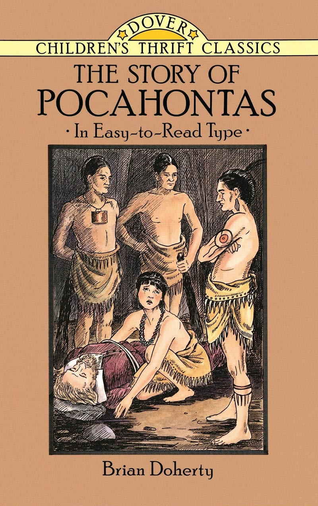

0
стр. з
0
сторінок

завантаження...

Брайен Доэрти
История Покахонтас (рассказанная Брайеном Доэрти)
Пособие подготовила Ольга Ламонова
Метод чтения Ильи Франка
Сontents
Chapter 1 The English Arrive in VirginiaChapter 2 Pocahontas and Her FamilyChapter 3 Problems in the ColonyChapter 4 Signals and ShotsChapter 5 Captain Smith Protects PocahontasChapter 6 Smith Helps the SettlersChapter 7 Smith Goes ExploringChapter 8 Attack on Smith's MenChapter 9 Smith Is CapturedChapter 10 Pocahontas Saves Captain SmithChapter 11 Pocahontas Saves the ColonyChapter 12 Pocahontas Is Married
Chapter 1
The English Arrive in Virginia
(Англичане прибывают в Виргинию).
In the winter of 1606 (зимой 1606 /года/), three English ships (три английских корабля), the Susan Constant ("Сьюзан Констант"; constant — неизменный; преданный, верный[1]), the Godspeed ("Годспид"[2]; godspeed — пожелание успеха, удачи) and the Discovery (и "Дискавери"[3]; discovery — обнаружение, открытие), started across the Atlantic under the command of Captain Christopher Newport (отправились в путь через Атлантический океан под командованием капитана Кристофера Ньюпорта[4]; to start — начинать, браться /за что-либо/; отправляться, пускаться в путь; command — власть, господство; воен. командование, управление). They carried 105 men (на них плыли сто пять человек: "они везли сто пять человек "; to carry — везти, перевозить), intending to settle at Roanoke Island (которые намеревались обосноваться на острове Роанок: "намеревавшихся обосноваться на острове Роанок"; to settle — поселиться, водвориться; населять, заселять /какой-либо район/), where an English colony had disappeared twenty years before (где английская колония /уже/ перестала существовать двадцать лет назад; to disappear — исчезать /из поля зрения/; исчезнуть /перестать существовать/; before — впереди; вначале, прежде, раньше), but they were driven further north by a storm (но они были унесены штормом дальше на север; to drive — везти, перевозить; мчаться, нестись /перемещаться с помощью ветра, воды и т. п./; storm — буря, гроза; мор. шторм).
constant ['kOnstqnt], godspeed ["gOd'spi:d], discovery [dIs'kAv(q)rI], Atlantic [qt'lxntIk]
In the winter of 1606, three English ships, the Susan Constant, the Godspeed and the Discovery, started across the Atlantic under the command of Captain Christopher Newport. They carried 105 men, intending to settle at Roanoke Island, where an English colony had disappeared twenty years before, but they were driven further north by a storm.
After many months at sea (после многих месяцев /проведенных/ в море), they began hunting for a suitable place for settlement (они начали подыскивать подходящее место для поселения; to hunt — охотиться; разыскивать). They sailed into the broad opening of Chesapeake Bay (они зашли в широкую бухту Чесапикского залива; to sail — плавать, совершать плавание; плыть под парусами; sail — парус; opening — отверстие, щель; бухта, залив) and were still moving northward (и все еще продвигались = плыли под парусами на север; north — север; northward — к северу, на север) when they encountered a wide river that flowed into the bay from the mainland on the west (когда они неожиданно натолкнулись на широкую реку = они увидели широкую реку, которая несла свои воды в залив с материка, /расположенного/ на западе; to encounter — /неожиданно/ встретить, столкнуться /с кем-либо/; to flow — струиться, течь; to flow into — впадать в). They turned the prows of their ships into this river (они повернули носы своих кораблей = они направили свои корабли в эту реку; prow — нос /судна/), which they called the James, in honor of their king (которую они назвали Джеймс[5] в честь своего короля; to call — звать; называть; honor — честь, честность; почет, уважение), and studied the shores for an inviting spot to land (и /тщательно/ обследовали берега /в поисках/ привлекательного места, /где можно было бы/ причалить; to study — изучать, исследовать /внимательно, тщательно/; to invite — приглашать, звать; привлекать, манить; inviting — заманчивый, привлекательный; to land — высаживаться /на берег/; приставать к берегу, причаливать).
suitable ['s(j)u:tqb(q)l], settlement ['setlmqnt], northward ['nO:Twqd], encounter [In'kauntq]
After many months at sea, they began hunting for a suitable place for settlement. They sailed into the broad opening of Chesapeake Bay and were still moving northward when they encountered a wide river that flowed into the bay from the mainland on the west. They turned the prows of their ships into this river, which they called the James, in honor of their king, and studied the shores for an inviting spot to land.
It was May (стоял: "был" май), with mild skies and soft breezes (с мягким климатом и теплыми ветрами; sky — небо, небеса; skies — климат, погода; soft — мягкий; умеренный, теплый /о климате, погоде, ветре, солнце и т. п./) that kept the craft sailing against the current (которые подгоняли корабль против течения; to keep smb., smth. doing smth. — заставлять кого-либо, что-либо продолжать действовать; to keep — держать, удерживать; craft — ремесло; морское судно). These men, standing on their decks, were sure (мужчины, стоявшие на палубах, были уверены) they had never gazed upon anything so beautiful (что они никогда не видели ничего настолько прекрасного; to gaze — пристально глядеть; созерцать). The banks were filled with wild flowers (берега были покрыты экзотическими цветами: "наполнены полевыми цветами"; bank — вал, насыпь; берег /реки/; to fill — наполнять, заполнять; wild — дикий /о животных/, дикорастущий /о растениях/), whose fragrance wafted across the smooth waters (чей аромат разносился над спокойными водами; to waft — гнать, нести /напр. корабль, о ветре/; нестись, доноситься /о звуках, запахах и т. п./; smooth — гладкий, ровный; плавный, спокойный), while the hills and mountains in the distance were softened to delicate tints against the blue sky (в то время как холмы и горы вдалеке расплылись мягкими оттенками на фоне голубого неба; distance — расстояние; отдаленность, даль; to soften — смягчать, облегчать /боль, страдание/; снижать, понижать, приглушать /звук/; delicate — утонченный, изысканный; нежный, едва уловимый; against — зд. указывает на фон, на котором выделяется какой-либо предмет).
current ['kArqnt], fragrance ['freIgrqns], delicate ['delIkIt]
It was May, with mild skies and soft breezes that kept the craft sailing against the current. These men, standing on their decks, were sure they had never gazed upon anything so beautiful. The banks were filled with wild flowers, whose fragrance wafted across the smooth waters, while the hills and mountains in the distance were softened to delicate tints against the blue sky.
There were men and women in this land (на этой земле были мужчины и женщины), descendants of those who had lived there for unknown ages (потомки тех /людей/, которые жили здесь с незапамятных времен: "в течение неизвестных веков"; age — возраст; долгий срок). They were standing on the shore (они стояли на берегу), watching the approaching vessels (наблюдая за приближающимися судами; vessel — сосуд /для жидкости/; корабль, судно). One party, among whom several women could be seen (одна группа /людей/, среди которых можно было увидеть нескольких женщин; party — сторона в сражении, споре; отряд, команда, группа), stood at least a hundred yards[6] back from the stream (стояла, по меньшей мере, в сотне ярдов в стороне от реки; back from — в стороне, вдалеке от; stream — поток, река, ручей) as if afraid to come nearer (словно боясь подойти ближе; afraid — испуганный; боящийся).
descendant [dI'sendqnt], unknown [An'nqun], vessel ['ves(q)l]
There were men and women in this land, descendants of those who had lived there for unknown ages. They were standing on the shore, watching the approaching vessels. One party, among whom several women could be seen, stood at least a hundred yards back from the stream as if afraid to come nearer.
Another party gathered on the edge of the river (другая группа собралась на берегу реки; edge — кромка, край), where there was a natural clearing of an acre or two (где была естественная поляна /протяженностью/ в акр или два; clearing — очистка; участок /леса/, расчищенный под пашню, прогалина; acre — акр /= 0,4 га/). When the Susan Constant, which was a hundred yards ahead of the smaller boats (когда "Сьюзан Констант", которая двигалась в сотне ярдов впереди меньших кораблей; ahead — вперед; впереди; boat — лодка; шлюпка; корабль; судно), pulled up alongside this group (поравнялась с этой группой; to pull up — останавливаться; alongside — около, рядом), two of the warriors on the bank let their arrows fly (двое из воинов, /стоявших/ на берегу, выпустили свои стрелы; to fly — летать, лететь; to let fly — бросить, швырнуть, выпустить что-либо: "пустить/дать лететь").
natural ['nxtS(q)rql], acre ['eIkq], alongside [q"lON'saId]
Another party gathered on the edge of the river, where there was a natural clearing of an acre or two. When the Susan Constant, which was a hundred yards ahead of the smaller boats, pulled up alongside this group, two of the warriors on the bank let their arrows fly.
The men on the decks smiled at these efforts (мужчины, /стоявшие/ на палубах, улыбнулись /при виде/ этих попыток; effort — усилие, напряжение; попытка). Captain Newport suggested they fire their guns into the party (капитан Ньюпорт предложил выстрелить из пушек по этой группе; to fire — зажигать, поджигать; стрелять, производить выстрел; gun — орудие, пушка), as they had done days before (как они уже делали = стреляли /несколькими/ днями ранее; to do — делать, производить; действовать, поступать /каким-либо способом/) when greeted with a shower of arrows (когда они были встречены градом стрел; to greet — приветствовать, здороваться; встречать, воспринимать; shower — ливень; множество, "град" /пуль, вопросов/).
"No, we should cultivate their good will (нет, нам следует искать их расположения; to cultivate — возделывать, обрабатывать /почву/; искать дружбы, дружить /с кем-либо/; good will — благожелательность, доброжелательность). We will need their friendship (нам понадобится их дружба), and must not use our guns (и /мы/ не должны использовать наши пушки) as long as our lives can be saved without them (до тех пор, пока наши жизни могут быть защищены и без них; to save — спасать; охранять, защищать)."
effort ['efqt], cultivate ['kAltIveIt], good will ["gud'wIl]
The men on the decks smiled at these efforts. Captain Newport suggested they fire their guns into the party, as they had done days before when greeted with a shower of arrows.
"No, we should cultivate their good will. We will need their friendship, and must not use our guns as long as our lives can be saved without them."
This remark was made by a man standing at the prow, spyglass in hand (это замечание было сделано мужчиной, который стоял на носу /корабля/ с подзорной трубой в руке; spy — шпион; тайное наблюдение; glass — стекло; подзорная труба, телескоп; spyglass — подзорная труба). He was of sturdy build (он был крепкого телосложения; sturdy — прочный, крепкий /о предметах, материалах/; крепкий, здоровый /о человеке, животном/; build — внешний вид, форма; телосложение), in well-to-do civilian's clothing (в дорогой штатской одежде: "в одежде обеспеченного штатского человека"; well-to-do — богатый, обеспеченный; civilian — штатский /человек/; лицо, состоящее на гражданской службе), with a full sandy beard and a huge mustache (с окладистой рыжеватой бородой и огромными усами; full — полный, заполненный; sandy — песчаный, песочный; рыжеватый, желто-красный /обыкн. о цвете волос/). His face was deeply tanned (его лицо было сильно загоревшим; deep — глубокий; насыщенный, темный, густой /о краске, цвете/; to tan — дубить /кожу/; загорать), he wore a sword at his side (он носил шпагу на боку; sword — меч; шпага, рапира; side — сторона; бок) and his face was resolute and firm (и его лицо было решительным и непреклонным; resolute — твердый, решительный; firm — твердый; решительный, настойчивый). He was not yet thirty years of age (ему еще не было тридцати лет; age — возраст) and no one could look at his figure without seeing he had unusual strength (и никто не мог взглянуть на его фигуру без того, чтобы /не/ увидеть, = и каждый, кто смотрел на его фигуру, видел, что он обладал необыкновенной силой).
prow [prau], spyglass ['spaIglQ:s], beard [bIqd], mustache [mq'stQ:S]
This remark was made by a man standing at the prow, spyglass in hand. He was of sturdy build, in well-to-do civilian's clothing, with a full sandy beard and a huge mustache. His face was deeply tanned, he wore a sword at his side and his face was resolute and firm. He was not yet thirty years of age and no one could look at his figure without seeing he had unusual strength.
Mentally and physically, he was stronger than the officers and crew around him (умственно и физически = и умом, и телом он был сильнее, чем офицеры и команда, окружавшие его: "вокруг него"; crew — судовая команда; экипаж /судна/). This man was Captain John Smith (этот человек был капитан Джон Смит[7]), whose great services later earned him the name "Father of Virginia" (чьи огромные заслуги позже принесли ему имя "Основатель Виргинии"; service — служба, занятие; заслуга; to earn — зарабатывать, получать доход; заслуживать; father — отец; создатель, основатель). He was one of the bravest of men (он был одним из самых мужественных людей) — unselfish (бескорыстным; selfish — эгоистичный), enterprising (деятельным; enterprise — предприятие /смелое, рискованное/; предприимчивость, смелая инициатива) and far-seeing (и проницательным; far — далеко, на большом расстоянии; to see — видеть; far-seeing — дальновидный, проницательный).
mentally ['ment(q)lI], physically ['fIzIklI], crew [kru:], enterprising ['entqpraIzIN]
Mentally and physically, he was stronger than the officers and crew around him. This man was Captain John Smith, whose great services later earned him the name "Father of Virginia." He was one of the bravest of men—unselfish, enterprising and far-seeing.
By the afternoon of the next day (к полудню следующего дня), the three vessels had already traveled eighty miles from the mouth of the James River (три корабля прошли уже восемьдесят миль от устья реки Джеймс; to travel — путешествовать; покрывать расстояние, проезжать; mouth — рот, уста; устье /реки/). They were approaching a peninsula (они приближались к полуострову; to approach — подходить, приближаться) where they had decided to make camp (где они решили расположиться лагерем; camp — лагерь, стоянка, место привала), when everyone's attention was turned upstream (когда внимание всех было обращено /к чему-то расположенному/ вверх по течению). Captain Smith lifted his telescope to his eyes (капитан Смит поднес подзорную трубу: "поднял телескоп" к глазам). Around a bend in the river a canoe shot into sight (за излучиной реки какое-то каноэ внезапно появилось в поле зрения; bend — сгибание, согнутое состояние; излучина реки; to shoot — стрелять; внезапно появиться; sight — зрение; поле зрения, видимость).
mouth [mauT], peninsula [pI'nInsjulq], telescope ['telIskqup]
By the afternoon of the next day, the three vessels had already traveled eighty miles from the mouth of the James River. They were approaching a peninsula where they had decided to make camp, when everyone's attention was turned upstream. Captain Smith lifted his telescope to his eyes. Around a bend in the river a canoe shot into sight.
Captain Newport, who also had a spyglass, stood near Smith (капитан Ньюпорт, у которого тоже была подзорная труба, стоял рядом со Смитом) and studied the small craft as well (и также изучал небольшое суденышко; craft — ремесло; морское, речное судно).
"Those two warriors have more courage than their friends (у этих двух воинов больше мужества, чем у их друзей)," Newport remarked (заметил Ньюпорт; to remark — замечать, наблюдать; делать замечание, высказываться).
"There is only one warrior in the canoe (в каноэ только один воин)," replied Smith, gazing through his telescope (ответил Смит, глядя пристально в телескоп); "the other is a woman, and (другой /седок в лодке/ это женщина, и) —"
study ['stAdI], craft [krQ:ft], courage ['kArIdZ]
Captain Newport, who also had a spyglass, stood near Smith and studied the small craft as well.
"Those two warriors have more courage than their friends," Newport remarked.
"There is only one warrior in the canoe," replied Smith, gazing through his telescope; "the other is a woman, and—"
Here Smith hesitated (здесь Смит замешкался; to hesitate — колебаться; сомневаться; медлить, находиться в нерешительности /на какой-то короткий промежуток времени/), but Newport spent another minute studying the canoe and said (а Ньюпорт провел еще минуту, изучая это каноэ, и сказал; to spend — тратить, расходовать; проводить /о времени/), "You are right (вы правы) — and the woman is not an old one (и женщина эта не стара)."
"She is not a woman, but a girl (это не женщина, а девочка)."
hesitate ['hezIteIt], canoe [kq'nu:], girl [gq:l]
Here Smith hesitated, but Newport spent another minute studying the canoe and said, "You are right—and the woman is not an old one."
"She is not a woman, but a girl."
Seated in the middle of the canoe was an Indian youth (сидевшим посередине каноэ оказался молодой индеец; youth — юность, молодость; молодой человек, юноша) who was less than twenty years old (которому было менее двадцати лет). Propelling the boat (продвигая лодку; to propel — толкать вперед; двигать), he faced the vessels downriver (он оказался лицом к лицу с судами, /двигавшимися/ ниже по реке; face — лицо, физиономия; to face — стоять лицом к /чему-либо/). He had long, black hair that dangled about his shoulders (у него были длинные черные волосы, которые свободно лежали по плечам; to dangle — болтаться, свободно свисать, качаться), and his face was stained with the juice of the puccoon, or blood-root (и его лицо было раскрашено соком /растения/ пакун или волчьей стопы; to stain — пачкать; красить, окрашивать; puccoon, blood-root — бот. волчья стопа канадская; blood — кровь; root — корень).
propel [prq'pel], dangle [dxNgl], juice [dZu:s], puccoon [pA'ku:n], bloodroot ['blAdru:t]
Seated in the middle of the canoe was an Indian youth who was less than twenty years old. Propelling the boat, he faced the vessels downriver. He had long, black hair that dangled about his shoulders, and his face was stained with the juice of the puccoon, or blood-root.
His chest was bare (его грудь была обнажена; chest — ящик, сундук; грудная клетка) but his waist was clasped with a deerskin girdle (а его талия была обвита замшевым поясом; to clasp — скреплять, застегивать; обвивать; deer — олень, лань; deerskin — оленья кожа, лосина, замша), a skirt falling below his knees (и юбкой, спадавшей ниже колен), with leggings that reached to his neatly fitted beaded moccasins (/кроме того, на нем были/ облегающие штаны, которые доходили до аккуратно подогнанных, расшитых бисером мокасин; to reach — протягивать, вытягивать; достигать, доходить; to fit — быть впору, быть в самый раз; bead — бусина, бисерина; beaded — украшенный бусинами, вышитый бисером). He was finely formed, fleet-footed and a strong warrior despite his youth (он был прекрасно развитым, быстроногим и сильным воином, несмотря на свою молодость; to form — придавать форму, придавать вид; тренировать, развивать; fleet — быстрый; foot — нога, ступня).
girdle [gq:dl], moccasin ['mOkqsIn], fleet-footed ['fli:tfutId]
His chest was bare but his waist was clasped with a deerskin girdle, a skirt falling below his knees, with leggings that reached to his neatly fitted beaded moccasins. He was finely formed, fleet-footed and a strong warrior despite his youth.
The other occupant of the little craft was the youth's sister (другим пассажиром маленького суденышка была сестра юноши; occupant — житель, обитатель; временный владелец). She was no more than twelve years old (ей было не более двенадцати лет), with features of almost classical beauty (/и ее/ черты лица /обладали/ почти что классической красотой). She had thrown back her doeskin robe (она сбросила свое замшевое одеяние; to throw — бросать, кидать; doe — самка /оленя, зайца и т. д./; doeskin — оленья кожа; robe — халат; женское платье), lined with wood dove's down (подбитое пухом дикого голубя; to line — класть на подкладку; обивать, обшивать /чем-либо/ изнутри; wood — лесной, дикий; dove — голубь; wood dove — вяхирь). She wore coral bracelets on her wrists and ankles (она носила = на ней были надеты коралловые браслеты на запястьях и лодыжках), and a white plume in her abundant hair (и белое перо в своих густых волосах; abundant — обильный, изобильный).
occupant ['Okjupqnt], feature ['fi:tSq], beauty ['bju:tI], doeskin ['dquskIn], wrist [rIst], ankle ['xNk(q)l], abundant [q'bAndqnt]
The other occupant of the little craft was the youth's sister. She was no more than twelve years old, with features of almost classical beauty. She had thrown back her doeskin robe, lined with wood dove's down. She wore coral bracelets on her wrists and ankles, and a white plume in her abundant hair.
Her leggings and skirt were similar to her brother's (ее обтягивающие штаны и юбка были такими же, как и у ее брата; similar — подобный; похожий, сходный), but the upper part of her body was clothed in a close-fitting doeskin jacket (но верхняя часть ее тела была одета в облегающую замшевую куртку; to clothe — одевать /кого-либо/, надевать /что-либо/; close-fitting — плотно облегающий, в обтяжку /об одежде/) that covered her arms to the elbow (которая закрывала ее руки до локтей). Her face was not treated with the red juice that her brother used (ее лицо не было покрыто тем красным соком, которым воспользовался ее брат; to treat — обращаться, обходиться; обрабатывать, подвергать воздействию /чего-либо/).
leggings ['legINz], clothe [klquD], elbow ['elbqu]
Her leggings and skirt were similar to her brother's, but the upper part of her body was clothed in a close-fitting doeskin jacket that covered her arms to the elbow. Her face was not treated with the red juice that her brother used.
This girl was a natural athlete (эта девушка от природы была спортивной; natural — естественный, природный; присущий, врожденный; athlete — спортсмен; легкоатлет) who could speed through the woods like a deer (/она/ могла носиться по лесам подобно лани; to speed — двигаться поспешно; мчаться), shoot an arrow with the accuracy of a veteran warrior (выпускать стрелы = стрелять с точностью опытного воина; accuracy — правильность, соответствие, точность; veteran — опытный, много повоевавший /о солдатах, военных/), swim like a fish (плавать как рыба) and read nature's faint signs the way we might read a book (и читать еле заметные знаки природы так же, как мы можем читать книгу; faint — слабый, ослабевший; тусклый; нечеткий, слабый /недостаточный для восприятия/; way — путь, дорога; манера, привычка, образ действия).
athlete ['xTli:t], accuracy ['xkjqrqsI], veteran ['vet(q)rqn]
This girl was a natural athlete who could speed through the woods like a deer, shoot an arrow with the accuracy of a veteran warrior, swim like a fish and read nature's faint signs the way we might read a book.
Nantaquas, as the young man was called, and his sister, Pocahontas (Нантакуас, так звали молодого человека, и его сестра Покахонтас[8]), had left their home a long way up the river (покинули свой дом, /расположенный/ на значительном расстоянии вверх по реке; a long way — далеко), paddling downstream, perhaps to call on some friends (/и/ плыли вниз по течению, возможно, чтобы навестить друзей; paddle — байдарочное весло, весло для каноэ; to paddle — грести байдарочным веслом, плыть на байдарке; to call on smb. — посещать кого-либо), when, rounding a bend in the river (когда, обогнув излучину реки; to round — округлять, делать круглым; огибать, обходить кругом), they were startled by the sight of the three ships slowly coming up the river with their white sails spread (они были напуганы видом трех кораблей, медленно поднимавшихся вверх по реке с наполненными парусами; sail — парус, паруса; to spread — развертываться, простираться).
paddle [pxdl], sight [saIt], sail [seIl], spread [spred]
Nantaquas, as the young man was called, and his sister, Pocahontas, had left their home a long way up the river, paddling downstream, perhaps to call on some friends, when, rounding a bend in the river, they were startled by the sight of the three ships slowly coming up the river with their white sails spread.
Nantaquas stopped paddling for a moment (Нантакуас перестал грести на мгновение) while both gazed at the sight (в то время как оба они уставились на это зрелище; to gaze — пристально глядеть). They had heard stories told by the tribes to the south (они /раньше/ слышали истории, рассказанные южными племенами: "племенами, /живущими/ к югу") of a people who lived far beyond the sea (о людях, которые жили далеко за морем), with canoes like giant birds (с каноэ, подобными огромным птицам; giant — гигантский, огромный, громадный) that were able to sail through storms in safety (которые могли плыть сквозь шторма невредимыми; safety — безопасность; невредимость, сохранность).
silent ['saIlqnt], gaze [geIz], tribe [traIb], beyond [bI'jOnd], giant ['dZaIqnt]
Nantaquas stopped paddling for a moment while both gazed at the sight. They had heard stories told by the tribes to the south of a people who lived far beyond the sea, with canoes like giant birds that were able to sail through storms in safety.
When Pocahontas had looked for several minutes in silent amazement at the European ships (после того как Покахонтас смотрела несколько минут в немом удивлении на европейские корабли), watching the men on the decks, she asked (наблюдая за мужчинами на палубах, она спросила):
"Why are they coming to the country of Powhatan (зачем они приезжают в страну поухатанов[9])?"
"I don't know (я не знаю)," her brother replied (ответил ее брат), "maybe they intend to take away our hunting grounds (может быть, они намереваются забрать наши охотничьи угодья; to hunt — охотиться, ловить; ground — земля; участок земли; hunting ground — охотничье угодье)."
silent ['saIlqnt], amazement [q'meIzmqnt], European ["ju(q)rq'pIqn]
When Pocahontas had looked for several minutes in silent amazement at the European ships, watching the men on the decks, she asked:
"Why are they coming to the country of Powhatan?"
"I don't know," her brother replied, "maybe they intend to take away our hunting grounds."
"How can that be (как может такое случиться)," the girl laughed (рассмеялась девочка), "when the warriors of Powhatan are like the leaves on the trees (когда воинов у Поухатана, как листьев на деревьях: "когда воины Поухатана похожи на листья на деревьях")? There are only a handful of the white folk (/а здесь/ только горстка белых людей; handful — пригоршня, горсть; перен. горстка, небольшое количество; folk — люди, определенная группа людей) — we have nothing to fear from them (нам нечего бояться их). Let's visit the big canoes (давай побываем на этих больших каноэ)."
laugh [lQ:f], leaves [li:vz], handful ['hxndful], fear ['fIq]
"How can that be," the girl laughed, "when the warriors of Powhatan are like the leaves on the trees? There are only a handful of the white folk—we have nothing to fear from them. Let's visit the big canoes."
The youth increased the speed of his boat, drawing rapidly near the Susan Constant (юноша увеличил скорость /движения/ своей лодки, стремительно приближаясь к "Сьюзан Констант"; to draw — тащить, волочить; перевозить, перемещать), whose passengers and crew watched his approach with keen curiosity (чьи пассажиры и команда наблюдали за его приближением с большим любопытством; keen — острый). Nantaquas sped on downstream, however, doubting the wisdom of carrying out his sister's wishes (Нантакуас продвигался вниз по течению, сомневаясь, однако, в благоразумии выполнения желаний своей сестры; wisdom — мудрость; благоразумие, здравый смысл; to carry out — доводить до конца, завершать; выполнять /план, приказ, обещание/). She believed that any people who were treated kindly (она верила, что все люди, с которыми обращались по-доброму) would give the same treatment to those that were good to them (будут также обращаться с теми, кто был добр с ними; to treat — обращаться, обходиться; treatment — обращение, обхождение).
increase [In'kri:s], curiosity ["kju(q)rI'OsItI], doubting ['dautIN], wisdom ['wIzdqm]
The youth increased the speed of his boat, drawing rapidly near the Susan Constant, whose passengers and crew watched his approach with keen curiosity. Nantaquas sped on downstream, however, doubting the wisdom of carrying out his sister's wishes. She believed that any people who were treated kindly would give the same treatment to those that were good to them.
But Nantaquas recalled that the stories of the white men he had heard (но Нантакуас помнил, что те истории о белых людях, которые он слышал; to recall — отзывать /посла, депутата и т. п./; вспоминать, припоминать) were not to their credit (не делали им чести; credit — вера, доверие; честь, заслуга). Some of them had slain Indians as though they were wild animals (некоторые из них убивали индейцев, словно те были дикими животными; to slay — убивать, умерщвлять); they had treated them with great cruelty (они обращались с ними с величайшей жестокостью) and repaid kindness with brutality (и расплачивались за добро жестокостью; to repay — возвращать /долг/; отплачивать, вознаграждать).
credit ['kredIt], wild [waIld], cruelty ['kru:qltI], brutality [bru:'txlItI]
But Nantaquas recalled that the stories of the white men he had heard were not to their credit. Some of them had slain Indians as though they were wild animals; they had treated them with great cruelty and repaid kindness with brutality.
The tribes along the coasts further south told of the Spanish explorers (племена, /жившие/ вдоль берегов дальше на юг, рассказывали об испанских исследователях; explorer — исследователь /страны, географического района/) who came looking for gold and a Fountain of Youth (которые приходили в поисках золота и источника /вечной/ молодости; fountain — фонтан; ключ, источник), bringing with them sickness and war (принося с собой болезни и войну). Many Indians had been killed or taken from their homelands as slaves (множество индейцев было убито или уведено со своих земель рабами; homeland — родина, отечество).
further ['fq:Dq], explorer [Ik'splO:rq], fountain ['fauntIn]
The tribes along the coasts further south told of the Spanish explorers who came looking for gold and a Fountain of Youth, bringing with them sickness and war. Many Indians had been killed or taken from their homelands as slaves.
Closer to the land of Powhatan there had been other Englishmen, too (ближе к стране поухатанов побывали также и другие англичане; land — земля, суша; страна, территория). But their settlement on Roanoke Island and all the white people there (но их поселение на острове Роанок и все белые люди, /жившие/ там) had mysteriously disappeared almost twenty years ago (таинственно исчезли почти что двадцать лет назад), before Nantaquas was born (до того, как Нантакуас родился: "был рожден"; to bear — переносить; рождать, производить на свет).
settlement ['setlmqnt], mysterious [mI'stI(q)rIqs], disappear ["dIsq'pIq]
Closer to the land of Powhatan there had been other Englishmen, too. But their settlement on Roanoke Island and all the white people there had mysteriously disappeared almost twenty years ago, before Nantaquas was born.
Whether they were killed by the Indians (были ли они убиты индейцами), or whether they had joined the friendly tribes (или они присоединились к дружественным племенам; to join — соединять, связывать; соединяться, объединяться) who perhaps rescued them from starvation (которые, возможно, спасли их от голодной смерти; starvation — голод; голодная смерть), Nantaquas was not sure (Нантакуас не был уверен = не знал наверняка). He realized, however, that too little was known about these new arrivals (он понимал, однако, что слишком мало было известно об этих вновь прибывших; to realize — осуществлять, выполнить; /ясно/ понимать, осознавать; arrival — приезд, прибытие; вновь прибывший). They might be friendly (они могли быть дружественно настроенными), but they might just as likely try to carry off his sister or him as prisoners (но они могли также попытаться увести его сестру или его в качестве пленников; to carry off — увести, похитить; prisoner — заключенный, арестант; пленник, узник), or demand a high price for their ransom (или потребовать высокую цену за их выкуп).
join ['dZOIn], rescue ['reskju:], starvation [stQ:'veIS(q)n], prisoner ['prIz(q)nq], ransom ['rxns(q)m]
Whether they were killed by the Indians, or whether they had joined the friendly tribes who perhaps rescued them from starvation, Nantaquas was not sure. He realized, however, that too little was known about these new arrivals. They might be friendly, but they might just as likely try to carry off his sister or him as prisoners, or demand a high price for their ransom.
Nantaquas checked his boat a hundred yards from the largest vessel (Нантакуас остановил свою лодку в сотне ярдов от самого большого судна). Smith and the other passengers were at the rail of the Susan Constant (Смит и другие пассажиры стояли /у борта "Сьюзан Констант", держась за/ поручни; rail — ограда, изгородь; поручень, перила), looking down at the visitors (глядя вниз, на гостей; visitor — посетитель, гость) who hesitated to draw nearer (которые не решались подплыть ближе).
"Welcome (добро пожаловать)! Welcome!" Smith called out (выкрикнул Смит), "Won't you come aboard that we may shake hands (не подниметесь ли вы на борт, чтобы мы могли пожать руки; to shake — трясти, встряхивать; пожимать /руку/; to shake hands — пожать руки; обменяться рукопожатием) and break bread with you (и разделить трапезу с вами; to break — ломать; bread — хлеб; to break bread with smb. — разделить трапезу с кем-либо; пользоваться чьим-либо гостеприимством)?"
check [tSek], aboard [q'bO:d], break [breIk], bread [bred]
Nantaquas checked his boat a hundred yards from the largest vessel. Smith and the other passengers were at the rail of the Susan Constant, looking down at the visitors who hesitated to draw nearer.
"Welcome! Welcome!" Smith called out, "Won't you come aboard that we may shake hands and break bread with you?"
Although Nantaquas and his sister did not understand the words (хотя Нантакуас и его сестра не поняли слов), the gestures of the men were clear (жесты людей были понятны; clear — светлый, ясный; ясный, понятный, недвусмысленный).
"Why do you hesitate (почему ты мешкаешь; to hesitate — колебаться, мешкать)?" Pocahontas asked impatiently (нетерпеливо спросила Покахонтас; impatient — нетерпеливый). "They want to greet us (они хотят поприветствовать нас) — don't be ungrateful (не будь неблагодарным; grateful — благодарный, признательный)."
But Nantaquas was decisive (но Нантакуас был тверд; decisive — решающий, имеющий решающее значение; твердый, решительный /о характере, человеке/; to decide — решать): "They are strangers (они чужеземцы) — we have heard evil things of many of them (мы слышали дурные вещи о многих из них; evil — дурной, плохой; злой; зловещий). We shall go no closer (мы не станем подходить ближе)."
gesture ['dZestSq], clear [klIq], decisive [dI'saIsIv]
Although Nantaquas and his sister did not understand the words, the gestures of the men were clear.
"Why do you hesitate?" Pocahontas asked impatiently. "They want to greet us—don't be ungrateful."
But Nantaquas was decisive: "They are strangers—we have heard evil things of many of them. We shall go no closer."
In answer to the Englishmen's inviting gestures (в ответ на приглашающие жесты англичан; to invite — приглашать, звать), Nantaquas raised one hand and waved it toward the ship (Нантакуас поднял одну руку и помахал ей /в направлении корабля/; to wave — развеваться /о флаге/; подавать знак /рукой/, махать / в знак приветствия, прощания и т. д./). He meant it as a polite refusal to accept the invitation (он думал, что это будет вежливым отказом: "подразумевал это как вежливый отказ" на приглашение: "принять приглашение"; to mean — намереваться, иметь в виду; думать, подразумевать). Then he sent the canoe skimming upstream (затем он направил каноэ вверх по течению: "направил скользить вверх по течению"; to send — посылать, отправлять; приводить в какое-либо состояние; to skim — снимать /накипь и т. п./; едва касаться, нестись, скользить).
inviting [In'vaItIN], refusal [rI'fju:z(q)l], invitation ["InvI'teIS(q)n]
In answer to the Englishmen's inviting gestures, Nantaquas raised one hand and waved it toward the ship. He meant it as a polite refusal to accept the invitation. Then he sent the canoe skimming upstream.
Smith noticed a strange thing at this point (в этот момент Смит обратил внимание на нечто странное; strange — чужой, чуждый; странный, необыкновенный; point — точка, пятнышко; момент /времени/). Nothing seemed to escape his keen eyes (ничто, казалось, не ускользало от его острого взгляда; to escape — бежать, совершать побег; ускользать, избегать). He saw a thin column of smoke (он увидел тонкий столб дыма; column — колонна; столб /воды, воздуха и т. п., напоминающий по форме колонну/) filtering upward from among the trees on a wooded elevation, a little way inland (медленно поднимающийся между деревьями на лесистом пригорке недалеко от берега; wood — лес; wooded — лесистый; elevation — повышение, поднятие; возвышенность, пригорок; inland — вглубь страны, удаленный от моря или границы). It had a wavy motion from side to side (он двигался из стороны в сторону; wavy — волнистый, волнообразный /также о движении/; motion — движение; to have motion — совершать движение, двигаться). The column of smoke was broken (столб дыма был рваным; broken — разбитый, сломанный; дробный, нецелый), showing two distinct gaps between the base and the top (имеющим два явных разрыва между основанием и верхом; to show — показывать /направление, объект и т. п./; выставлять, демонстрировать; distinct — отдельный, особый; определенный, явный; base — основа, основание; top — верхушка, вершина).
escape [I'skeIp], column ['kOlqm], elevation ["elI'veIS(q)n]
Smith noticed a strange thing at this point. Nothing seemed to escape his keen eyes. He saw a thin column of smoke filtering upward from among the trees on a wooded elevation, a little way inland. It had a wavy motion from side to side. The column of smoke was broken, showing two distinct gaps between the base and the top.
There could be no question that it was a signal fire (не могло быть и сомнения в том, что это был сигнальный костер; question — вопрос; сомнение, возражение; signal — поразительный, выдающийся; сигнальный; fire — огонь, пламя). He was certain that, whatever the message might be (он был уверен, что каким бы ни было сообщение), it had to do with the Englishmen (оно было связано с англичанами; to have to do with smb., smth. — иметь отношение к кому-либо, чему-либо) who were sailing up the great river (которые плыли вверх по большой реке), searching for a spot upon which to found their settlement (в поисках места, на котором /они могли бы/ основать свое поселение).
question ['kwestS(q)n], signal ['sIgn(q)l], message ['mesIdZ]
There could be no question that it was a signal fire. He was certain that, whatever the message might be, it had to do with the Englishmen who were sailing up the great river, searching for a spot upon which to found their settlement.
Chapter 2
Pocahontas and Her Family
(Покахонтас и ее семья).
Nantaquas paddled like one who could never tire (Нантакуас греб подобно человеку, который не мог никогда устать = без устали работал веслом). He had come a long distance downstream on this day in May (он преодолел большое расстояние вниз по течению этим майским днем; long — длинный). His sister was displeased because of his refusal to take her aboard the big canoe (его сестра была раздосадована его отказом подняться с ней на борт того большого каноэ) and she meant him to know it (и она хотела, чтобы он знал об этом). He understood her feeling (он понимал, что она чувствовала; feeling — ощущение, чувство /физическое/; эмоция, переживание, чувство), and wisely gave her time to get over it (и благоразумно дал ей время, чтобы пережить это; wise — мудрый; благоразумный; to get over — перейти, перелезть; свыкнуться с мыслью о чем-либо; пережить что-либо). Nevertheless, she was planning her revenge (тем не менее она планировала свою месть).
tire ['taIq], displease [dIs'pli:z], nevertheless ["nevqDq'les], revenge [rI'vendZ]
Nantaquas paddled like one who could never tire. He had come a long distance downstream on this day in May. His sister was displeased because of his refusal to take her aboard the big canoe and she meant him to know it. He understood her feeling, and wisely gave her time to get over it. Nevertheless, she was planning her revenge.
The canoe had not yet touched land (каноэ еще не коснулось берега: "земли") when the girl leaped out as lightly as a fawn (когда девчушка выпрыгнула /из каноэ/ легко, словно молодая лань; fawn — молодой олень /до одного года/), not pausing to pick up her bow and quiver (не останавливаясь, чтобы поднять свои лук и колчан; to pause — делать паузу, временно прекращать, останавливаться) lying in the boat with her brother's (лежавшие в лодке /вместе/ с /луком и колчаном/ ее брата). Turning around, she grasped the front of the craft with both hands (обернувшись, она схватила переднюю часть лодки двумя руками; both — оба, обе), as if to draw it onto the bank (словно /для того, чтобы/ вытащить ее на берег).
touch [tAtS], lightly ['laItlI], quiver ['kwIvq]
The canoe had not yet touched land when the girl leaped out as lightly as a fawn, not pausing to pick up her bow and quiver lying in the boat with her brother's. Turning around, she grasped the front of the craft with both hands, as if to draw it onto the bank.
Nantaquas rose to his feet (Нантакуас встал на ноги; to rise — подниматься; вставать на ноги), bending to pick up the bows and arrows (наклонившись, чтобы поднять луки и стрелы). While he was doing so (пока он делал это), the girl gave a lightning-fast sideways jerk to the boat (девочка молниеносно толкнула лодку в сторону; lightning — молния; fast — скорый, быстрый; jerk — резкое движение, рывок, толчок), snapping it forward fully two feet (подвигая ее вперед на целых два фута; to snap — щелкать, лязгать; схватить, цапнуть; быстро изменить положение). Thrown suddenly off balance (внезапно потеряв равновесие; to throw — бросать, кидать; to throw smb. off smth. — сбивать, сбрасывать кого-либо с чего-либо; balance — весы; равновесие), Nantaquas went backward over the side of the canoe (Нантакуас упал спиной через борт каноэ; to go — идти, ходить; двигаться в определенном направлении; backward — назад) and, as his heels kicked in the air (и когда его пятки сверкнули в воздухе; to kick — ударять ногой, пинать), he dropped out of sight under the water (он упал /и скрылся/ из виду под водой; to drop — капать, стекать каплями; падать).
lightning ['laItnIN], jerk [dZq:k], balance ['bxlqns]
Nantaquas rose to his feet, bending to pick up the bows and arrows. While he was doing so, the girl gave a lightning-fast sideways jerk to the boat, snapping it forward fully two feet. Thrown suddenly off balance, Nantaquas went backward over the side of the canoe and, as his heels kicked in the air, he dropped out of sight under the water.
Pocahontas screamed with delight (Покахонтас вскрикнула от восторга). She had punished her brother as she planned (она наказала своего брата, как и планировала). But her brother soon recovered and gave chase (но ее брат вскоре пришел в себя и погнался за ней; to recover — вновь обретать, получать обратно; оправляться, приходить в себя; chase — преследование, погоня; to give chase — гнаться, преследовать). She ran as fast as she could to get away (она побежала изо всех сил: "так быстро, как она могла", чтобы ускользнуть /от него/; to get away — уходить, отправляться; удирать), but ten to fifteen yards ahead stood an Indian (но в десяти-пятнадцати ярдах впереди стоял индеец), six feet tall (шести футов ростом; tall — высокий, высокорослый; имеющий такой-то рост), motionlessly surveying the couple with an inquiring expression (который неподвижно наблюдал за этой парочкой с вопросительным выражением /лица/; motion — движение; motionless — неподвижный, без движения; to survey — обозревать, осматривать; to inquire — осведомляться, справляться; expression — выражение /чувств и т. п./; выражение /лица, глаз и т. п./).
scream [skri:m], delight [dI'laIt], motionlessly ['mquS(q)nlIslI], survey [sq'veI], couple ['kAp(q)l], inquiring [In'kwaI(q)rIN], expression [Ik'spreS(q)n]
Pocahontas screamed with delight. She had punished her brother as she planned. But her brother soon recovered and gave chase. She ran as fast as she could to get away, but ten to fifteen yards ahead stood an Indian, six feet tall, motionlessly surveying the couple with an inquiring expression.
His long locks were sprinkled with gray (его длинные волосы были тронуты сединой; lock — локон; мн.ч. волосы; to sprinkle — брызгать, кропить; посыпать, усеивать; gray = grey — серый цвет; седина), and his face was stern and lined with the passage of many stormy years (и его лицо было суровым и морщинистым от прожитых бурных лет: "с прошествием множества неспокойных лет"; line — линия; морщина; lined — линованный; морщинистый, покрытый морщинами; passage — прохождение, переход; ход, течение /событий, времени/; stormy — бурный; штормовой; неистовый, яростный, бурный). He was dressed like the younger warrior (он был одет так же, как молодой воин) except that his face was unstained (за исключением того, что его лицо не было разукрашено; to stain — пачкать; красить, окрашивать; unstained — незапятнанный, не имеющий пятен). In the belt around his waist were thrust a long knife and the handle of a tomahawk (за поясом на талии были длинный кинжал и рукоятка томагавка; to thrust — колоть, пронзать; засовывать, совать, пихать), but he carried no bow or quiver (но у него не было ни лука, ни колчана; to carry — везти, перевозить; иметь при себе, носить с собой).
stern [stq:n], passage ['pxsIdZ], unstained ["An'steInd], thrust [TrAst], tomahawk ['tOmqhO:k]
His long locks were sprinkled with gray, and his face was stern and lined with the passage of many stormy years. He was dressed like the younger warrior except that his face was unstained. In the belt around his waist were thrust a long knife and the handle of a tomahawk, but he carried no bow or quiver.
Hardly had the girl caught sight of him (едва девочка заметила его; to catch — ловить, поймать; to catch sight of — заметить кого-либо, что-либо), when she ran forward (как она побежала навстречу ему; forward — вперед) and, throwing both arms around him (и, обнимая его: "бросая обе руки вокруг него"; to throw — бросать, кидать), called out in panic (воскликнула в страхе; panic — паника, переполох, тревога): "Father, save me from Nantaquas (отец, спаси меня от Нантакуаса)! He wants to kill me (он хочет убить меня)!"
The father gazed at the young man and demanded (отец посмотрел на молодого человека и спросил): "What is the meaning of this (что это значит; meaning — значение, смысл)?"
caught [kO:t], panic ['pxnIk], demand [dI'mQ:nd]
Hardly had the girl caught sight of him, when she ran forward and, throwing both arms around him, called out in panic: "Father, save me from Nantaquas! He wants to kill me!"
The father gazed at the young man and demanded: "What is the meaning of this?"
This was the famous chieftain, Powhatan (это был прославленный вождь Поухатан[10]; famous — видный, выдающийся, знаменитый; chieftain — вождь /клана, племени/). He ruled over numerous tribes (он правил многочисленными племенами; to rule — править; господствовать, властвовать /особ. о монархах/), nearly all of whom he had conquered and brought under his sway (почти все из которых он победил и подчинил своей власти; to bring smth., smb. under /control/ — подчинять, покорять что-либо, кого-либо; sway — взмах, качание, колебание; влияние, власть). From Virginia to the far south he had no equal (от Виргинии далеко на юг ему не было равных; equal — равный, ровня). Pocahontas, pretty and bright, was his favorite child (Покахонтас, хорошенькая и умная, была его любимым ребенком; bright — яркий; блестящий; умный, сметливый /обычно по отношению к младшему поколению/) and he permitted many liberties from her (и он позволял ей: "от нее" многие вольности; liberty — свобода; бесцеремонность, вольность).
famous ['feImqs], chieftain ['tSi:ftqn], rule [ru:l], numerous ['nju:m(q)rqs], conquer ['kONkq], Virginia [vq'dZInIq], liberty ['lIbqtI]
This was the famous chieftain, Powhatan. He ruled over numerous tribes, nearly all of whom he had conquered and brought under his sway. From Virginia to the far south he had no equal. Pocahontas, pretty and bright, was his favorite child and he permitted many liberties from her.
Nantaquas was also a favorite (Нантакуас также был любимцем), though Powhatan had other worthy sons (хотя у Поухатана были и другие достойные сыновья).
"Let my child go home (пусть мое дитя идет домой). Powhatan has something he would say to Nantaquas (у Поухатана есть что сказать Нантакуасу)."
Pocahontas darted from sight (Покахонтас скрылась из виду; to dart — бросать, метать /стрелы и т. п./; рвануться, кинуться) and the chieftain continued (а вождь продолжил): "The white men have come across the Deep Water to the hunting grounds of Powhatan and his people (белые люди пришли из-за Глубокой Воды на охотничьи угодья Поухатана и его народа)."
favorite ['feIv(q)rIt], worthy ['wq:DI], continue [kqn'tInju:]
Nantaquas was also a favorite, though Powhatan had other worthy sons.
"Let my child go home. Powhatan has something he would say to Nantaquas."
Pocahontas darted from sight and the chieftain continued: "The white men have come across the Deep Water to the hunting grounds of Powhatan and his people."
"Yes," the youth responded (юноша ответил), "we met them on the river in their big canoes (вы встретили их на реке в их больших каноэ). They spoke words we did not understand (они говорили слова, которые мы не поняли), nor could they understand us (и они не смогли понять нас). They have come to make their homes among us (они пришли, чтобы поселиться с нами; home — дом, жилище; местожительство, проживание; to make home — поселиться; among — указывает на положение среди группы предметов или лиц: среди, посреди, между)."
youth [juT], respond [rI'spOnd], understand ["Andq'stxnd]
"Yes," the youth responded, "we met them on the river in their big canoes. They spoke words we did not understand, nor could they understand us. They have come to make their homes among us."
So Powhatan, from this and the signal fires he had read (поэтому Поухатан, исходя из этого и из тех сигнальных костров, которые он уже увидел и истолковал; to read — читать; разбирать, расшифровывать), knew of the coming of the Europeans (знал о приближении европейцев) while they were sailing up the James (пока те плыли вверх по реке Джеймс), several days before he saw any of them (за несколько дней до того, как он увидел их: "кого-нибудь из них"). Powhatan was deeply disturbed by the arrival of the English (Поухатан был глубоко встревожен прибытием англичан; to disturb — нарушать ход, движение, равновесие; волновать, тревожить).
fire ['faIq], disturbed [dIs'tq:bd], arrival [q'raIv(q)l]
So Powhatan, from this and the signal fires he had read, knew of the coming of the Europeans while they were sailing up the James, several days before he saw any of them. Powhatan was deeply disturbed by the arrival of the English.
"They will come to land and build their wigwams (они придут на землю и построят свои вигвамы; wigwam — вигвам[11]; дом, жилище ). They will till the ground (они будут пахать землю; to till — возделывать землю, пахать) and hunt the game in the woods (и охотиться на дичь в лесах; game — дичь, зверь, добытый на охоте). By and by others will come and make their homes beside them (вскоре другие придут и поселяться рядом с ними; by and by — вскоре); and they will keep on coming (и они будут продолжать приезжать; to keep on — продолжать /делать что-либо/), until they are like the leaves on the trees (пока их не станет как листьев на деревьях).
build [bIld], wigwam ['wIgwxm], beside [bI'saId]
"They will come to land and build their wigwams. They will till the ground and hunt the game in the woods. By and by others will come and make their homes beside them; and they will keep on coming, until they are like the leaves on the trees.
"We have heard from the Indians of the south (мы уже слышали от индейцев с юга) that they bring strange weapons that shoot fire (что они несут странные орудия, которые стреляют огнем) and slay men who are beyond the reach of our arrows (и убивают людей, до которых не могут долететь наши стрелы: "которые за пределами досягаемости наших стрел"; reach — протягивание /руки и т. п./; предел досягаемости, досягаемость). They will kill our people (они будут убивать наших людей) or drive us into the sea (или загонять нас в море; to drive — везти, перевозить; гнать; преследовать), until none are left (до тех пор, пока ни одного не останется)."
south [sauT], weapon ['wepqn], reach [ri:tS]
"We have heard from the Indians of the south that they bring strange weapons that shoot fire and slay men who are beyond the reach of our arrows. They will kill our people or drive us into the sea, until none are left."
"The words of Powhatan are wise (слова Поухатана мудры)," said Nantaquas respectfully (сказал Нантакуас почтительно; to respect — уважать; почитать, чтить). "I am afraid of them (я боюсь их) and would not trust Pocahontas in their power (и не вверил бы Покахонтас их власти; to trust — верить, доверять; вверять, доверять, поручать попечению; power — сила, мощь; могущество, сила, власть)."
"My son did right (мой сын поступил правильно). She is but a child (она всего лишь ребенок); she must stay away from them (она должна держаться подальше от них; to stay away — не приходить, не являться; избегать)."
wise [waIz], respectfully [rI'spektf(q)lI], afraid [q'freId], power ['pauq]
"The words of Powhatan are wise," said Nantaquas respectfully. "I am afraid of them and would not trust Pocahontas in their power."
"My son did right. She is but a child; she must stay away from them."
"And what shall be done with the white men (а что делать с белыми людьми)?" asked Nantaquas. "Shall they be left alone when they go ashore (оставить ли их в покое, когда они сойдут на берег; to leave smb. alone — оставлять кого-либо в покое, не трогать кого-либо; ashore — к берегу, на берег; to go ashore — сходить на берег), that their numbers may increase (чтобы их численность могла возрасти; number — число, цифра; количество, число)?—though I do not think they had any women with them (хотя мне кажется, что с ними нет женщин)."
"When the serpent is small (когда змея мала), a child may crush it under the heel of her moccasin (/любая/ девочка может раздавить ее под пятой своего мокасина), but, if left to grow (но если позволить ей вырасти; to leave — уходить, уезжать; позволять, разрешать; to leave smb. to do smth. — позволить кому-либо делать что-либо), it will soon sting her to death (она вскоре ужалит ее до смерти)."
ashore [q'SO:], serpent ['sq:pqnt], crush [krAS], death [deT]
"And what shall be done with the white men?" asked Nantaquas. "Shall they be left alone when they go ashore, that their numbers may increase?—though I do not think they had any women with them."
"When the serpent is small, a child may crush it under the heel of her moccasin, but, if left to grow, it will soon sting her to death."
The meaning of these words was clear (смысл этих слов был ясен). Powhatan intended to destroy the colony (Поухатан намеревался уничтожить поселение; to destroy — разрушать, уничтожать; colony — колония; поселение) before the white men could send for other friends to sail across the sea (прежде, чем белые люди могли бы послать за друзьями, чтобы те приплыли из-за моря; to send for — посылать за, вызвать, пригласить). Few though they were (хотя их было и немного), this work would be hard and dangerous (эта задача будет трудной и опасной; work — работа, труд; дело, поступок; hard — жесткий, твердый; трудный, утомительный, тяжелый), when so little was known of their weapons (когда так мало было известно об их оружии); but no doubt, the thousands of warriors (но, вне всяких сомнений, те тысячи воинов) that Powhatan could summon to the task would do it well (которых Поухатан мог собрать для /выполнения/ этой задачи, справятся с ней отлично; to summon — вызывать, позвать; созывать /собрание и т. п./).
destroy [dIs'trOI], colony ['kOlqnI], dangerous ['deIndZqrqs]
The meaning of these words was clear. Powhatan intended to destroy the colony before the white men could send for other friends to sail across the sea. Few though they were, this work would be hard and dangerous, when so little was known of their weapons; but no doubt, the thousands of warriors that Powhatan could summon to the task would do it well.
Powhatan, having made known his resolve (Поухатан, известив о своем решении; to make smth. known — сообщить о чем-либо, обнародовать что-либо; resolve — решимость, решительность; намерение, решение), ordered his son to lead the way to where the canoe had been left (приказал своему сыну показывать путь к тому месту, где было оставлено каноэ). When they reached it, he stepped in (когда они дошли до него, он сел в него: "шагнул в него"; step — шаг; to step — ступать, шагать, делать шаг) and took his place at the bow (и занял свое место на носу; bow — нос /корабля/).
By this time the afternoon was drawing to a close (к этому времени полдень уже приближался к концу; to draw — тащить, волочить; приближаться /во временном плане/). The chieftain sat silent and erect (вождь сидел молча и прямо), with no appearance of curiosity (не проявляя любопытства; appearance — внешний вид, внешность; появление) — but, nevertheless, with keen eyes (но тем не менее с острым/зорким взглядом).
resolve [rI'zOlv], lead [li:d], erect [I'rekt], appearance [q'pI(q)rqns]
Powhatan, having made known his resolve, ordered his son to lead the way to where the canoe had been left. When they reached it, he stepped in and took his place at the bow.
By this time the afternoon was drawing to a close. The chieftain sat silent and erect, with no appearance of curiosity—but, nevertheless, with keen eyes.
Passing back around the sweeping bend (/когда они вернулись и/ обогнули длинную излучину; to pass — идти; проходить, проезжать; sweeping — с большим охватом; плавный, округлый; bend — сгиб, изгиб; поворот), the larger vessel and smaller ones came into view, lying at anchor close to the shore (большой корабль и /корабли/ поменьше предстали /перед ними/ стоящими на якоре близко к берегу; view — вид, пейзаж; поле зрения; to come into view — появиться, показаться). It almost looked as though the white men were merely resting (все почти что выглядело так, словно белые люди просто отдыхали), waiting until the next day before going further upriver (ожидая следующего дня, прежде чем отправиться дальше вверх по реке), except that smaller boats could be seen (за исключением того, что маленькие лодки можно было увидеть) passing to and fro between the ships and the land (снующими взад и вперед между кораблями и берегом: "землей"; to and fro — взад и вперед; туда и сюда).
view [vju:], anchor ['xNkq], merely ['mIqlI]
Passing back around the sweeping bend, the larger vessel and smaller ones came into view, lying at anchor close to the shore. It almost looked as though the white men were merely resting, waiting until the next day before going further upriver, except that smaller boats could be seen passing to and fro between the ships and the land.
Although it seemed little was to be feared from these unwelcome visitors at present (хотя и казалось, что мало чего было опасаться от этих непрошенных гостей в этот момент; welcome — желанный, долгожданный; unwelcome — нежеланный; непрошенный), the life of Powhatan was too precious (жизнь Поухатана была слишком дорога; precious — драгоценный; большой ценности) to permit any unnecessary risk to be run (чтобы подвергать ее любому ненужному риску; to permit — позволять, разрешать; допускать /что-либо/; to run — бежать; подвергаться /риску, опасности/); to run a risk — рисковать). He ordered his son to go a little nearer (он приказал своему сыну подойти немного ближе), holding himself ready to make instant flight when told to do so (оставаясь /при этом/ готовым немедленно скрыться: "осуществить немедленное бегство", когда ему будет приказано так поступить; instant — настоятельный, безотлагательный; немедленный, незамедлительный). Edging up, they were able to see three or four tents (медленно приблизившись, они смогли разглядеть три или четыре палатки; to edge — точить, заострять; продвигаться незаметно, проползать) on a small peninsula jutting out from the northern shore (/установленные/ на маленьком полуострове, выступающем от северного берега; to jut — выдаваться, выступать). The white men had landed (белые люди высадились на землю).
although [O:l'Dqu], unwelcome [An'welkqm], present ['prez(q)nt], precious ['preSqs], instant ['Instqnt], flight [flaIt]
Although it seemed little was to be feared from these unwelcome visitors at present, the life of Powhatan was too precious to permit any unnecessary risk to be run. He ordered his son to go a little nearer, holding himself ready to make instant flight when told to do so. Edging up, they were able to see three or four tents on a small peninsula jutting out from the northern shore. The white men had landed.
Nantaquas would have liked to visit the newcomers (Нантакуасу хотелось навестить этих поселенцев; newcomer — новоприбывший, приезжий, новый человек /в данной местности/), now that his sister was not with him (теперь, когда его сестры не было с ним), but Powhatan would not allow it (но Поухатан не позволил этого), and, at his command, the youth turned the head of the canoe upstream (и по его команде юноша повернул нос: "голову" каноэ вверх по течению), before it had attracted notice (прежде, чем оно привлекло внимание; to attract — привлекать, притягивать; привлекать /внимание и т. п./; notice — извещение, сообщение; внимание), and quickly paddled away (и быстро уплыл прочь).
newcomer ['nju:kAmq], attract [q'trxkt], notice ['nqutIs]
Nantaquas would have liked to visit the newcomers, now that his sister was not with him, but Powhatan would not allow it, and, at his command, the youth turned the head of the canoe upstream, before it had attracted notice, and quickly paddled away.
As before, the chieftain did not speak (как и прежде, вождь молчал: "не говорил"), even after the boat had been run to land (даже после того, как лодка подплыла к берегу; to run — бежать; двигаться, скользить) and drawn up on the beach (и была вытащена на берег). He stepped out (он вылез из лодки; to step out of smth. — выходить из чего-либо), and with the majesty that was rarely absent (и с величественностью, которая редко отсутствовала = и с присущей ему величественностью), strode through the wilderness to his lodge (пошел /большими шагами/ через густой лес к своему жилищу/вигваму; to stride — шагать /большими шагами/; wilderness — дикая местность, девственная природа; lodge — домик /маленькое помещение, часто — для служебных целей/; палатка индейцев, вигвам), with his son walking silently in the rear (и его сын шел молча позади него; rear — тыл; in the rear — с тыла, в тылу).
boat [bqut], majesty ['mxdZIstI], wilderness ['wIldqnIs], lodge [lOdZ]
As before, the chieftain did not speak, even after the boat had been run to land and drawn up on the beach. He stepped out, and with the majesty that was rarely absent, strode through the wilderness to his lodge, with his son walking silently in the rear.
Once there, he held a long council with his chiefs and warriors (как только /он пришел/ туда, он провел длительное совещание с вождями и воинами; to hold — держать; собирать, созывать, проводить /собрание, совещание и т. п./; council — совет /орган государственной власти/; совещание, встреча). Plans for the destruction of the colony were drawn up (были разработаны планы по уничтожению поселения; to draw up — пододвигать, придвигать; составлять /план, документ и т. п./); but before he slept that night (но, прежде чем он заснул той ночью), Pocahontas made him tell her all that had been agreed upon (Покахонтас заставила его рассказать ей все, о чем они договорились; to make smb. do smth. — заставлять, вынуждать кого-либо делать что-либо) — and she did not rest until he had given his promise to postpone the dreadful work (и она не успокоилась до тех пор, пока он не пообещал ей отложить это ужасное деяние; to rest — отдыхать, лежать, спать; быть спокойным, не волноваться; promise — обещание; work — работа, труд; действие, поступок).
council ['kauns(q)l], destruction [dIs'trAkS(q)n], promise ['prOmIs], postpone [pq(u)'spqun], dreadful ['dredS(q)l]
Once there, he held a long council with his chiefs and warriors. Plans for the destruction of the colony were drawn up; but before he slept that night, Pocahontas made him tell her all that had been agreed upon—and she did not rest until he had given his promise to postpone the dreadful work.
He would not pledge himself to do more than postpone his designs (он не обещал сделать ничего больше, чем /просто/ отложить свои планы; to pledge — отдавать в залог, закладывать; давать торжественное обещание, заверять; design — замысел, план), but this delay was of the greatest importance to the welfare of the little colony (но эта отсрочка была очень важна: "была самой значительной важности" для благополучия маленького поселения; delay — задержка, приостановка; откладывание, отсрочка; welfare — благоденствие, благосостояние).
pledge [pledZ], design [dI'zaIn], delay [dI'leI], importance [Im'pO:t(q)ns], welfare ['welfeq]
He would not pledge himself to do more than postpone his designs, but this delay was of the greatest importance to the welfare of the little colony.
Chapter 3
Problems in the Colony
(Проблемы в колонии).
The low peninsula that the newcomers had landed on (низменный полуостров, на который высадились переселенцы; low — низкий, невысокий; низкий, низменный) was not an ideal site for a settlement (не был идеальным местом для поселения) — it was half-covered with water at high tide (он был наполовину покрыт водой в момент прилива; half — наполовину; to cover — накрывать, закрывать, покрывать; tide — морской прилив и отлив; at high tide — в момент прилива, когда прилив достигает высшей точки). But it looked so pleasant to the men (но он казался таким привлекательным для людей; to look — смотреть, глядеть; выглядеть, иметь вид, казаться; pleasant — приятный, милый /о предметах, событиях и т. п. — доставляющий наслаждение, радость и т. п./) who had been tossed about on the ocean for so many months (которых бросало по океану так много месяцев; to toss — бросать, кидать, метать; подниматься и опускаться /о судне/, носиться /по волнам/) that it was chosen as their new home (что он был выбран для их нового дома: "в качестве их нового дома").
ideal [aI'dIql], pleasant ['plez(q)nt], ocean ['quS(q)n]
The low peninsula that the newcomers had landed on was not an ideal site for a settlement—it was half-covered with water at high tide. But it looked so pleasant to the men who had been tossed about on the ocean for so many months that it was chosen as their new home.
Anchor was dropped (якорь был брошен; to drop — капать, стекать каплями; бросать, сбрасывать; to drop anchor — бросать якорь) and boats began taking the men and their belongings to shore (и лодки начали отвозить людей и их пожитки на берег; to take smb., smth. to a place — доставлять, отвозить кого-либо куда-либо; belongings — принадлежности, вещи; пожитки), and there, on May 13, 1607, they founded Jamestown (и там, 13 мая 1607 года, они основали Джеймстаун). Like the James River, the settlement was called after King James (как и река Джеймс, поселение было названо в честь короля Якова; to call — кричать, закричать; называть, звать; after — зд. указывает на человека, в честь которого кто-либо назван: в честь, по имени), in whose name these colonists had come to conquer the "New" World (от чьего имени эти колонисты и приехали завоевать "Новый Свет"; in the name of smb., smth. — во имя кого-либо, чего-либо; от имени, по поручению кого-либо; world — мир, свет, земля; часть земного шара; New World — Новый Свет, Америка).
belongings [bI'lONINz], Jamestown ['dZeImztaun], conquer ['kONkq], New World ["nju:'wq:ld]
Anchor was dropped and boats began taking the men and their belongings to shore, and there, on May 13, 1607, they founded Jamestown. Like the James River, the settlement was called after King James, in whose name these colonists had come to conquer the "New" World.
As the English went ashore they pitched their tents (когда англичане сошли на берег, они разбили палатки; to pitch — врывать, вбивать в землю; сооружать, устанавливать), but the season was so mild (но погода была настолько мягкой; season — время года; сезон, пора, время) that they found it more agreeable to make homes for the time being under the green leaves of the trees (что они сочли более приятным пока что селиться под зеленой листвой деревьев; to find — находить, отыскивать; считать, находить; agreeable — приятный, милый; приемлемый, подходящий; for the time being — в данное время; на некоторое время) while building their cabins (пока они возводили свои хижины; to build — сооружать, строить; cabin — небольшая жилая постройка: хижина, лачуга, хибара).
pitch [pItS], agreeable [q'gri:qb(q)l], cabin ['kxbIn]
As the English went ashore they pitched their tents, but the season was so mild that they found it more agreeable to make homes for the time being under the green leaves of the trees while building their cabins.
These were built on the neck of the peninsula (они были построены на перешейке полуострова; neck — шея; геогр. узкий пролив; коса; перешеек), and before long the place had taken on the look of a community (и уже совсем скоро место приобрело обжитой вид: "вид населенного пункта"; before long — скоро, вскоре; to take on — принимать на службу; приобретать /форму, качество и т. п./; look — взгляд; наружность, облик, вид; community — община; населенный пункт). As soon as the hurry of work was over (как только суматоха работы = строительства закончилась; hurry — спешка, торопливость; желание или необходимость сделать что-либо поскорее), a church building was put up (было сооружено здание церкви; to put up — поднимать; строить, воздвигать /здание и т. п./). It was of modest size (оно было небольшого размера; modest — скромный, сдержанный; умеренный, небольшой), sixty feet long and twenty-four feet wide (шестидесяти футов[12]в длину и двадцати четырех футов в ширину; long — длинный; обладающий определенной протяженностью; wide — широкий; имеющий определенную ширину).
community [kq'mju:nItI], hurry ['hArI], church [tSq:tS]
These were built on the neck of the peninsula, and before long the place had taken on the look of a community. As soon as the hurry of work was over, a church building was put up. It was of modest size, sixty feet long and twenty-four feet wide.
It would seem that the best of beginnings had been made (казалось, что самое лучшее из начал было положено; beginning — начало; to make a beginning — начать) — but there was a flaw in the characters of the men (но имелся один изъян в характерах людей; flaw — трещина, щель, порок /в металле, фарфоре и т. п./; изъян, недостаток /характера/, порок). Very few had any fitness for pioneer work (очень немногие из них обладали хоть какой-нибудь способностью к работе первопроходцев; fitness — пригодность, соответствие; приспособленность, способность; pioneer — пионер, первооткрыватель; первопроходец). Even those men whom the King had chosen as the colony's leaders (даже те люди, которых король избрал правителями поселения; leader — руководитель, лидер; вождь, правитель) were greedy and lazy (были жадными и ленивыми), unwilling to do the work necessary to make the colony a success (нежелающими выполнять ту работу, которая была необходима, чтобы поселение процветало; success — успех, удача; процветание, благосостояние).
beginning [bI'gInIN], character ['kxrIktq], pioneer ["paIq'nIq], success [sqk'ses]
It would seem that the best of beginnings had been made—but there was a flaw in the characters of the men. Very few had any fitness for pioneer work. Even those men whom the King had chosen as the colony's leaders were greedy and lazy, unwilling to do the work necessary to make the colony a success.
Some of the other men thought themselves too good (некоторые из других людей думали, что они слишком хороши) to perform any manual labor (чтобы выполнять любой физический труд; to perform — исполнять, выполнять /обещание, приказание и т. п./; делать, выполнять /какую-либо работу, задание и т. д./; manual — ручной, сделанный вручную; физический, требующий применения физического труда); back in England, they were "gentlemen", unused to physical work (в Англии они были "джентльменами", непривыкшими к физическому труду; back — сзади, позади; обратно, назад) like clearing fields and planting crops (/такому как/ расчистка /земель под/ поля или засеивание /их/ зерном; to clear — очищать, осветлять; расчищать, прочищать; crop — урожай, жатва; с.-х. культура).
thought [TO:t], manual ['mxnjuql], labor ['leIbq], physical ['fIzIk(q)l]
Some of the other men thought themselves too good to perform any manual labor; back in England, they were "gentlemen," unused to physical work like clearing fields and planting crops.
Rumors of gold in the New World had drawn them across the ocean (слухи о золоте в Новом Свете привлекли их из-за океана; rumor = rumour — слухи, молва, толки; to draw — тащить, волочить; привлекать, притягивать, соблазнять). They thought it would only take a short time (они думали, что это займет немного времени; short — короткий; краткий, недолгий) to load their ships with the yellow metal (чтобы нагрузить свои корабли этим желтым металлом; yellow metal — золото), return to England and live in luxury the rest of their days (вернуться в Англию и жить в роскоши до конца своих дней; rest — остаток, остальное; day — день; мн. ч. дни жизни, жизни). Most of those who did work for a living back in England (большинство из тех, кто зарабатывал себе на жизнь трудом в Англии: "работал, чтобы получить средства к существованию"; living — средства к существованию) were jewelers and gold-refiners (были ювелирами и золотых дел мастерами; to refine — очищать /от примесей/; повышать качество).
rumor ['ru:mq], luxury ['lAkS(q)rI], jeweler ['dZu:qlq], refiner [rI'faInq]
Rumors of gold in the New World had drawn them across the ocean. They thought it would only take a short time to load their ships with the yellow metal, return to England and live in luxury the rest of their days. Most of those who did work for a living back in England were jewelers and gold-refiners.
John Smith saw all this with anger and disgust (Джон Смит наблюдал за всем этим с гневом и отвращением). However, he could do nothing about it now (однако сейчас он не мог ничего с этим поделать). On the voyage across the Atlantic (во время плавания через Атлантический океан), there had been a misunderstanding between him and some of the other leaders (случилась размолвка между ним и некоторыми другими капитанами; misunderstanding — неправильное понимание, неверное толкование; размолвка, ссора, распря). They accused him of trying to gain control of the colony (они обвинили его в попытке захватить власть над всей колонией; to gain — добывать, зарабатывать; получать, приобретать; control — надзор, контроль; руководство, управление, власть).
anger ['xNgq], disgust [dIs'gAst], voyage ['vOIIdZ], misunderstanding ["mIsAndq'stxndIN]
John Smith saw all this with anger and disgust. However, he could do nothing about it now. On the voyage across the Atlantic, there had been a misunderstanding between him and some of the other leaders. They accused him of trying to gain control of the colony.
While it was true that Smith could be boastful and overbearing at times (хотя было правдой то, что Смит был хвастливым и властным время от времени; to boast — хвастать, кичиться, похваляться; to overbear — побороть, одолеть силой; подавлять; господствовать), he was unselfish and always thought of the interests of those (он был бескорыстным и всегда думал об интересах тех; selfish — эгоистичный; unselfish — бескорыстный, неэгоистичный) who were crossing the ocean with him to the New World (кто пересекал океан вместе с ним /на пути/ в Новый Свет). As yet Smith had not had an opportunity to defend himself at a trial (пока у Смита не было возможности защитить себя в суде; trial — испытание, проба; судебное разбирательство, суд), and he could not assume any sort of leadership role in Jamestown (и он не мог занять /никакого/ лидирующего положения в Джеймстауне; to assume — принимать, брать на себя /ответственность, управление и т. п./; leadership — руководство, руководящая роль), even though he was the ablest of the men (даже хотя он и был самым способным из этих людей; able — способный, обладающий способностью; способный, талантливый, компетентный, знающий).
boastful ['bqustf(q)l], overbearing ["quvq'be(q)rIN], unselfish [An'selfIS], opportunity ["Opq'tju:nItI], assume [q'sju:m]
While it was true that Smith could be boastful and overbearing at times, he was unselfish and always thought of the interests of those who were crossing the ocean with him to the New World. As yet Smith had not had an opportunity to defend himself at a trial, and he could not assume any sort of leadership role in Jamestown, even though he was the ablest of the men.
Shut out from the Council, he did not sulk (изгнанный из Совета, он не сердился; to shut out /from/ — не допускать, не впускать; лишить кого-либо чего-либо; to sulk — дуться; быть сердитым, мрачным), though he felt the injustice (хотя он и чувствовал несправедливость; to feel — ощупывать, осязать, трогать; чувствовать, ощущать). "By and by they will ask for me (со временем/скоро они призовут меня; to ask — спрашивать; спрашивать, хотеть видеть /кого-либо/)," he thought (думал он).
He impressed upon his friends the need (он убеждал своих друзей в необходимости; to impress — производить впечатление; внушать, убеждать в чем-либо) to keep on good terms with the Indians (поддерживать хорошие отношения с индейцами; to keep — держать, не отдавать; поддерживать; term — срок, определенный период; мн. ч. личные отношения).
sulk [sAlk], injustice [In'dZAstIs], impress [Im'pres]
Shut out from the Council, he did not sulk, though he felt the injustice. "By and by they will ask for me," he thought.
He impressed upon his friends the need to keep on good terms with the Indians.
The season was far advanced (конец сезона был уже близок; advanced — выдвинутый вперед, передовой; поздний; the season is advanced — уже конец сезона), but the crops were planted with the certainty that they would ripen fast (но злаки были посажены с той уверенностью, что они быстро созреют; certainty — несомненный факт; уверенность; certain — определенный, несомненный) in that favorable climate and soil (в благоприятном климате и почве). But the food brought over from England (но провизии, привезенной из Англии; food — пища, питание; съестные припасы, провизия) would not last more than two or three months (не хватило бы более чем на два или три месяца; to last — продолжаться, тянуться, длиться; хватать, быть достаточным), and until the crops could be harvested (и до тех пор, пока урожай не мог бы быть собран; harvest — жатва, уборка хлеба; to harvest — жать, собирать урожай /особ. злаковых/), it would be necessary to obtain supplies from the Native Americans (было необходимо приобретать запасы у коренных американцев; supply — снабжение, поставка; припасы, запасы, особ. продовольствие, провиант; native — родной, исконно присущий; туземный, местный). If the Indians refused to trade with them (если индейцы отказались бы меняться/вести торговлю с ними; to trade — торговать; менять, обменивать), the Englishmen would suffer greatly (англичанам пришлось бы сильно пострадать; greatly — очень, весьма, значительно).
advanced [qd'vQ:nst], certainty ['sq:tntI], climate ['klaImIt], soil [sOIl], harvest ['hQ:vIst]
The season was far advanced, but the crops were planted with the certainty that they would ripen fast in that favorable climate and soil. But the food brought over from England would not last more than two or three months, and until the crops could be harvested, it would be necessary to obtain supplies from the Native Americans. If the Indians refused to trade with them, the Englishmen would suffer greatly.
Distrustful of Powhatan's attitude toward them (не доверяя отношению Поухатана к ним /поселенцам/; to trust — верить, доверять; to distrust — не доверять, сомневаться в ком-либо), Captain Smith and a party of men took the first chance to sail up the river (капитан Смит с группой мужчин воспользовался первым же шансом/удобным случаем, чтобы проплыть вверх по реке; chance — случайность, неожиданное событие; возможность, шанс; to take one’s chance — воспользоваться случаем) and pay a formal visit to the emperor of the country (и нанести официальный визит императору страны; to pay — платить; наносить /визит/; formal — формальный; официальный). The name of Powhatan's capital was also Powhatan (название столицы /страны/ Поухатана также было Поухатан), the chieftain being named after the town (и вождь был назван в честь этого города).
distrustful [dIs'trAstf(q)l], attitude ['xtItju:d], chance [tSQ:ns], emperor ['emp(q)rq]
Distrustful of Powhatan's attitude toward them, Captain Smith and a party of men took the first chance to sail up the river and pay a formal visit to the emperor of the country. The name of Powhatan's capital was also Powhatan, the chieftain being named after the town.
This capital stood on a small hill, and numbered twelve houses (столица располагалась на небольшом холме и насчитывала двенадцать домов; to stand — стоять, вставать; быть расположенным, находиться; to number — нумеровать, считать; насчитывать), in front of which were three small islands in the river (перед которыми располагались три небольших острова на реке). The "palace" was a large structure of bark and skins ("дворец" представлял собой большое сооружение из коры и кож; structure — строение, структура; дом, здание, сооружение), with a sort of bedstead on one side (с подобием остова кровати с одной стороны = у одной из стен которого стоял своего рода трон; bedstead — остов кровати), on which Powhatan sat with his majestic mien (на котором сидел Поухатан с величественным видом; mien — мина, выражение лица; вид, внешность, наружность), his robe of raccoon skins (в одеянии из меха енота; skin — кожа /человека/; мех, пух, шкура /о покрове животного/), and the feathers in his grizzled hair (и перьями в седых волосах), a king upon his throne (король на своем троне).
capital ['kxpItl], island ['aIlqnd], palace ['pxlIs], structure ['strAktSq], bedstead ['bedsted], majestic [mq'dZestIk], mien [mi:n], raccoon [rq'ku:n, rx-]
This capital stood on a small hill, and numbered twelve houses, in front of which were three small islands in the river. The "palace" was a large structure of bark and skins, with a sort of bedstead on one side, on which Powhatan sat with his majestic mien, his robe of raccoon skins, and the feathers in his grizzled hair, a king upon his throne.
When Smith and two of his companions were brought into the presence of this emperor (когда Смит и двое из его спутников предстали перед императором; companion — товарищ; спутник; попутчик; presence — присутствие, общество /какого-либо лица/), the scene was striking (картина была впечатляющей; scene — место действия /в пьесе, романе и т. п./; пейзаж, картина, зрелище; to strike — ударяться, наносить удар; поражать, производить впечатление; striking — поразительный; выдающийся). Along each wall of the dwelling (вдоль каждой стены жилища = дворца) stood two rows of young women at the rear (стояло два ряда молодых женщин позади = ближе к стенам) and two rows of men in front of them (и два ряда мужчин перед ними).
companion [kqm'pxnIqn], presence ['prez(q)ns], scene [si:n]
When Smith and two of his companions were brought into the presence of this emperor, the scene was striking. Along each wall of the dwelling stood two rows of young women at the rear and two rows of men in front of them.
The faces of all the women were stained with the red juice of the puccoon (лица всех женщин были раскрашены красным соком пакуна) and a number wore chains of white beads around their necks (и у некоторых были бусы из белых бусин на шеях; number — число, сумма, цифра; количество, число; chain — цепь, цепочка). Smith doffed his hat (Смит снял свою шляпу; to doff — снимать, сбрасывать /одежду/; снимать шляпу /в знак приветствия/), made a sweeping bow (глубоко поклонился; to sweep — мести, подметать; делать описывающее полукруг движение; bow — поклон) and addressed Powhatan with as much outward respect (и обратился к Поухатану с таким явно выраженным почтением; to address — адресовать, направлять; обращаться к кому-либо; outward — внешний, наружный; показной, нарочитый) as if the Indian chief had been the King of England (словно индейский вождь был самим королем Англии).
stained [steInd], doff [dOf], sweeping ['swi:pIN]
The faces of all the women were stained with the red juice of the puccoon and a number wore chains of white beads around their necks. Smith doffed his hat, made a sweeping bow and addressed Powhatan with as much outward respect as if the Indian chief had been the King of England.
One proof of John Smith's ability (одним из доказательств компетентности Джона Смита; ability — способность, возможность делать что-либо; способность, ловкость, квалификация) was that during his brief stay in Virginia (было то, что за время его короткого пребывания в Виргинии) he had been able to pick up enough knowledge of the Powhatan language (он оказался способен набраться достаточно знаний языка /страны/ Поухатан; to pick up — поднимать, подбирать; нахвататься; быстро научиться чему-либо) to make himself fairly well understood with the help of gestures (что его могли вполне сносно понимать, /когда он/ помогал себе жестами: "чтобы сделать себя достаточно хорошо понимаемым при помощи жестов"; fairly — красиво, мило; довольно; в некоторой степени). There had been Indian visitors from the first at Jamestown, too (к тому же, с самого начала в Джеймстауне были посетители-индейцы; first — первое /число/; начало; from the first — с самого начала).
proof [pru:f], ability [q'bIlItI], brief [bri:f], knowledge ['nOlIdZ], gesture ['dZestSq]
One proof of John Smith's ability was that during his brief stay in Virginia he had been able to pick up enough knowledge of the Powhatan language to make himself fairly well understood with the help of gestures. There had been Indian visitors from the first at Jamestown, too.
All were treated so well that several spent much of their time at the settlement (со всеми из них обходились так хорошо, что некоторые проводили много своего времени в поселении), studying the white men and their ways (изучая белых людей и их образ жизни; way — путь, дорога; манера, привычка, образ действия). Smith took this opportunity to learn from these Indians (Смит воспользовался этой возможностью, чтобы научиться /языку/ у этих индейцев), and was thus able to tell Powhatan (и, таким образом, он смог рассказать Поухатану) that he and the other Englishmen had come across the Great Water (что он и другие англичане прибыли из-за Большой Воды) with feelings only of love for him and his people (единственно с чувствами любви к нему и его людям; feeling — ощущение, чувство /физическое/; эмоция, переживание, чувство).
opportunity ["Opq'tju:nItI], Indian ['IndIqn], thus [DAs]
All were treated so well that several spent much of their time at the settlement, studying the white men and their ways. Smith took this opportunity to learn from these Indians, and was thus able to tell Powhatan that he and the other Englishmen had come across the Great Water with feelings only of love for him and his people.
They had no wish to take away their hunting grounds (у них /англичан/ не было никакого желания ни отбирать у них их охотничьи угодья), nor to kill their game (ни убивать их дичь), nor to do them harm in any way (ни причинять им /самим/ никакого вреда каким-либо образом; harm — вред, убыток, урон; to do harm — приносить вред, убыток). He hinted that the whites might prove to be of great help to Powhatan (он намекнул, что белые люди могли бы оказаться очень полезными Поухатану; to prove — доказывать, удостоверять; оказываться; help — поддержка, помощь, содействие), for they brought strange and deadly weapons with them (потому как они привезли необычные и смертельные орудия с собой; strange — чужой, чуждый; странный, необыкновенный, удивительный), which they would be glad to use in helping him to conquer other Indian tribes (которые они будут рады использовать, чтобы помочь ему победить другие индейские племена).
harm [hQ:m], brought [brO:t], deadly ['dedlI]
They had no wish to take away their hunting grounds, nor to kill their game, nor to do them harm in any way. He hinted that the whites might prove to be of great help to Powhatan, for they brought strange and deadly weapons with them, which they would be glad to use in helping him to conquer other Indian tribes.
Captain Smith was a man of rare tact (капитан Смит был человеком редкого такта; rare — редкий, негустой; редкостный, исключительный), but he blundered when he made this offer to the old emperor (но он совершил грубую ошибку, когда сделал это предложение старому императору; to blunder — двигаться ощупью, спотыкаться; грубо ошибаться). It implied that Powhatan was not able (оно намекало на то, что Поухатан был неспособен; to imply — предполагать, подразумевать; иметь в виду, намекать) to conquer the rebellious tribes on his own (победить мятежные племена самостоятельно; to rebel — поднимать восстание, мятеж, бунт; rebellious — мятежный; повстанческий; непослушный, непокорный). Powhatan was so self-confident (Поухатан был настолько самоуверенным; confident — уверенный /в успехе и т. п./; слишком уверенный в себе, самонадеянный) that any hint that he might need help in carrying out his own will (что любой намек на то, что ему могла бы понадобиться помощь в исполнении собственной воли; to carry out — производить, выполнять, осуществлять; will — воля, сила воли; воля, желание) was an insult to him (был для него оскорблением).
rare [req], blunder ['blAndq], imply [Im'plaI], rebellious [rI'beljqs], self-confident ["self'kOnfId(q)nt], insult ['InsAlt]
Captain Smith was a man of rare tact, but he blundered when he made this offer to the old emperor. It implied that Powhatan was not able to conquer the rebellious tribes on his own. Powhatan was so self-confident that any hint that he might need help in carrying out his own will was an insult to him.
Smith was quick to recognize his mistake (Смит быстро распознал свою ошибку; to recognize — узнавать, опознавать; сознавать, осознавать), and did what he could to correct it (и сделал все возможное, чтобы исправить ее), but he did not succeed (но ему это не удалось; to succeed — достигнуть цели, добиться; суметь сделать /что-либо/). Powhatan was irritated (Поухатан был раздражен; to irritate — возмущать, раздражать, сердить) and it was clear that he felt no good will toward those (и было понятно, что он не чувствовал = не испытывал никакой благосклонности к тем) who dared to make their homes in his country (кто осмелился поселиться в его стране).
quick [kwIk], recognize ['rekqgnaIz], correct [kq'rekt], irritate ['IrIteIt]
Smith was quick to recognize his mistake, and did what he could to correct it, but he did not succeed. Powhatan was irritated and it was clear that he felt no good will toward those who dared to make their homes in his country.
He pretended not to understand the broken sentences of his visitor (он притворялся, что не понимает ломаные фразы своего гостя; broken — разбитый, сломанный; ломаный /о языке, речи/; sentence — грамм. предложение, фраза) until one of his warriors helped to interpret them (до тех пор, пока один из его воинов не помог перевести их; to interpret — объяснять, толковать; переводить /устно/). Unable to convince Powhatan of the settlers' peaceful intentions (не сумев убедить Поухатана в мирных намерениях поселенцев; to settle — поселяться), Smith and his friends withdrew (Смит и его друзья удалились; to withdraw — отдергивать /напр., руку/, отнимать; ретироваться, удаляться, уходить) and set sail down the river for Jamestown (и поплыли вниз по реке в Джеймстаун; to set sail — отправляться в плавание; sail — парус).
broken ['brqukqn], visitor ['vIzItq], interpret [In'tq:prIt], convince [kqn'vIns], peaceful ['pi:sf(q)l], withdrew [wID'dru:]
He pretended not to understand the broken sentences of his visitor until one of his warriors helped to interpret them. Unable to convince Powhatan of the settlers' peaceful intentions, Smith and his friends withdrew and set sail down the river for Jamestown.
During the interview both Smith and his companions asked about the youth and the girl (во время беседы и Смит, и его спутники задавали вопросы о юноше и девушке) who had met them when they first sailed up the James (которые встретили их, когда они в первый раз плыли вверх по Джеймсу). But neither Nantaquas nor Pocahontas was present (но ни Нантакуас, ни Покахонтас не присутствовали /во дворце/), a fact that proved they were absent from the town (/а это был/ факт, который доказывал, что их не было в городе) — no other reason would have kept them from the palace on so interesting an occasion (/ведь/ никакая другая причина не удержала бы их вдали от дворца, /где происходило/ такое интересное событие; occasion — возможность, случай; важное событие, значительное мероприятие).
neither … nor ['neIDq … 'nO:], absent ['xbs(q)nt], reason ['ri:z(q)n], occasion [q'keIZ(q)n]
During the interview both Smith and his companions asked about the youth and the girl who had met them when they first sailed up the James. But neither Nantaquas nor Pocahontas was present, a fact that proved they were absent from the town—no other reason would have kept them from the palace on so interesting an occasion.
Chapter 4
Signals and Shots
(Сигналы и выстрелы).
With the coming of the hot, sultry southern summer (с наступлением жаркого и знойного южного лета; to come — приходить, идти; наступать, приходить) all prudence seemed to leave the settlers (всякая осторожность, казалось, покинула поселенцев; prudence — благоразумие, дальновидность; осмотрительность, осторожность). They drank the unwholesome water (они пили вредную = грязную воду; wholesome — полезный; благотворный; целебный, полезный для здоровья; unwholesome — вредный, нездоровый, неполезный), and the mosquitos that bred in the swamps carried malaria (а комары, которые плодились на болотах, переносили малярию; to breed — вынашивать /детенышей/; размножаться, плодиться /о животных/; to carry — везти, перевозить; носить, разносить /болезни и т. п./).
sultry ['sAltrI], prudence ['pru:d(q)ns], unwholesome [An'hquls(q)m], mosquito [mq'ski:tqu], malaria [mq'le(q)rIq]
With the coming of the hot, sultry southern summer all prudence seemed to leave the settlers. They drank the unwholesome water, and the mosquitos that bred in the swamps carried malaria.
Many of the colonists contracted the disease (многие из поселенцев подхватили эту болезнь; to contract — заключать договор, соглашение; мед. заразиться, заболеть), and those who remained healthy (и те, кто остались здоровыми; to remain — оставаться; оставаться в каком-либо состоянии) thought it too uncomfortable to work when the sun was overhead (считали, что слишком неудобно работать, когда солнце высоко; overhead — наверху, вверху, над головой). Later, as night drew near (позднее, когда /уже/ приближалась ночь; to draw near — подходить, приближаться /в пространственном и временном значении/), the day was too far gone to labor (было уже слишком поздно, чтобы трудиться; far gone — далеко зашедший). They could not be roused early enough in the day (их невозможно было разбудить достаточно рано /утром/; to rouse — будить, пробуждать /ото сна/; поднимать; early in the day — рано утром, пораньше) to do anything worthwhile (чтобы сделать что-нибудь достойное; worthwhile — стоящий, дающий результат).
contract [kqn'trxkt], disease [dI'zi:z], worthwhile ["wq:T'waIl]
Many of the colonists contracted the disease, and those who remained healthy thought it too uncomfortable to work when the sun was overhead. Later, as night drew near, the day was too far gone to labor. They could not be roused early enough in the day to do anything worthwhile.
The president of the colony, Edward Wingfield, set the example of indolence (губернатор колонии Эдвард Вингфилд[13]показывал пример праздности; president — президент, председатель; ист. губернатор /колонии/; to set an example — подавать пример) — and instead of eating moderately (и вместо того, чтобы питаться экономно: "умеренно"; moderately — умеренно, сдержанно), acted as if there could never be an end to the nearly exhausted food supply (вел себя так, словно никогда не будет конца уже почти что истощенному запасу провизии; to exhaust — исчерпывать, израсходовать; exhausted — потраченный, израсходованный).
indolence ['Indqlqns], moderately ['mOd(q)rItlI], exhaust [Ig'zO:st]
The president of the colony, Edward Wingfield, set the example of indolence—and instead of eating moderately, acted as if there could never be an end to the nearly exhausted food supply.
While the future looked so dark (хотя будущее и выглядело таким мрачным; dark — темный; безрадостный, мрачный), Smith was more disturbed by the present (Смит был более встревожен настоящим). He saw in the resentful manner of Powhatan (он видел в обиженном поведении Поухатана; to resent — негодовать, возмущаться; обижаться; resentful — обиженный; возмущенный; manner — способ, метод; манера, поведение) something more than displeasure with the white men's presence (нечто большее, чем неудовольствие от присутствия белых людей). Holding as much power as he did (обладая такой большой властью; to hold — держать; владеть, иметь; to hold power — стоять у власти), the chief was not likely to remain quiet for long (вождь вряд ли останется бездействующим надолго = вряд ли вождь будет долго бездействовать; quiet — тихий, бесшумный; тихий, спокойный). He surely knew of the growing weakness of the colonists (он, конечно же, знал о возрастающей слабости поселенцев; to grow — расти, увеличиваться; усиливаться) — short of food (которым не хватало продовольствия; short — короткий, недлинный; испытывающий недостаток чего-либо), plagued by sickness (которые были измучены болезнями; plague — мор, эпидемия, чума; to plague — мучить, досаждать) and the certainty that they would soon be at the mercy of the Indians (и уверенностью = сознанием /того/, что они вскоре окажутся во власти индейцев; certainty — несомненный факт; уверенность; mercy — милосердие, жалость; милость, прощение).
future ['fju:tSq], resentful [rI'zentf(q)l], weakness ['wi:knIs], plague [pleIg]
While the future looked so dark, Smith was more disturbed by the present. He saw in the resentful manner of Powhatan something more than displeasure with the white men's presence. Holding as much power as he did, the chief was not likely to remain quiet for long. He surely knew of the growing weakness of the colonists—short of food, plagued by sickness and the certainty that they would soon be at the mercy of the Indians.
Smith wondered why an attack had not been made on the English long before (Смит недоумевал, почему нападение не было совершено на англичан гораздо раньше; to wonder — интересоваться, желать знать; удивляться; attack — атака, наступление; нападение). With the many warriors that Powhatan could summon (с тем множеством воинов, которых мог бы собрать Поухатан), they would have been able to crush the little band of Europeans (они смогли бы уничтожить небольшую группу европейцев; to crush — давить, жать; сокрушить, уничтожить; band — отряд, группа людей), despite their firearms (невзирая на их вооружение; despite — несмотря на, вопреки чему-либо; firearm — огнестрельное оружие). Smith had no idea that the postponement of such an assault was due to Pocahontas (Смит не имел ни малейшего представления, что отсрочка такого нападения была /возможна только/ благодаря Покахонтас; idea — идея; мысль; представление, понятие; to postpone — откладывать, отсрочивать; postponement — откладывание; задержка, отсрочка; due to — благодаря, вследствие) — nor did he learn the truth until years afterward (он узнал правду только много лет спустя; to learn — учиться; узнавать).
wonder ['wAndq], despite [dIs'paIt], fire-arm ['faI(q)rQ:m], postponement ["pqus'pqunmqnt], assault [q'sO:lt], due to ['dju:tu:]
Smith wondered why an attack had not been made on the English long before. With the many warriors that Powhatan could summon, they would have been able to crush the little band of Europeans, despite their firearms. Smith had no idea that the postponement of such an assault was due to Pocahontas—nor did he learn the truth until years afterward.
As his boat was making the slow moonlit journey (его лодка совершала медленное плавание при свете луны; moonlit — залитый лунным светом) back to Jamestown from Powhatan's village (назад в Джеймстаун из деревни Поухатана), a peculiar flickering toward the northern shore caught Smith's eye (когда необычное мерцание ближе к северному берегу привлекло взгляд Смита; peculiar — специфический, особенный; необычный; eye — глаз, око; внимание /к чему-либо/; to catch smb.'s eye — привлечь чье-либо внимание) — it was an Indian canoe (это было индейское каноэ), in which he made out one person handling the paddle (в котором он разглядел одного человека, который работал веслом; to make out — разобрать; увидеть, различить; to handle — обращаться /с чем-либо или с кем-либо/; управлять, манипулировать), with a companion sitting quietly in the stern (/и его/ компаньона/спутника, который спокойно сидел на корме).
moonlit ['mu:n"lIt], journey ['dZq:nI], village ['vIlIdZ], peculiar [pI'kju:lIq]
As his boat was making the slow moonlit journey back to Jamestown from Powhatan's village, a peculiar flickering toward the northern shore caught Smith's eye—it was an Indian canoe, in which he made out one person handling the paddle, with a companion sitting quietly in the stern.
The Captain recalled the sight that had greeted the ships (капитан вспомнил образ, который открылся взору моряков: "кораблей"; sight — зрение; вид, зрелище, образ чего-либо; to greet — здороваться, приветствовать; открываться взору) when first coming up the James (когда они в первый раз двигались вверх по Джеймсу). There was the small craft, driven in the same manner (это было то самое маленькое суденышко, двигавшееся в той же самой манере; to drive — везти, перевозить; управлять, править), with the same number of persons (с тем же самым количеством человек). Smith watched it closely and was soon certain (Смит наблюдал за ним /суденышком/ внимательно и вскоре был уверен; closely — близко, вплотную; внимательно, тщательно) that the two persons were Nantaquas and Pocahontas (что эти двое человек были Нантакуас и Покахонтас).
driven [drIvn], closely ['klquslI], certain [sq:tn]
The Captain recalled the sight that had greeted the ships when first coming up the James. There was the small craft, driven in the same manner, with the same number of persons. Smith watched it closely and was soon certain that the two persons were Nantaquas and Pocahontas.
He had learned their identity (он узнал, кто они такие: "их личности"; identity — идентичность, тождество; личность) from the friendly Indians who came to Jamestown (от дружественных индейцев, которые приходили в Джеймстаун): the plume worn by the girl was a badge of royalty (перо, которое носило девушка, было знаком /принадлежности/ к царской семье; badge — эмблема, значок; символ; признак; royalty — королевская власть; член королевской семьи).
The canoe was passing the bow of the ship a hundred yards distant (каноэ проплывало мимо носа корабля на расстоянии в сотню ярдов; distant — отдаленный, удаленный; отстоящий от чего-либо, находящийся на каком-либо расстоянии), making no attempt to come nearer (не делая никаких попыток приблизиться). Wanting to talk, Smith called out (желая поговорить, Смит закричал):
"Nantaquas! Will you not come aboard (не поднимешься ли ты на борт)?"
identity [aI'dentItI], plume [plu:m], royalty ['rOIqltI]
He had learned their identity from the friendly Indians who came to Jamestown: the plume worn by the girl was a badge of royalty.
The canoe was passing the bow of the ship a hundred yards distant, making no attempt to come nearer. Wanting to talk, Smith called out:
"Nantaquas! Will you not come aboard?"
The youth seemed to exchange words with his sister (юноша, казалось, спорил: "обменялся словами" со своей сестрой; to exchange — обменивать; to exchange words with smb. — спорить, браниться, препираться с кем-либо), after which he headed his craft in the direction of the larger one (после чего он направил свое судно в направлении большой лодки; to head — возглавлять, стоять во главе; направлять, держать курс /куда-либо/). A few minutes would have brought him alongside (через несколько минут он был бы уже рядом; to bring — приносить; привозить, доставлять; alongside — неподалеку, поблизости, рядом), but he was brought up short by a startling interruption (но он был внезапно остановлен пугающим событием: "вторжением"; to bring up — мор. поставить или стать на якорь; внезапно и резко остановить; short — резко, круто, внезапно; to startle — испугать; interruption — перерыв, пауза; вмешательство, вторжение). Through the stillness a low, booming sound rolled upstream (сквозь тишину низкий, гудящий звук раскатился вверх по реке; to boom — гудеть, рокотать) and echoed along the shore (и отозвался эхом вдоль берега).
exchange [Iks'tSeIndZ], startling ['stQ:tlIN], interruption ["Intq'rApS(q)n], echo ['ekqu]
The youth seemed to exchange words with his sister, after which he headed his craft in the direction of the larger one. A few minutes would have brought him alongside, but he was brought up short by a startling interruption. Through the stillness a low, booming sound rolled upstream and echoed along the shore.
It was the sound of the small cannon on the Susan Constant (это был звук маленькой пушки на "Сьюзан Констант"), many miles downstream (/расположенной/ на многие мили вниз по течению), and it meant danger to Jamestown (и он означал опасность для Джеймстауна; to mean — намереваться, иметь в виду; значить, означать, предвещать). The single blast alarmed Captain Smith and his friends (этот единственный выстрел встревожил капитана Смита и его друзей; blast — сильный порыв ветра; взрыв; to alarm — поднять тревогу, дать сигнал тревоги; встревожить, взволновать), for to them it could only have one meaning (потому как для них он мог означать только одно: "мог иметь только одно значение"). It had been fired (выстрел был произведен; to fire — зажигать, поджигать; стрелять, вести огонь, палить) because of an attack by Indians on the settlement (из-за нападения индейцев на поселение).
cannon ['kxnqn], downstream ["daun'stri:m], alarm [q'lQ:m]
It was the sound of the small cannon on the Susan Constant, many miles downstream, and it meant danger to Jamestown. The single blast alarmed Captain Smith and his friends, for to them it could only have one meaning. It had been fired because of an attack by Indians on the settlement.
The detonation carried the same message to Powhatan's son and daughter (грохот донес тоже самое послание = сообщил о том же самом сыну и дочери Поухатана; detonation — детонация; взрыв; гром, грохот), who had been drawing near the large boat in response to Smith's invitation (которые приближались к большой лодке в ответ на приглашение Смита). Nantaquas plied his paddle with renewed vigor (Нантакуас заработал веслом с возобновленной силой; to ply — заниматься /какой-либо деятельностью/; усердно работать /чем-либо/; to renew — обновлять, восстанавливать; снова начинать, возобновлять /о какой-либо деятельности/; renewed — обновленный; возобновленный), but instantly veered away (но немедленно повернув прочь = но двигаясь в противоположном направлении; to veer — менять направление, поворачивать; мор. менять курс).
detonation ["detq'neIS(q)n], response [rI'spOns], invitation ["InvI'teIS(q)n], ply [plaI], vigor ['vIgq], veer [vIq]
The detonation carried the same message to Powhatan's son and daughter, who had been drawing near the large boat in response to Smith's invitation. Nantaquas plied his paddle with renewed vigor, but instantly veered away.
Indeed, the youth expected a volley from the boat (конечно же, молодой человек ожидал залпа с лодки), but nothing of the kind occurred to Smith (но ничего подобного не пришло в голову Смиту; to occur — происходить, случаться; приходить на ум /о мыслях, словах, идеях, действиях и т. д./), who did not interfere while the canoe and its occupants rapidly passed from sight (который не стал чинить препятствий, пока каноэ и его пассажиры не скрылись поспешно из виду; to interfere — мешать, служить препятствием; чинить препятствия, помехи).
Smith hurried to the stern (Смит поспешил на корму), where the others had gathered around the steersman (где остальные уже собрались вокруг рулевого). "The settlement has been attacked (поселение было атаковано = на поселение напали)," he said. "Listen (слушайте)!"
volley ['vOlI], occur [q'kq:], steersman ['stIqzmqn]
Indeed, the youth expected a volley from the boat, but nothing of the kind occurred to Smith, who did not interfere while the canoe and its occupants rapidly passed from sight.
Smith hurried to the stern, where the others had gathered around the steersman. "The settlement has been attacked," he said. "Listen!"
Naturally, the certainty that there was trouble at Jamestown (естественно, что уверенность в том, что в Джеймстауне происходили неприятности; trouble — беспокойство, волнение, тревога; беспорядки, волнения) increased Smith's and his friends' impatience to reach the place as soon as they could (подогревала нетерпеливое желание Смита и его друзей добраться до места так скоро, как только возможно; to increase — возрастать, увеличивать, усиливать). But the fates were against them for the time (но судьба была против них в тот момент; fate — судьба, доля).
trouble ['trAb(q)l], impatience [Im'peIS(q)ns], against [q'ge(I)nst]
Naturally, the certainty that there was trouble at Jamestown increased Smith's and his friends' impatience to reach the place as soon as they could. But the fates were against them for the time.
The wind had stopped (ветер стих; to stop — останавливаться; прекращаться, кончаться) and the rising tide began to carry them back to Powhatan's capital (и начинающийся прилив начал сносить их назад, к столице Поухатана; to rise — восходить; подниматься; the rise of the tide — прилив). The anchor dropped and the craft lay at rest (бросили якорь, и судно встало неподвижно; to lie — лежать; быть, оставаться /в каком-либо положении или состоянии/; at rest — в покое; без движения), waiting for the tide to turn or the wind to rise (в ожидании отлива или поднявшегося ветра: "в ожидании когда прилив изменит направление или ветер поднимется"; to turn — поворачивать; менять направление, поворачивать /о судне, ветре, дороге и т. п./). Two men were placed on guard (двое человек были выставлены в караул; to place — ставить, помещать; определять на должность, устраивать; guard — охрана, стража, караул; to be on guard — быть в карауле) and the others got what sleep they could (а остальные заснули, насколько смогли; sleep — сон; to get some sleep — вздремнуть).
wind [wInd], tide [taId], anchor ['xNkq], guard [gQ:d]
The wind had stopped and the rising tide began to carry them back to Powhatan's capital. The anchor dropped and the craft lay at rest, waiting for the tide to turn or the wind to rise. Two men were placed on guard and the others got what sleep they could.
The calm lasted through the night (штиль продолжался всю ночь; calm — спокойствие, выдержанность /о характере человека/; безветрие, штиль /о море/) and when daylight came the surface of the James was as smooth as glass (и когда наступил день, поверхность Джеймса была гладкой, как стекло; daylight — дневной, солнечный свет; рассвет, день). The tide had turned (начался отлив: "прилив изменил направление"), but moved so slowly that Captain Smith told his skipper (но двигался так медленно, что капитан Смит сказал своему шкиперу) to let the anchor remain dropped for a few hours (оставить якорь брошенным = опущенным на несколько часов). They ate sparingly of the coarse bread they had brought (они скудно поели черствого хлеба = подкрепились черствым хлебом, который они привезли /с собой/; sparing — недостаточный, скудный; экономный, бережливый; to spare — беречь, экономить; coarse — грубый; крупный, крупнозернистый) and the fowl that Smith had shot on the upward voyage (и мясом птицы, которую Смит подстрелил на /обратном пути/ вверх по реке; fowl — домашняя птица, особ. курица; собир. птица, дичь; to shoot — стрелять, вести огонь; стрелять, охотиться).
calm [kQ:m], surface ['sq:fIs], skipper ['skIpq], sparing ['spe(q)rIN], upward ['Apwqd]
The calm lasted through the night and when daylight came the surface of the James was as smooth as glass. The tide had turned, but moved so slowly that Captain Smith told his skipper to let the anchor remain dropped for a few hours. They ate sparingly of the coarse bread they had brought and the fowl that Smith had shot on the upward voyage.
Smith's next words caused astonishment (следующие слова Смита вызвали удивление; to cause — послужить причиной/поводом для чего-либо; вызывать; to astonish — изумлять, поражать, удивлять). He intended to go to the southern shore with two of the men (он намеревался отправиться на южный берег с двумя людьми) to discover the meaning of the signal fire he had seen the night before (чтобы выяснить причину сигнального костра, который он видел предыдущей ночью = накануне ночью). He hoped to learn something of the trouble at Jamestown (он надеялся узнать что-нибудь о тревожных событиях в Джеймстауне), but he also wanted to find a way to obtain grain (но он также хотел обнаружить способ заполучить зерно), which his countrymen needed (в котором нуждались его соотечественники).
cause [kO:z], astonishment [q'stOnISmqnt], obtain [qb'teIn], grain [greIn]
Smith's next words caused astonishment. He intended to go to the southern shore with two of the men to discover the meaning of the signal fire he had seen the night before. He hoped to learn something of the trouble at Jamestown, but he also wanted to find a way to obtain grain, which his countrymen needed.
He knew that a small Indian village was not far inland (он знал, что небольшая индейская деревушка располагалась недалеко вглубь от реки; inland — расположенный внутри страны; удаленный от моря или границы). There was reason to hope that through barter (были причины надеяться, что благодаря обмену; through — указывает на инструмент или способ: через, путем, посредством; barter — бартер, меновая торговля) or, as a last resort, a display of force (или, в крайнем случае, через демонстрацию силы; resort — прибежище, средство спасения; as a last resort — в крайнем случае, как последнее средство; display — показ, демонстрация), the villagers could be persuaded to part with a good supply of food (жителей деревни можно было убедить расстаться с большим запасом провизии; to part — разделять, делить на части; расставаться с чем-либо; good — хороший; значительный, большой).
reason ['ri:z(q)n], resort [rI'zO:t], villager ['vIlIdZq], persuade [pq'sweId]
He knew that a small Indian village was not far inland. There was reason to hope that through barter or, as a last resort, a display of force, the villagers could be persuaded to part with a good supply of food.
A number of trinkets (значительное количество безделушек), beads (бус), ribbons and knives (лент и ножей) were bundled up and put in the boat (было собрано и положено в лодку; to bundle — связывать в узел; собирать, упаковывать), and the three men took their places (и трое мужчин заняли свои места; to take — брать; занимать /место/). With the Captain at the stern (капитан расположился на корме), the two others began rowing (двое других начали грести; to row — грести, работать веслами; идти на веслах). Smith studied the shore (Смит внимательно осматривал берег; to study — изучать, исследовать; рассматривать), hoping some of the warriors would show themselves (надеясь, что кто-нибудь из воинов обнаружит себя), though none did (однако, никто не /показался/).
trinket ['trINkIt], bead [bi:d], ribbon ['rIbqn], knife [naIf], knives [naIvz]
A number of trinkets, beads, ribbons and knives were bundled up and put in the boat, and the three men took their places. With the Captain at the stern, the two others began rowing. Smith studied the shore, hoping some of the warriors would show themselves, though none did.
Chapter 5
Captain Smith Protects Pocahontas
(Капитан Смит защищает Покахонтас).
When the boat touched land (когда лодка коснулась земли = берега), the three stepped out and awaited Smith's orders (все трое вышли из лодки и ожидали приказов Смита). Each man had a knife (у каждого мужчины был нож), a cumbersome, heavy flintlock musket (громоздкий, тяжелый мушкет с кремниевым зарядом; cumbersome — неуклюжий, нескладный; громоздкий; flint — кремень; flint-lock — кремневый замок, замок кремневого ружья /в котором воспламенение заряда производится при помощи искр, высекаемых кремнем при ударе его об огнивную пластинку/) and ammunition (и патроны; ammunition — боеприпасы; снаряды, патроны). Feeling he could do better alone (чувствуя, что он сможет справиться лучше в одиночку), Captain Smith told his friends to follow the course of the stream (капитан Смит приказал своим друзьям следовать по течению реки; to tell — говорить, сказать; приказывать; course — курс, направление; течение /реки/) — never wandering so far into the woods (никогда не заходя настолько глубоко в лес; to wander — бродить, странствовать) that they could not easily make their way back to the water (чтобы они не смогли легко вернуться назад к воде).
await [q'weIt], cumbersome ['kAmbqs(q)m], flintlock ['flIntlOk], musket ['mAskIt], ammunition ["xmju'nIS(q)n]
When the boat touched land, the three stepped out and awaited Smith's orders. Each man had a knife, a cumbersome, heavy flintlock musket and ammunition. Feeling he could do better alone, Captain Smith told his friends to follow the course of the stream—never wandering so far into the woods that they could not easily make their way back to the water.
If they met any Indians (если бы они встретили индейцев) or made any important discoveries (или сделали бы какие-нибудь важные открытия/находки), they were to call at the top of their voices (они должны были закричать во весь голос; top — верхушка, вершина; высшая степень; at the top of one's voice — во весь голос, во всю силу легких) and he would run over and take charge of things (и тогда он прибежал бы и позаботился обо всем; to take charge of — взять на себя заботу; thing — вещь, предмет; ситуация, положение дел). Smith then took a different path (Смит затем отправился по другой тропинке).
discovery [dIs'kAv(q)rI], voice [vOIs], charge [tSQ:dZ], path [pQ:T]
If they met any Indians or made any important discoveries, they were to call at the top of their voices and he would run over and take charge of things. Smith then took a different path.
The only sign of the recent presence of others (единственным признаком недавнего присутствия других /людей/; sign — знак, символ; признак, примета) was the heap of ashes left by the signal fire (была куча пепла, оставшаяся после сигнального костра), which had been kindled within a few feet of the stream (который был разведен в нескольких футах от /берега/ реки; to kindle — зажигать, разжигать /пламя, костер и т. д. /; stream — поток, река, ручей). The two men, Jack Bertram and Dan Wood, moved upstream (двое мужчин, Джек Бертрам и Дэн Вуд, двинулись вверх по течению) — in the direction of Powhatan's village (в направлении деревни Поухатана).
sign [saIn], recent ['ri:s(q)nt], ash [xS], ashes ['xSIz], kindle [kIndl]
The only sign of the recent presence of others was the heap of ashes left by the signal fire, which had been kindled within a few feet of the stream. The two men, Jack Bertram and Dan Wood, moved upstream—in the direction of Powhatan's village.
There was no reason to think they would find anything interesting by keeping to the river (/у них/ не было никаких причин полагать, что они обнаружат что-нибудь интересное, придерживаясь реки; to keep — держать, не отдавать; придерживаться), so they went inland for some distance (поэтому они пошли вглубь на некоторое расстояние; inland — внутренняя часть страны, территория, удаленная от моря или границы; inland — вглубь страны) and then took a course parallel with the river (и взяли курс параллельно реке).
The timber was dense and the undergrowth so matted (лес был частым, а подлесок настолько густым; timber — лесоматериалы; лес /растущие деревья, годные для строительных целей/; dense — плотный, сжатый; густой, частый; to mat — стлать, настилать /маты, коврики и т. п./; сбиться, сваляться /о траве, волосах, шерсти и т. п./) it was hard to force a passage (что было сложно прокладывать дорогу; to force — оказывать давление, заставлять; применять силу, брать силой; passage — прохождение, переход; дорога, перевал, переправа).
course [kO:s], parallel ['pxrqlel], timber ['tImbq], dense [dens], undergrowth ['AndqgrquT], matted ['mxtId]
There was no reason to think they would find anything interesting by keeping to the river, so they went inland for some distance and then took a course parallel with the river.
The timber was dense and the undergrowth so matted it was hard to force a passage.
Wood walked in front (Вуд шел впереди), making the work easier for Bertram (делая работу легче для Бертрама = облегчая работу Бертраму), who kept close behind (который держался поблизости: "близко позади"). When they had pushed their way a short distance (когда они преодолели небольшое расстояние: "проложили себе дорогу на короткое расстояние"; to push — толкать, пихать; to push way — проталкиваться, с трудом прокладывать себе дорогу), Wood stopped (Вуд остановился).
"What good can come of this (что хорошего может из этого выйти; good — благо, добро; выгода, польза; to come — подходить, приходить; наступать, случаться, происходить)? No one has been this way (никто не ходил по этой дороге) — so we can't catch up with anybody (поэтому мы не можем ни с кем столкнуться; to catch up — подхватить; догнать, нагнать)."
behind [bI'haInd], distance ['dIst(q)ns], catch up ['kxtS'Ap]
Wood walked in front, making the work easier for Bertram, who kept close behind. When they had pushed their way a short distance, Wood stopped.
"What good can come of this? No one has been this way—so we can't catch up with anybody."
"They might be coming from the other way (они, возможно, ходят с другой стороны)," said his companion (сказал его спутник), less discouraged because he had been doing less work (который был менее обескуражен, потому что он выполнял меньше работы /по расчистке пути/; to discourage — лишать мужества, силы духа; обескураживать, приводить в уныние).
"Little chance of that (мало шансов /на это/). I don't understand what Captain Smith hopes to learn or do (я не понимаю, что капитан Смит надеется узнать или сделать) by this groping through the woods (этим хождением по лесам; to grope — ощупывать, идти ощупью). If we knew the way to the Indian village we could go there (если бы мы знали дорогу к деревне индейцев, мы могли бы прийти туда) and if they would not give us food (и если бы они не дали нам пищу), take it from them (забрали бы ее у них)! Ah! I wasn't looking for this (я совсем не этого ожидал; to look for — искать; ожидать, надеяться на)!"
chance [tSQ:ns], grope [grqup], through [Tru:]
"They might be coming from the other way," said his companion, less discouraged because he had been doing less work.
"Little chance of that. I don't understand what Captain Smith hopes to learn or do by this groping through the woods. If we knew the way to the Indian village we could go there and if they would not give us food, take it from them! Ah! I wasn't looking for this!"
Turning to resume their passage through the forest (оборачиваясь, чтобы возобновить свой проход по лесу), Wood had caught sight of a well-marked trail (Вуд заметил четко обозначенную тропинку; to mark — ставить знак, метку; отмечать, обозначать; trail — след /отпечаток на земле/; тропа, тропинка) leading over the course they were following (которая пересекала направление: "вела через направление", по которому они следовали; to lead — вести, сопровождать; вести /о дороге и т. п./).
"It has been made by animals coming to the river to drink (она была сделана = проложена животными, которые спускались к реке, чтобы напиться)," said Bertram. "It can be of no help to us (она не может быть нам полезной = она бесполезна для нас; help — поддержка, помощь), though it may also be used by people (хотя, возможно, ей также пользуются и люди)."
turning ['tq:nIN], resume [rI'zju:m], passage ['pxsIdZ], well-marked ["wel'mQ:kt]
Turning to resume their passage through the forest, Wood had caught sight of a well-marked trail leading over the course they were following.
"It has been made by animals coming to the river to drink," said Bertram. "It can be of no help to us, though it may also be used by people."
Wood walked for a few paces, scanning the path (Вуд прошел = сделал несколько шагов, изучая тропинку; to walk — идти, ходить /пешком/; pace — шаг; to scan — пристально разглядывать, изучать), which soon turned to the left, leading farther inland (которая вскоре повернула налево, уводя дальше в лес: "вглубь страны"). Suddenly he stood still (внезапно он остановился как вкопанный; to stand still — стоять на месте). Glancing up, Bertram saw the reason for it (подняв взор, Бертрам увидел причину /этой остановки/; to glance — бросить взгляд, мельком взглянуть), and was as much astonished as his companion (и был настолько же удивлен, как и его спутник).
suddenly ['sAd(q)nlI], farther ['fQ:Dq], glance [glQ:ns]
Wood walked for a few paces, scanning the path, which soon turned to the left, leading farther inland. Suddenly he stood still. Glancing up, Bertram saw the reason for it, and was as much astonished as his companion.
Standing in the trail, staring at the two men, was the very girl (на тропинке стояла, уставившись на двух мужчин, та самая девчушка; to stare — пристально глядеть, вглядываться) they had seen when the ships were sailing up the James (которую они видели, когда корабли шли вверх по Джеймсу) weeks before on their way to found the colony (/несколькими/ неделями раньше, по пути в поисках /места для основания/ поселения). She had the same rich robe around her shoulders (на ней было все то же богато /украшенное/ одеяние, /наброшенное/ на плечи; rich — богатый, состоятельный; богатый, роскошный) and the same white plume curling over her long black hair (и то же самое белое перо, вившееся над ее длинными черными волосами; to curl — принимать форму кольца/витка: виться /о волосах/). She carried her long bow in one hand (она несла свой длинный лук в одной руке), the top of a quiver of arrows peeping from behind her left shoulder (и верхушка колчана со стрелами выглядывала из-за ее левого плеча; to peep — заглядывать, смотреть прищурившись; выглядывать, выходить).
trail ['treIl], staring ['ste(q)rIN], curling ['kq:lIN], quiver ['kwIvq]
Standing in the trail, staring at the two men, was the very girl they had seen when the ships were sailing up the James weeks before on their way to found the colony. She had the same rich robe around her shoulders and the same white plume curling over her long black hair. She carried her long bow in one hand, the top of a quiver of arrows peeping from behind her left shoulder.
She caught sight of the white men before they saw her (она заметила белых мужчин прежде, чем они заметили ее). She must have been coming over the path (она, должно быть, шла по тропе) when she observed the figures and stopped in amazement (когда она заметила фигуры и остановилась в изумлении).
"It is Pocahontas," whispered Bertram (прошептал Бертрам). "We did not see her yesterday at the old chief’s lodge (мы не видели ее вчера в вигваме старого вождя). I wonder what she can be doing here alone (интересно, что она делает здесь одна)?"
"Her friends can't be far off (ее друзья должны быть где-то по близости: "не могут быть далеко"). But I say, Jack, this is a godsend (но, послушай, Джек, это же настоящая удача; I say — послушайте, эй /оклик или восклицание, рассчитанные на привлечение внимания собеседника/; godsend — неожиданное счастливое событие; удача: "Богом посланное" /от godsent/)."
"What do you mean (что ты хочешь этим сказать; to mean — намереваться, иметь в виду; думать, подразумевать)?"
"You'll see (увидишь)."
sight [saIt], path [pQ:T], observe [qb'zq:v], figure ['fIgq], whisper ['wIspq], godsend ['gOdsend]
She caught sight of the white men before they saw her. She must have been coming over the path when she observed the figures and stopped in amazement.
"It is Pocahontas," whispered Bertram. "We did not see her yesterday at the old chief’s lodge. I wonder what she can be doing here alone?"
"Her friends can't be far off. But I say, Jack, this is a godsend."
"What do you mean?"
"You'll see."
The girl did not hesitate once she realized (девочка не медлила, как только она поняла) that she had been observed by the strangers (что за ней наблюдали незнакомцы; stranger — иностранец, иноземец, чужестранец; незнакомец; посторонний человек). She knew where these men had come from (она знала, откуда эти люди пришли) and she came smilingly forward (и она пошла, улыбаясь, им навстречу). She had noticed the custom of the Englishmen (/раньше/ она обратила внимание на обычай англичан) of clasping their hands when they met (пожимать руки при встрече: "когда они встречались"; to clasp — скреплять, застегивать; сдавливать, сжимать; to clasp smb.'s hand — пожимать кому-либо руку).
hesitate ['hezIteIt], realize ['rIqlaIz], stranger ['streIndZq], smilingly ['smaIlINlI], forward ['fO:wqd], custom ['kAstqm]
The girl did not hesitate once she realized that she had been observed by the strangers. She knew where these men had come from and she came smilingly forward. She had noticed the custom of the Englishmen of clasping their hands when they met.
Without pausing, she reached out her hand to Wood (не останавливаясь, она протянула руку Вуду; to reach out — потянуться; протягивать, вытягивать /особ. руку/), who was in front (который стоял впереди), and said to him in broken words (и сказала ему ломаными фразами: "словами"):
"How do (как дела)? How do? Me friend — you friend (я друг — ты друг)."
without [wI'Daut], pause [pO:z], pausing [pO:zIN], broken ['brquk(q)n]
Without pausing, she reached out her hand to Wood, who was in front, and said to him in broken words:
"How do? How do? Me friend—you friend."
Wood took her hand (Вуд взял ее руку), warmly pressed it (тепло пожал ее), and then gave way to Bertram, who did the same (и затем уступил место Бертраму, который сделал то же самое). Pocahontas tried to say something more (Покахонтас попыталась сказать что-нибудь еще), but she knew so little English that neither caught her meaning (но она знала так немного английских /слов/, что ни один из них ее не понял; to catch — поймать, схватить; разг. уловить смысл, понять; meaning — значение, смысл). She saw that too many of her words were spoken in her own tongue (она поняла, что слишком многие из ее слов были произнесены на ее собственном /родном/ языке), so, laughing, she gave up the effort (поэтому, смеясь, она оставила свои попытки; to give up — оставить, отказаться; бросить /привычку/) and stood looking inquiringly into the faces before her (и стояла, вглядываясь вопросительно в лица /стоявших/ перед ней /мужчин/; to inquire — осведомляться, справляться, спрашивать; inquiringly — вопросительно, испытующе).
warmly ['wO:mlI], neither ['naIDq], tongue [tAN], inquiringly [In'kwaI(q)rINlI]
Wood took her hand, warmly pressed it, and then gave way to Bertram, who did the same. Pocahontas tried to say something more, but she knew so little English that neither caught her meaning. She saw that too many of her words were spoken in her own tongue, so, laughing, she gave up the effort and stood looking inquiringly into the faces before her.
"Jack," said Wood in a low voice (сказал Вуд тихим голосом), "the Indians have attacked Jamestown (индейцы напали на Джеймстаун). We don't know how many of our people they have killed (мы не знаем, как много из наших людей они убили). We need food (нам нужна еда). Let's take this daughter of the old chief and hold her hostage (давай схватим дочь старого вождя и будем удерживать ее заложницей; hostage — заложник; to hold smb. /as a/ hostage — держать кого-либо заложником). We'll give him the choice (мы предоставим ему выбор; choice — выбор, отбор; выбор, альтернатива) of letting us have all the corn we want (либо позволить нам забрать все зерно, которое мы захотим) — or of having his pet daughter put to death (либо убить его любимую дочку; pet — баловень, любимец; to put to death — предавать кого-либо смерти, казнить кого-либо)."
"I hardly know what to say to that (не знаю: "я вряд ли знаю", что и сказать на это). It might not work (это может и не сработать; to work — делать, выполнять; срабатывать; быть успешным)."
"It has to (должно получиться/сработать). Powhatan loves her so much (Поухатан любит ее настолько сильно) that he will do anything to keep her from coming to harm (что он сделает все, что угодно, чтобы не причинить ей вреда; to keep smth. away from smb., smth. — не допускать кого-либо к чему-либо)."
daughter ['dO:tq], hostage ['hOstIdZ], choice [tSOIs], corn [kO:n], death [deT], harm [hQ:m]
"Jack," said Wood in a low voice, "the Indians have attacked Jamestown. We don't know how many of our people they have killed. We need food. Let's take this daughter of the old chief and hold her hostage. We'll give him the choice of letting us have all the corn we want—or of having his pet daughter put to death."
"I hardly know what to say to that. It might not work."
"It has to. Powhatan loves her so much that he will do anything to keep her from coming to harm."
Wood did not wait to argue further (Вуд не ждал, чтобы спорить дальше = не стал больше спорить), but, taking a quick step toward the smiling girl (а, сделав поспешный шаг вперед к улыбающейся девочке; quick — быстрый, скорый), grasped her upper arm (схватил ее за плечо; upper — верхний; arm — рука /от кисти до плеча/). In answer to her questioning look he said (в ответ на ее вопрошающий взгляд он сказал):
"Go with us (пойдем с нами). We take you to Jamestown (мы отведем тебя в Джеймстаун). Won't hurt (/мы/ не причиним /тебе/ вреда)."
argue ['Q:gju:], further ['fq:Dq], quick [kwIk], grasp [grQ:sp], upper ['Apq], questioning ['kwestS(q)nIN]
Wood did not wait to argue further, but, taking a quick step toward the smiling girl, grasped her upper arm. In answer to her questioning look he said:
"Go with us. We take you to Jamestown. Won't hurt."
The smiles gave way to an expression of alarm (улыбка сменилась выражением тревоги; expression — выражение; выражение /лица, глаз и т. п./; alarm — боевая тревога, сигнал тревоги; смятение, страх). She held back (она колебалась; to hold back — сдерживать, удерживать; мешкать, колебаться).
"No, no, no! Me no go (я не пойду)! Powhatan feel bad — much bad (Поухатан чувствует плохо — очень плохо)!"
"You must go (ты должна пойти)!" said Wood, tightening his grip (сказал Вуд, сжимая /руку/ крепче; to tighten — сжимать; grip — схватывание, сжатие; to tighten one's grip — сжимать). "We not hurt you any (мы не причиним тебе никакого вреда)."
expression [Ik'spreS(q)n], alarm [q'lQ:m], tighten [taItn], grip [grIp]
The smiles gave way to an expression of alarm. She held back.
"No, no, no! Me no go! Powhatan feel bad—much bad!"
"You must go!" said Wood, tightening his grip. "We not hurt you any."
Bertram stood silent (Бертрам стоял молча) — he didn't like the scheme that had been suddenly sprung upon him (ему не нравился план, который был так внезапно ему навязан; scheme — план, проект; программа; интрига, махинация, козни; to spring — скакать; появляться; внезапно открыть, сообщить, ошеломить), but he thought it might turn out well (но он думал, что он /план/ мог бы закончиться хорошо; to turn out — выворачивать; закончиться /с таким-то результатом/), so he didn't interfere (поэтому он не вмешивался).
And then Pocahontas began crying (а затем Покахонтас начала плакать) and striving to wrench her arm free (и стала пытаться освободить свою руку; to strive — стараться; бороться, прилагать усилия; to wrench — дергать, рвать; вывертывать, выкручивать; free — свободный, вольный; to wrench oneself free — вырваться). Had not Wood used all his strength (если бы Вуд не применил всю свою силу), she would have gotten away (то она бы убежала; to get away — уходить, отправляться; удирать, выбираться).
scheme [ski:m], strive [straIv], wrench [rentS], strength [streNT, strenT]
Bertram stood silent—he didn't like the scheme that had been suddenly sprung upon him, but he thought it might turn out well, so he didn't interfere.
And then Pocahontas began crying and striving to wrench her arm free. Had not Wood used all his strength, she would have gotten away.
Impatient over her resistance (недовольный ее сопротивлением; impatient — нетерпеливый; раздражительный; to resist — сопротивляться, оказывать сопротивление), he tried to scare her into submission (он попытался испугать ее и /заставить/ подчиниться; to scare — пугать, испугать; to scare into — /испугав/ принудить, заставить сделать /что-либо/; submission — подчинение; повиновение, покорность). Scowling at her, he said, in a brutal tone (глядя на нее злыми глазами, он сказал грубым тоном; to scowl — хмуриться; смотреть сердито, бросать сердитый взгляд; brutal — бесчеловечный, жестокий, зверский):
"Stop (перестань)! Come with me or I will kill you (идем со мной, или я убью тебя)!"
This was an idle threat (это была пустая угроза; idle — незанятой, неработающий; бесполезный, тщетный). He thought nothing of the kind (он ничего подобного не думал; nothing of the kind — ничего подобного). But he probably would have struck her (но он, возможно, ударил бы ее; to strike), for he was a quick-tempered man (потому что он был вспыльчивым человеком; quick — быстрый, скорый; вспыльчивый, раздражительный; temper — нрав, характер).
impatient [Im'peIS(q)nt], resistance [rI'zIstqns], scare [skeq], submission [sqb'mIS(q)n], scowl [skaul], brutal [bru:tl], idle [aIdl], threat [Tret], quick-tempered ["kwIk'tempqd]
Impatient over her resistance, he tried to scare her into submission. Scowling at her, he said, in a brutal tone:
"Stop! Come with me or I will kill you!"
This was an idle threat. He thought nothing of the kind. But he probably would have struck her, for he was a quick-tempered man.
Pocahontas struggled harder than ever (Покахонтас отбивалась сильнее, чем когда-либо; to struggle — бороться; биться, отбиваться; hard — жесткий, твердый; упорный, усердный), her moccasins sliding over the slippery leaves (ее мокасины скользили по мокрым: "скользким" листьям; to slide — скользить, двигаться плавно; скользить, поскользнуться; to slip — скользить, плавно передвигаться; скользить, поскользнуться; slippery — скользкий), tears streaming down her cheeks (слезы ручьями текли по щекам; to stream — вытекать, литься, струиться, течь). She begged and prayed in her own language (она умоляла и упрашивала на своем родном языке; to beg — просить, умолять; to pray — молиться; молить, умолять, упрашивать; own — свой, собственный; родной), not knowing the English words (не зная английских слов).
struggle ['strAg(q)l], sliding ['slaIdIN], slippery ['slIp(q)rI], pray [preI]
Pocahontas struggled harder than ever, her moccasins sliding over the slippery leaves, tears streaming down her cheeks. She begged and prayed in her own language, not knowing the English words.
Captain Smith had only gone a little way down the stream (капитан Смит прошел совсем недалеко вниз по течению) when he decided that he had taken the wrong course (когда решил, что он пошел не по тому пути; wrong — неправильный; неподходящий, не тот, который нужен). He turned around and followed after his companions (он повернулся и пошел вслед за своими товарищами), coming upon them in the midst of the struggle between Wood and Powhatan's young daughter (и нагнал их в середине борьбы между Вудом и младшей дочерью Поухатана; to come upon — натолкнуться на что-либо, случайно встретить кого-либо; midst — середина; young — молодой, юный; молодой, младший). He paused only an instant (он медлил всего лишь мгновение), when he angrily cried out (затем он гневно закричал):
"What is the meaning of this (что это значит)?"
wrong [rON], follow ['fOlqu], instant ['Instqnt], angrily ['xNgrIlI]
Captain Smith had only gone a little way down the stream when he decided that he had taken the wrong course. He turned around and followed after his companions, coming upon them in the midst of the struggle between Wood and Powhatan's young daughter. He paused only an instant, when he angrily cried out:
"What is the meaning of this?"
Wood merely glanced around at his leader (Вуд только взглянул /через плечо/ на своего капитана) and kept on dragging the captive along the trail (и продолжил тащить пленницу по тропинке; captive — пленник, пленный). It was Bertram who hastily said (а Бертрам поспешно сказал):
"She is the daughter of Powhatan (это дочь Поухатана). We are going to take her to Jamestown as a hostage (мы собираемся отвести ее в Джеймстаун в качестве заложницы) and make the chieftain give us food (и заставить вождя отдать нам пищу) —"
Without waiting for anything further (не дожидаясь больше ничего), the Captain sprang forward (капитан бросился вперед; to spring — отскочить, распрямиться; прыгать, скакать, бросаться), shouting wrathfully (яростно крича; wrath — гнев, ярость; wrathful — гневный, рассерженный):
"Let her go (отпусти ее: "пусть она идет"; to let go — выпускать; отпускать, освобождать)! Release her (отпусти ее; to release — отпускать, выпускать)!"
merely ['mIqlI], captive ['kxptIv], hastily ['heIstIlI], hostage ['hOstIdZ], chieftain ['tSi:ftqn], wrathfully ['rOTf(q)lI], release [rI'li:s]
Wood merely glanced around at his leader and kept on dragging the captive along the trail. It was Bertram who hastily said:
"She is the daughter of Powhatan. We are going to take her to Jamestown as a hostage and make the chieftain give us food—"
Without waiting for anything further, the Captain sprang forward, shouting wrathfully:
"Let her go! Release her!"
Before the amazed fellow could comply (прежде чем удивленный мужчина смог выполнить /его приказание/; to comply — делать уступки, идти на уступки; выполнять, осуществлять, исполнять /просьбу, приказание и т. д./), he was grasped by the back of the collar (он был схвачен за шиворот; back — спина; задняя часть, задняя сторона; collar — воротник). Captain Smith shifted his gun to his right hand (капитан Смит переложил свое ружье в правую руку; to shift — перемещать; перекладывать /в другую руку/), so as to leave the other free (чтобы левая оставалась свободной: "для того, чтобы оставить другую /руку/ свободной"). The fingers were like those of a giant (пальцы у него были словно у великана; like — подобный, похожий), and the frightened Englishman let go of his sobbing prisoner (и испуганный англичанин выпустил свою рыдающую пленницу; to frighten — пугать; to sob — рыдать, всхлипывать).
amazed [q'meIzd], comply [kqm'plaI], collar ['kOlq], giant ['dZaIqnt], frightened [fraItnd]
Before the amazed fellow could comply, he was grasped by the back of the collar. Captain Smith shifted his gun to his right hand, so as to leave the other free. The fingers were like those of a giant, and the frightened Englishman let go of his sobbing prisoner.
As he did so (когда он отпустил девочку: "когда он сделал это") the Captain gave a kick with his right foot (капитан отвесил ему пинок правой ногой; kick — удар ногой, пинок) that lifted Wood clear of the ground (который приподнял Вуда над землей), sending him tumbling on his face (и сбил с ног: "уронил его лицом вниз"; to send — посылать, присылать; приводить в какое-либо состояние; to tumble — упасть, свалиться), his peaked hat falling off (/при этом/ его остроконечная шляпа слетела; peak — пик, гора; остроконечная часть головного убора /спускающаяся на лоб/; peaked — остроконечный; to fall off — отпадать, отваливаться) and his gun flying several yards away (а его ружье отлетело на несколько ярдов в сторону).
tumbling ['tAmblIN], peaked [pi:kt], yard [jQ:d]
As he did so the Captain gave a kick with his right foot that lifted Wood clear of the ground, sending him tumbling on his face, his peaked hat falling off and his gun flying several yards away.
"I would do right to kill you (я бы поступил правильно, если бы убил тебя; to do right — поступать правильно)!" cried Smith (вскричал Смит), his face aflame as he glared down on the fellow (его лицо пылало, когда он смотрел на лежавшего мужчину; aflame — в огне, огненный, пламенный; to glare — ослепительно сверкать, ярко светить; уставляться взглядом /часто злым/, пристально смотреть), who began climbing to his feet (который начал подниматься на ноги; to climb — взбираться, влезать, карабкаться, подниматься). "There is not one so good a friend of the English (нет большего: "настолько хорошего" друга англичан) among all the Indians as this little girl (среди всех индейцев, чем эта маленькая девочка)."
aflame [q'fleIm], glare [gleq], climbing ['klaImIN], among [q'mAN]
"I would do right to kill you!" cried Smith, his face aflame as he glared down on the fellow, who began climbing to his feet. "There is not one so good a friend of the English among all the Indians as this little girl."
As he spoke he pointed toward the spot (пока он говорил, он указал на то самое место; spot — пятнышко; место, местность) where Pocahontas had stood only a minute before (где Покахонтас стояла только минуту назад), but she was not there (но ее там не было). She had instantly taken advantage of her release (она тут же воспользовалась своим освобождением; advantage — преимущество; выгода, польза; to take advantage — воспользоваться чем-либо) and had fled beyond sight (и скрылась из виду; to flee — убегать, спасаться бегством; sight — зрение; поле зрения, видимость).
point [pOInt], toward [tq'wO:d], instantly ['InstqntlI], advantage [qd'vQ:ntIdZ]
As he spoke he pointed toward the spot where Pocahontas had stood only a minute before, but she was not there. She had instantly taken advantage of her release and had fled beyond sight.
Captain Smith's burst of anger was caused, in the first place (приступ ярости капитана Смита был вызван, в первую очередь; burst — взрыв, разрыв /снаряда/; взрыв, вспышка /радости, гнева и т. п./; to cause — послужить причиной/поводом для чего-либо; in the first place — во-первых), by the unpardonable violence shown to the young and gentle Pocahontas (непростительной жестокостью, проявленной к юной и доброй Покахонтас; to pardon — извинять, прощать; to show — показывать /о направлении, объекте и т. д./; проявлять /о чувствах, эмоциях и т. д./; gentle — знатный, родовитый; мягкий, добрый). In the sweetness of her nature (по доброте своего характера; sweet — сладкий /о вкусе/; добрый, милостивый, милосердный; nature — природа, вселенная; характер, нрав, натура) she had shown perfect trust in the white men (она продемонстрировала совершенную веру в белых людей; perfect — совершенный, безупречный; абсолютный, полный) and all knew she had only friendship for the people (и все знали, что она испытывала только дружбу к людям) who had made their homes in the country of her father, the great Powhatan (которые поселились в стране ее отца, великого Поухатана).
burst [bq:st], anger ['xNgq], unpardonable [An'pQ:dnqb(q)l], violence ['vaIqlqns], gentle [dZentl]
Captain Smith's burst of anger was caused, in the first place, by the unpardonable violence shown to the young and gentle Pocahontas. In the sweetness of her nature she had shown perfect trust in the white men and all knew she had only friendship for the people who had made their homes in the country of her father, the great Powhatan.
What a rude awakening for her (какое глубокое разочарование для нее; rude — грубый, оскорбительный; awakening — пробуждение; утрата иллюзий, осознание происходящего)! What harm would it bring to those (какой вред принесет оно тем) who so badly needed the good will of the powerful tribes around them (кто так остро нуждался в благосклонности могущественных племен, окружавших их; badly — скверно, дурно; крайне, очень сильно)?
rude [ru:d], awakening [q'weIkqnIN], powerful ['pauqf(q)l]
What a rude awakening for her! What harm would it bring to those who so badly needed the good will of the powerful tribes around them?
A second cause of the Captain's wrath was the fact (второй причиной ярости капитана был тот факт) that the outrage, apart from its wickedness (что этот случай, не считая всей его подлости; outrage — грубое нарушение /закона, чужих прав, приличий и т. п./, произвол; акт насилия; грубое применение силы; apart from — не говоря уже о, кроме, не считая; wickedness — злоба, злобность; злая выходка, злой поступок), was the worst thing possible (был самым плохим из всех возможных). If Wood had succeeded in taking Pocahontas hostage (если бы Вуду удалось взять Покахонтас в заложницы; to succeed — следовать за чем-либо, кем-либо; достигать цели, преуспевать), Powhatan would not have been frightened into helping the Englishmen (Поухатана не удалось бы страхом заставить помогать англичанам); the act would have added to his ill will (этот поступок только бы добавил ему враждебности; ill will — недоброжелательство, неприязнь, вражда).
wrath [rOT], outrage ['autreIdZ], wickedness ['wIkIdnIs]
A second cause of the Captain's wrath was the fact that the outrage, apart from its wickedness, was the worst thing possible. If Wood had succeeded in taking Pocahontas hostage, Powhatan would not have been frightened into helping the Englishmen; the act would have added to his ill will.
Not only that, but the immediate results were sure to be disastrous (и не только это: немедленные результаты наверняка были бы пагубными; disastrous — бедственный, гибельный, пагубный; disaster — беда, бедствие, несчастье). It was not to be supposed (вряд ли можно было бы предположить) that Pocahontas was alone so far from her home (что Покахонтас находилась одна так далеко от дома). She certainly had friends near at hand (у нее конечно же были друзья поблизости; near at hand — под рукой, близко, рядом) — she was already fleeing with her story (она уже убегала с этой историей) — she would reach them soon (она вскоре доберется до них) and they would hasten to punish her enemies (и они поспешат наказать ее врагов/обидчиков).
immediate [I'mi:dIqt], result [rI'zAlt], disastrous [dI'zQ:strqs]
Not only that, but the immediate results were sure to be disastrous. It was not to be supposed that Pocahontas was alone so far from her home. She certainly had friends near at hand—she was already fleeing with her story—she would reach them soon and they would hasten to punish her enemies.
These thoughts flashed through the mind of Captain Smith (эти мысли пронеслись в голове капитана Смита; to flash — вспыхивать, сверкать; осенить, прийти в голову, блеснуть /о догадке/), while the victim of his anger was slowly climbing to his feet (пока жертва его гнева медленно поднималась на ноги). He took a step toward Wood (он сделал шаг по направлению к Вуду), meaning to strike him to the earth again (намереваясь ударом свалить его снова на землю), but the man shrank away (но мужчина отшатнулся; to shrink — уменьшать, сокращать; отпрянуть, отшатнуться, уклоняться), with no word of protest (без слова возражения). The Captain checked himself and said (капитан сдержался и сказал; to check oneself — остановиться, сдержаться; to check — объявлять шах; останавливать; препятствовать /продвижению/):
"We must hasten to the boat before we are cut off (мы должны поспешить в лодку, прежде чем нам отрежут путь к ней; to cut off — обрезать, отрезать; отрезать /путь/, изолировать). Come (идем)!"
victim ['vIktIm], earth [q:T], shrank [SrxNk], protest ['prqutest]
These thoughts flashed through the mind of Captain Smith, while the victim of his anger was slowly climbing to his feet. He took a step toward Wood, meaning to strike him to the earth again, but the man shrank away, with no word of protest. The Captain checked himself and said:
"We must hasten to the boat before we are cut off. Come!"
The fellow picked up his hat and gun (мужчина поднял свою шляпу и ружье), and Captain Smith led the way at a rapid pace over the trail and through the underbrush (и капитан повел их быстрым/стремительным шагом по тропинке сквозь подлесок), till they reached the edge of the stream (пока они не дошли до края воды = берега реки), along which they hurried to the spot where the craft had been drawn up (вдоль которого они поспешили к тому месту, где судно было вытащено /на берег/). Smith pushed it free and stepped inside (Смит столкнул его в воду и шагнул в него). He took his place at the bow (он занял свое место на носу), facing the shore they were leaving (лицом к берегу, который они покидали), as did the two who sat down and hastily caught up the oars (как и двое других, которые сели /в лодку/ и поспешно схватили весла).
rapid ['rxpId], underbrush ['AndqbrAS], hastily ['heIstIlI], oar [O:]
The fellow picked up his hat and gun, and Captain Smith led the way at a rapid pace over the trail and through the underbrush, till they reached the edge of the stream, along which they hurried to the spot where the craft had been drawn up. Smith pushed it free and stepped inside. He took his place at the bow, facing the shore they were leaving, as did the two who sat down and hastily caught up the oars.
Neither of the men had spoken a word since Smith's rescue of Pocahontas (никто из мужчин не произнес ни слова с момента спасения Смитом Покахонтас), and they bent to their oars with the utmost energy (и они склонились к своим веслам с величайшей энергией; utmost — самый отдаленный; крайний, предельный). They knew they had done wrong (они знали, что поступили плохо; to do wrong — поступать неправильно, дурно), and nothing was left but to obey the command of their leader (и что им ничего не оставалось, как подчиняться приказам своего предводителя; command — власть, господство; команда, приказ), which they did with the proper good will (что они и сделали с должным рвением; proper — присущий, свойственный; правильный, должный; good will — добрая воля; благожелательность, доброжелательность).
rescue ['reskju:], utmost ['Atmqust], energy ['enqdZI], obey [q(u)'beI]
Neither of the men had spoken a word since Smith's rescue of Pocahontas, and they bent to their oars with the utmost energy. They knew they had done wrong, and nothing was left but to obey the command of their leader, which they did with the proper good will.
The three had reached a point fifty yards from land (эти трое достигли точки = расстояния в пятьдесят ярдов от берега) when a young Indian warrior dashed through the undergrowth (когда какой-то молодой индейский воин стремительно бросился сквозь подлесок) into the open space on the beach (на открытое пространство на берегу; beach — /морской/ берег, взморье). He was Nantaquas (это был Нантакуас) — at his side was Pocahontas (рядом с ним была Покахонтас; side — сторона, бок, край; пространство вблизи кого-либо/чего-либо). He held his bow and had drawn an arrow from his quiver (он держал лук и /заранее/ вытащил стрелу из колчана). The girl pointed excitedly to Wood (девочка указывала возбужденно на Вуда), who was nearer to them than the other two men (который находился ближе к ним, чем двое других мужчин).
point [pOInt], arrow ['xrqu], excitedly [Ik'saItIdlI]
The three had reached a point fifty yards from land when a young Indian warrior dashed through the undergrowth into the open space on the beach. He was Nantaquas—at his side was Pocahontas. He held his bow and had drawn an arrow from his quiver. The girl pointed excitedly to Wood, who was nearer to them than the other two men.
"Look out (берегись; look out! — осторожнее!, берегись!)!" warned the Captain (предупредил его капитан). "He means to shoot you (он собирается подстрелить тебя)!"
The endangered fellow was so flustered (подвергавшийся опасности мужчина был настолько взволнован; to endanger — подвергать опасности; to fluster — волновать, возбуждать) that he broke the regular strokes of the oars (что он сбился с мерных взмахов весел; to break — ломать, разбивать /на части/; временно прекращать, делать остановку; regular — правильный, нормальный, регулярный; stroke — удар; взмах; a stroke of the oar — гребок, взмах весла), and Bertram strove hard to keep the boat on its course (и Бертрам изо всех сил старался удержать лодку на ее ходу = в нужном направлении; to strive — стараться; бороться, прилагать усилия).
warn [wO:n], endangered [In'deIndZqd], flustered ['flAstqd], regular ['regjulq]
"Look out!" warned the Captain. "He means to shoot you!"
The endangered fellow was so flustered that he broke the regular strokes of the oars, and Bertram strove hard to keep the boat on its course.
Wood kept his eyes on the young warrior (Вуд не спускал глаз с молодого воина; to keep an eye on — глаз не спускать с, следить за), who rigidly straightened his left arm (который неподвижно выпрямил свою левую руку; rigid — жесткий, негнущийся, негибкий), with the hand gripping the middle of the bow (ладонью сжимая середину лука), while he drew the feathered arrow to its head (одновременно он натянул оперенную стрелу /так, что ее наконечник оказался на луке/; feather — перо /у птиц/; feathered — покрытый или украшенный перьями; head — голова; наконечник / копья, дротика, стрелы и т. п./) and aimed at the alarmed man (и целился в перепуганного мужчину; to aim — целиться, прицеливаться; aim — цель).
rigidly ['rIdZIdlI], straighten [streItn], feather ['feDq], alarmed [q'lQ:md]
Wood kept his eyes on the young warrior, who rigidly straightened his left arm, with the hand gripping the middle of the bow, while he drew the feathered arrow to its head and aimed at the alarmed man.
Captain Smith watched Nantaquas (капитан Смит наблюдал за Нантакуасом), not allowing any movement to escape him (не позволяя ни одному движению ускользнуть от него). Suddenly he called (внезапно он закричал), "Down (ложись)!"
Wood instantly flung himself forward on his face (Вуд немедленно бросился вперед, /упав/ лицом /вниз/; to fling — бросаться, кидаться, ринуться), so that he was hidden by the low side of the boat (так что он оказался скрыт низким бортом лодки; to hide — прятать; скрывать). Bertram dodged to one side (Бертрам наклонился к другой стороне; to dodge — избегать, увертываться, уклоняться /от удара/; прятаться). The Captain did not move (капитан не шелохнулся). He knew he was in no danger (он знал, что он сам был в безопасности; danger — опасность).
allow [q'lau], dodge [dOdZ], danger ['deIndZq]
Captain Smith watched Nantaquas, not allowing any movement to escape him. Suddenly he called, "Down!"
Wood instantly flung himself forward on his face, so that he was hidden by the low side of the boat. Bertram dodged to one side. The Captain did not move. He knew he was in no danger.
At the same time that the oarsmen went down (в то же самое время, когда гребцы упали на дно /лодки/; oar — весло; oarsman — гребец) Nantaquas launched his arrow (Нантакуас выпустил стрелу; to launch — бросать с силой, швырять; выпускать /стрелу, снаряд и т. п./), which came with such swiftness that the eye could hardly follow (которая пронеслась с такой быстротой, что взгляд едва мог проследить: "последовать" за ней). The missile streaked over the spot where Wood had just been sitting (стрела промчалась над тем самым местом, где только что сидел Вуд; missile — ракета; ист. любой метательный снаряд; to streak — стремительно двигаться, мчаться, мелькать), fired with such accuracy that, but for his quickness (выпущенная с такой точностью, что если бы не его поспешность /с которой он упал на дно лодки/; to fire — зажигать, поджигать; стрелять, вести огонь), the arrow would have been buried in his chest (то стрела вонзилась бы: "погрузилась бы" в его грудь; to bury — хоронить, зарывать в землю; погружать).
oarsman ['O:zmqn], launch [lO:ntS], swiftness ['swIftnIs], accuracy ['xkjqrqsI], bury ['berI], buried ['berId]
At the same time that the oarsmen went down Nantaquas launched his arrow, which came with such swiftness that the eye could hardly follow. The missile streaked over the spot where Wood had just been sitting, fired with such accuracy that, but for his quickness, the arrow would have been buried in his chest.
So great was the power with which the missile was fired (настолько велика была сила, с которой стрела была выпущена) that it seemed to dart horizontally outward for nearly a hundred feet beyond the boat (что она, казалось, промчалась горизонтально почти что сотню футов дальше лодки; outward — наружу, в сторону, за пределы) before it dipped enough for the point to drop into the water (прежде чем она опустилась достаточно, чтобы упасть в воду; to dip — макать, окунать; опускаться, спускаться).
missile ['mIsaIl], horizontally ["hOrI'zOnt(q)lI], outward ['autwqd]
So great was the power with which the missile was fired that it seemed to dart horizontally outward for nearly a hundred feet beyond the boat before it dipped enough for the point to drop into the water.
In the few seconds that had passed since Nantaquas fired (за несколько секунд что прошли с того момента когда Нантакуас выстрелил), Wood partly regained his coolness (Вуд частично обрел вновь свое хладнокровие; to regain — обретать снова, возвращать себе; coolness — прохлада; спокойствие, невозмутимость). He raised his head (он поднял голову), but instead of drawing on his oars (но, вместо того чтобы налечь на весла), he reached for the musket at his feet (он дотянулся до своего мушкета, лежавшего у ног). His companion kept toiling with all his strength (его товарищ продолжал грести изо всех сил; to toil — усиленно трудиться, выполнять тяжелую работу).
"Drop that (брось /ружье/)!" thundered Captain Smith (прокричал капитан Смит; to thunder — греметь, грохотать; говорить громогласно, громко). "It would serve you right if you were killed (поделом бы тебе, если бы тебя убили; to serve smb. right — поделом, так ему и надо)! Use your oars (навались на весла; to use — употреблять, применять)!"
regain [rI'geIn], musket ['mAskIt], toil [tOIl], thunder ['TAndq]
In the few seconds that had passed since Nantaquas fired, Wood partly regained his coolness. He raised his head, but instead of drawing on his oars, he reached for the musket at his feet. His companion kept toiling with all his strength.
"Drop that!" thundered Captain Smith. "It would serve you right if you were killed! Use your oars!"
At any moment the Captain could have shot Nantaquas (в любой момент капитан мог бы застрелить Нантакуаса), who stood out in clear view (который был хорошо виден: "который стоял в хорошей видимости"), — as could either of his companions (как могли бы и двое его товарищей) — but the leader would not allow it (но их капитан не позволил этого). He sympathized with the Indian (он благожелательно относился к индейцу; to sympathize — сочувствовать, выражать сочувствие; благожелательно относиться; симпатизировать), and though he did not care to have Wood slain (и хотя ему не хотелось, чтобы убили Вуда; to care — заботиться; проявлять интерес; иметь желание; to slay — убивать, уничтожать, лишать жизни), he would not permit any harm to be done to Nantaquas (он не позволил бы, чтобы Нантакуасу был причинен вред/ущерб).
clear [klIq], sympathize ['sImpqTaIz], slain [sleIn]
At any moment the Captain could have shot Nantaquas, who stood out in clear view,—as could either of his companions—but the leader would not allow it. He sympathized with the Indian, and though he did not care to have Wood slain, he would not permit any harm to be done to Nantaquas.
The youth had fitted another arrow to his bow (юноша вложил другую стрелу в свой лук; to fit — быть впору, быть в самый раз; приспосабливать, прилаживать), and Captain Smith noted every movement (капитан Смит заметил каждое /его/ движение). Nantaquas saw that if he fired again (Нантакуас понимал, что если он выстрелит еще раз), and the man serving as his target dodged (а мужчина, который был его мишенью, отклонится; to serve — служить, быть слугой; выполнять назначение, служить для чего-либо; target — мишень, цель, объект), the arrow was likely to hit Captain Smith (то стрела, скорее всего, попадет в капитана Смита; to hit — ударять, поражать; попадать в цель), unless he was equally quick in eluding it (если только тот не будет достаточно проворен, чтобы уклониться от нее; to elude — избежать, спастись).
target ['tQ:gIt], equally ['i:kwqlI], elude [I'lu:d]
The youth had fitted another arrow to his bow, and Captain Smith noted every movement. Nantaquas saw that if he fired again, and the man serving as his target dodged, the arrow was likely to hit Captain Smith, unless he was equally quick in eluding it.
The distance was increasing (расстояние увеличивалось; to increase — возрастать) and every second added to the difficulty of the shot (и с каждой секундой сделать выстрел становилось все сложнее: "каждая секунда добавляла трудности к выстрелу"). He knew which man had befriended Pocahontas (он знал, какой мужчина помог Покахонтас; to befriend — относиться дружески; помогать), and eager as he was to slay the criminal (и, как бы ему ни хотелось убить преступника; eager — страстно желающий, жаждущий; criminal — злоумышленник, правонарушитель), he would have to forgo that pleasure in order to spare the friend (ему придется отказаться от этого удовольствия, чтобы пощадить друга; to forgo — отказываться, воздерживаться от чего-либо; to spare — беречь, жалеть).
befriend [bI'frend], criminal ['krImIn(q)l], forgo [fO:'gqu], pleasure ['pleZq]
The distance was increasing and every second added to the difficulty of the shot. He knew which man had befriended Pocahontas, and eager as he was to slay the criminal, he would have to forgo that pleasure in order to spare the friend.
Holding the bow poised for a few seconds (подержав лук наготове несколько секунд; to poise — удерживать в равновесии; приводить в готовность, быть готовым к действию), he slowly lowered it (он медленно опустил его), still keeping the notch of the arrow pressed against the string (все еще удерживая зарубку стрелы прижатой к тетиве; notch — метка, зарубка, выемка), as if expecting a new chance to present itself (словно ожидая новой возможности выпустить ее; to present — брать оружие на караул; целиться).
If the boat would turn sideways toward him, as at first (если лодка повернется боком к нему, как в первый раз), he might still bring down his man (он все еще сможет сразить того человека; to bring down — свалить, сломать; убить или тяжело ранить) — but the boat moved rapidly (но лодка двигалась стремительно) and soon passed beyond bowshot (и вскоре уже стала недоступна для полета стрелы: "для выстрела из лука"; bowshot — дальность полета стрелы).
poised [pOIzd], lower ['lquq], notch [nOtS], bowshot ['bquSOt]
Holding the bow poised for a few seconds, he slowly lowered it, still keeping the notch of the arrow pressed against the string, as if expecting a new chance to present itself.
If the boat would turn sideways toward him, as at first, he might still bring down his man—but the boat moved rapidly and soon passed beyond bowshot.
Nantaquas remained standing in full view on the shore (Нантакуас остался стоять на виду на берегу), his sister beside him (его сестра рядом с ним), both watching the receding craft (оба они наблюдали за удалявшейся лодкой; to recede — отступать, пятиться; удаляться, ретироваться) until it came alongside the large one (до тех пор, пока та не подошла к большому кораблю; alongside — неподалеку, поблизости; у борта, вдоль борта). The three men stepped aboard (трое мужчин взошли на борт), leaving the small boat to be towed at the stern (оставив маленькую лодку привязанной у кормы; to tow — буксировать; быть на буксире). Then brother and sister turned about (затем брат и сестра повернулись) and passed from sight into the forest (и скрылись из вида в лесу).
remain [rI'meIn], receding [rI'si:dIN], alongside [q"lON'saId], stern [stq:n]
Nantaquas remained standing in full view on the shore, his sister beside him, both watching the receding craft until it came alongside the large one. The three men stepped aboard, leaving the small boat to be towed at the stern. Then brother and sister turned about and passed from sight into the forest.
A brisk breeze was blowing (дул сильный ветер; brisk — живой, оживленный; сильный, ураганный /о ветре/), and Captain Smith and his companions had hardly rejoined their friends (и едва капитан Смит и его спутники присоединились к своим друзьям) when the anchor was hoisted (как якорь был поднят; to hoist — поднимать /парус, якорь, груз и т. п./), and they were carried at a good speed toward Jamestown (и их понесло с хорошей скоростью к Джеймстауну), which they reached early that afternoon (которого они достигли рано в полдень). There they learned (там они узнали) that the settlement had just passed through a trying experience (что колония только что прошла сквозь тяжелое испытание; trying — утомительный, трудный; тяжелый, мучительный; experience).
breeze [bri:z], rejoin ["ri:'dZOIn], hoist [hOIst], trying ['traIIN], experience [Ik'spI(q)rIqns]
A brisk breeze was blowing, and Captain Smith and his companions had hardly rejoined their friends when the anchor was hoisted, and they were carried at a good speed toward Jamestown, which they reached early that afternoon. There they learned that the settlement had just passed through a trying experience.
Chapter 6
Smith Helps the Settlers
(Смит помогает поселенцам).
Although the Englishmen had arrived at the site of Jamestown (хотя англичане и прибыли в Джеймстаун; site — место; местонахождение, местоположение) rather late in the season for planting (довольно поздно для того, чтобы сеять; to plant — сажать, сеять, засаживать), and although many of them were too lazy to work (и хотя многие из них были слишком ленивы, чтобы работать), others did what they could to make up for lost time (остальные делали все возможное: "все, что они могли", чтобы наверстать упущенное время; to make up for — компенсировать, наверстать). In the rich soil, which had been cleared of trees (в тучной почве, которая была расчищена от деревьев; rich — богатый, состоятельный; плодородный), corn that had been obtained from the Indians was planted (было посажено зерно, которое было получено у индейцев; corn — зерно, зернышко /хлебных злаков/), and quickly showed a vigor of growth (и дало дружные всходы: "быстро продемонстрировало интенсивный рост"; vigor = vigour — сила, энергия; решительность, энергичность /действий/) that promised the best results (которые обещали самые лучшие результаты; to promise — обещать, давать обещание; сулить, предвещать, быть знаком).
although [O:l'Dqu], lazy ['leIzI], soil [sOIl], obtain [qb'teIn], vigor ['vIgq], growth [grquT]
Although the Englishmen had arrived at the site of Jamestown rather late in the season for planting, and although many of them were too lazy to work, others did what they could to make up for lost time. In the rich soil, which had been cleared of trees, corn that had been obtained from the Indians was planted, and quickly showed a vigor of growth that promised the best results.
On the day that Captain Smith sailed up the James (в тот день, когда капитан Смит поплыл вверх по Джеймсу) to make his call of state upon Powhatan (чтобы нанести официальный визит Поухатану; call — крик; визит, посещение; state — состояние, положение; великолепие, пышность, парадность), more than twenty men were engaged in planting and cultivating the corn already put in the ground (более двадцати человек были заняты посевом и обработкой зерна, уже посаженного в землю; to engage — нанимать, принимать на работу; заниматься чем-либо, быть занятым чем-либо; to cultivate — возделывать /почву для выращивания урожая/; культивировать, выращивать /какие-либо растения/). Without any warning (без какого-либо предупреждения = совершенно неожиданно; to warn — предупреждать, предостерегать; warning — предупреждение; предвестник, знак /чего-либо предстоящего/), from the woods nearby came confusing showers of arrows (из близлежащего леса полетели стрелы градом, чем привели всех в замешательство; to confuse — смешивать, спутывать; confusing — сбивающий с толку; shower — ливень, ливневый дождь; множество, "град" /пуль, вопросов/).
engage [In'geIdZ], plant [plQ:nt], cultivate ['kAltIveIt], nearby [nIq'baI]
On the day that Captain Smith sailed up the James to make his call of state upon Powhatan, more than twenty men were engaged in planting and cultivating the corn already put in the ground. Without any warning, from the woods nearby came confusing showers of arrows.
Only occasional glimpses of the shouting Indians could be seen (только время от времени мельком можно было заметить кричащих индейцев; occasional — случающийся время от времени; glimpse — проблеск, слабый свет, слабая вспышка; быстрый взгляд) as they flitted from tree to tree, using the trunks as shields (когда те перебегали от дерева к дереву, используя стволы деревьев как щиты; to flit — летать с места на место; порхать; shield — щит; защита; защитное средство). The panic-stricken English dropped their tools (охваченные паникой англичане побросали свои орудия; panic — паника, переполох, тревога; to strike — ударять, наносить удар; вселять /страх и т. п./) and ran behind the stockades (и убежали за укрепленные стены /поселения/; stockade — частокол, забор, ограждение; амер. укрепление, форт), which had been finished only a short time before (которые были достроены только совсем недавно; to finish — кончать, заканчивать; заканчивать, доводить до конца /что-либо начатое/; short — короткий, недлинный).
occasional [q'keIZ(q)nql], shield [Si:ld], panic-stricken ['pxnIk"strIk(q)n], stockade [stO'keId]
Only occasional glimpses of the shouting Indians could be seen as they flitted from tree to tree, using the trunks as shields. The panic-stricken English dropped their tools and ran behind the stockades, which had been finished only a short time before.
Those who glanced behind saw one man lying on his face, dead (те кто оглянулись, увидели одного мертвого мужчину, лежавшего лицом вниз), pierced by so many arrows that he looked like a porcupine (пронзенного таким множеством стрел, что он выглядел как дикобраз; to pierce — прокалывать, пронзать, протыкать). Nearly all the others had been hit (почти что все остальные были ранены), some of them two or three times (некоторые из них два или три раза; time — время; раз) — when they ran through the open gate (когда они бежали сквозь открытые ворота) the arrows were still sticking in their bodies and clothing (стрелы все еще торчали в их телах и одежде; to stick — втыкать, вкалывать, прокалывать, вонзать; торчать).
glance [glQ:ns], pierce [pIqs], porcupine ['pO:kjupaIn]
Those who glanced behind saw one man lying on his face, dead, pierced by so many arrows that he looked like a porcupine. Nearly all the others had been hit, some of them two or three times—when they ran through the open gate the arrows were still sticking in their bodies and clothing.
Seventeen men had been wounded (семнадцать человек были ранены), most of them only slightly (большинство из них только слегка), though three or four looked as if they might die of their wounds (хотя трое или четверо выглядели так, словно могли умереть от этих ран). All, however, recovered (все, однако, выздоровели; to recover — вновь обретать, возвращать; выздоравливать, излечиваться).
wounded ['wu:ndId], slightly ['slaItlI], might [maIt], die [daI]
Seventeen men had been wounded, most of them only slightly, though three or four looked as if they might die of their wounds. All, however, recovered.
Instead of leaving, the Indians kept their places in the woods (вместо того, чтобы удалиться, индейцы остались /на своих местах/ в лесу; to keep — держать, не отдавать; оставаться /в известном положении, состоянии и т. п./; place — пространство, протяженность; место, положение), continually launching their arrows at the settlers (непрерывно выпуская стрелы в поселенцев; to continue — продолжать; continually — ежеминутно, непрерывно). While these were harmless when directed against the stockades (так как стрелы, выпущенные в укрепленные стены /поселения/, не наносили вреда; to direct — адресовать, писать куда-либо; целиться, нацеливаться, направлять), some of the warriors curved them so that they dropped inside the defenses (некоторые из воинов стали /направлять свои стрелы/ по кривой, так, чтобы они падали уже внутри защитных сооружений; to curve — гнуть; изгибаться, перегибать; defense — защита; defenses — воен. укрепления, оборонительные сооружения).
continually [kqn'tInjuqlI], settler ['setlq], harmless ['hQ:mlIs], curve [kq:v]
Instead of leaving, the Indians kept their places in the woods, continually launching their arrows at the settlers. While these were harmless when directed against the stockades, some of the warriors curved them so that they dropped inside the defenses.
It required careful watching on the part of the settlers (это требовало тщательного наблюдения со стороны поселенцев; to require — приказывать, требовать; нуждаться /в чем-либо/, требовать /чего-либо/; part — доля, часть; сторона /в споре и т. п./) to keep from being badly hurt (чтобы не оказаться тяжело раненными; to keep from doing smth — удерживаться, воздерживаться от чего-либо; to hurt — причинить боль; ранить) — a sharp-pointed missile coming straight down from a height of more than a hundred feet could be fatal (остроконечная стрела, падающая прямо с высоты более чем в сотню футов, могла оказаться смертельной; fatal — неминуемый, неизбежный; смертельный, смертоносный). The Englishmen could protect themselves (англичане могли защитить себя), but were unable to drive off their attackers (но они не могли прогнать прочь нападавших; to drive off — заставить отступить: "отогнать") while they were so well shielded among the trees (до тех пор, пока те были все еще хорошо скрыты за деревьями; shield — щит; to shield — заслонять, защищать).
require [rI'kwaIq], sharp-pointed ["SQ:p'pOIntId], height [haIt], fatal [feItl]
It required careful watching on the part of the settlers to keep from being badly hurt—a sharp-pointed missile coming straight down from a height of more than a hundred feet could be fatal. The Englishmen could protect themselves, but were unable to drive off their attackers while they were so well shielded among the trees.
This is how things stood when the Susan Constant came on the scene (так обстояли дела, когда "Сьюзан Констант" прибыла на место действия; thing — вещь, предмет; дело, обстоятельство, положение дел; to stand — стоять, вставать; scene — место действия /в пьесе, романе и т. п./; место происшествия, события). Dropping a little way downstream (спустившись немного вниз по течению; to drop — капать, стекать каплями; спускаться, плыть по течению, по ветру /не затрачивая никаких усилий/), so as to get clear range of the woods (так, чтобы иметь возможность обстреливать лес; range — ряд, линия, цепь; радиус действия, досягаемость), she discharged two of her cannons (они выстрелили из двух пушек; to discharge — разгружать; выпускать /заряд, стрелу/, выстреливать) that were loaded to the muzzle with slugs (которые были заряжены картечью; to load — грузить, нагружать; заряжать /оружие/; muzzle — рыло, морда; дуло, дульный срез; loaded to the muzzle — заряженный; slug — пуля /неправильной формы/).
scene [si:n], discharge [dIs'tSQ:dZ], muzzle ['mAz(q)l]
This is how things stood when the Susan Constant came on the scene. Dropping a little way downstream, so as to get clear range of the woods, she discharged two of her cannons that were loaded to the muzzle with slugs.
It is not likely that any of the warriors were hurt (вряд ли кто-нибудь из воинов был ранен; likely — вероятный, возможный), but when they saw large limbs splintered and falling about their heads (но когда они увидели, как большие ветви разлетелись в щепки и падают им на головы; limb — конечность /человека или животного/; ветка, ветвь, сук; to splinter — расщеплять, раскалывать), and heard the rattle among the leaves and twigs overhead and all about them (и услышали грохот в листьях и веточках над головами со всех сторон), they were terrified and scurried off in panic (они были напуганы и стремглав унеслись в панике; to scurry — бежать стремглав; нестись).
limb [lIm], splinter ['splIntq], terrify ['terIfaI], scurry ['skArI]
It is not likely that any of the warriors were hurt, but when they saw large limbs splintered and falling about their heads, and heard the rattle among the leaves and twigs overhead and all about them, they were terrified and scurried off in panic.
Not another foe was seen during the day (ни одного врага не было видно в тот день), though there could be no doubt (хотя можно было и не сомневаться) that many pairs of eyes were peeping from the vegetation (что много пар глаз подглядывали из-за деревьев; vegetation — растительность) — wondering what kind of weapon could tear whole branches from trees (желая знать, какое орудие могло отрывать целые ветви с деревьев; to wonder — удивляться; интересоваться, желать знать; kind — сорт, разновидность, вид, класс; to tear — рвать, разрывать, срывать). Some time after dark (немного погодя после наступления темноты; dark — темнота, тьма; вечер, ночь, сумерки), the settlers heard sounds in the woods (поселенцы услышали звуки в лесу) that showed that their enemies had returned (которые указывали на то, что их враги вернулись).
foe [fqu], vegetation ["vedZI'teIS(q)n], tear [teq], enemy ['enqmI]
Not another foe was seen during the day, though there could be no doubt that many pairs of eyes were peeping from the vegetation—wondering what kind of weapon could tear whole branches from trees. Some time after dark, the settlers heard sounds in the woods that showed that their enemies had returned.
The Susan Constant, which had held her place after driving off the Indians earlier in the day ("Сьюзан Констант", которая осталась на своем месте после того, как прогнала прочь индейцев ранее /днем/), now fired another shot (теперь выпалила еще раз), and this ended all trouble of that sort for some time to follow (и это прекратило все неприятности такого рода = попытки нападения на некоторое время; sort — вид, разновидность, класс; to follow — следовать, идти за; наступать после). It was the booming of this cannon that had traveled up the James (именно грохот этой пушки донесся вверх по Джеймсу; to boom — рокотать, громыхать /о выстрелах, колоколе, волнах и т. п./; to travel — путешествовать, странствовать; перемещаться, распространяться) to the boat where Captain Smith sat meditatively smoking (до лодки, где капитан Смит сидел, задумчиво куря; to meditate — обдумывать, взвешивать; размышлять; to smoke — дымить; курить).
trouble ['trAb(q)l], travel ['trxv(q)l], meditatively ['medItqtIvlI]
The Susan Constant, which had held her place after driving off the Indians earlier in the day, now fired another shot, and this ended all trouble of that sort for some time to follow. It was the booming of this cannon that had traveled up the James to the boat where Captain Smith sat meditatively smoking.
The first attack on Jamestown brought good results (первое нападение на Джеймстаун принесло хорошие результаты). It was clear to all that the settlement must have an industrious leader (всем стало очевидно, что у поселения должен быть трудолюбивый губернатор; clear — светлый, ясный; очевидный, явный, не вызывающий сомнений) and that he must be a military man (и что он должен быть военным человеком). Wingfield, lazy and greedy as he was (Вингфилд, ленивый и жадный, каким он и был = будучи ленивым и жадным), had no qualifications whatever for the office (не имел должной квалификации для этой должности; qualification — оговорка, ограничение; квалификация, право занимать какую-либо должность; whatever — усил. в отрицательных предложениях и с отрицательным смыслом: никакой, совсем не, вообще не). He had to be replaced or the colony would be ruined (его необходимо было заменить, или колония была бы разрушена; to replace — помещать, возвращать обратно; заменять, замещать).
industrious [In'dAstrIqs], military ['mIlIt(q)rI], qualification ["kwOlIfI'keIS(q)n], ruined ['ru:Ind]
The first attack on Jamestown brought good results. It was clear to all that the settlement must have an industrious leader and that he must be a military man. Wingfield, lazy and greedy as he was, had no qualifications whatever for the office. He had to be replaced or the colony would be ruined.
Smith was determined to remove Wingfield from office (Смит был решительно настроен сместить Вингфилда с должности; to determine — определять, устанавливать; решать, разрешать; to remove — передвигать, перемещать; смещать, увольнять, освобождать от обязанностей; office — пост, должность, служба) and demanded his own right to a trial (и потребовал /реализовать/ свое собственное право на судебное разбирательство; right — правота; правильность; право; справедливое требование; trial — испытание, проба; судебное разбирательство; судебный процесс, суд). Smith knew that once he could clear himself (Смит знал, что когда он сможет оправдаться; to clear — очищать, осветлять; оправдывать, снимать подозрение) of the charges made on the voyage from England (от обвинений, предъявленных ему на пути из Англии; charge — заряд; обвинение), he could assume his rightful place on the Council (он сможет по праву занять свое место в Совете; to assume — принимать, брать на себя /ответственность, управление и т. п./; получать /должность и т. п./; rightful — законный; принадлежащий по праву, заслуженный) and help the other colonists (и помочь другим колонистам).
Wingfield refused (Вингфилд отказался), and when Smith insisted (а когда Смит стал настаивать), the president replied that he would send Smith back to England to be tried by the authorities (губернатор ответил, что он отправит Смита назад в Англию, чтобы тот предстал перед властями; to try — пытаться, делать попытку; представить дело на рассмотрение суда; to be tried — быть судимым; authority — власть / "право требовать подчинения"/; власти).
trial ['traIql], voyage ['vOIIdZ], refuse [rI'fju:z], authority [O:'TOrItI]
Smith was determined to remove Wingfield from office and demanded his own right to a trial. Smith knew that once he could clear himself of the charges made on the voyage from England, he could assume his rightful place on the Council and help the other colonists.
Wingfield refused, and when Smith insisted, the president replied that he would send Smith back to England to be tried by the authorities.
"You will not (вы этого не сделаете)!" said the angry Captain (сказал капитан рассерженно). "The charter provides for the trial of all such charges in Virginia (закон предусматривает судебное разбирательство всех подобных обвинений в Виргинии; charter — хартия, грамота; to provide — давать, предоставлять; обеспечивать; предусматривать); it is my right, and I will not be denied it (это мое право, и меня его не лишат; to deny — отрицать, отвергать; отказывать /в чем-либо, кому-либо/)."
charter ['tSQ:tq], charge [tSQ:dZ], deny [dI'naI]
"You will not!" said the angry Captain. "The charter provides for the trial of all such charges in Virginia; it is my right, and I will not be denied it."
So, against his will, Wingfield gave Smith his trial (таким образом, против своей воли Вингфилд устроил суд над Смитом; will — воля, сила воли; воля, желание; to give smb. a trial — судить кого-либо), which was the first trial by jury in America (и это был первый суд присяжных в Америке; trial by jury — слушание дела в суде присяжных); and never did an accused man gain a greater triumph (и никогда обвиняемый не добивался большего триумфа; to accuse — винить, обвинять; выдвинуть обвинение /против кого-либо/; to gain — добывать, зарабатывать; добиваться, приобретать; triumph — победа, торжество, триумф). Every charge brought against him was shown to be false (каждое обвинение, выдвинутое против него, оказалось ложным: "было выявлено как ложное"; to bring a charge against smb. — предъявлять кому-либо обвинение; to show — показывать; выявлять, устанавливать); the witnesses broke down (свидетели признались; to break down — разрушать; не выдержать, потерять самообладание) and those who had sworn that Smith had plotted against the colony (и /оказалось, что/ те, кто клялся, что Смит устраивал заговор против колонии; to swear — клясться, присягать; давать показания под присягой; to plot — составлять план, карту; организовывать, составлять заговор) were proven to have sworn falsely (давали ложные показания под присягой; to prove — доказывать; оказываться; to swear — присягать, показывать под присягой).
jury ['dZu(q)rI], accused [q'kju:zd], triumph ['traIqmf], false [fO:ls]
So, against his will, Wingfield gave Smith his trial, which was the first trial by jury in America; and never did an accused man gain a greater triumph. Every charge brought against him was shown to be false; the witnesses broke down and those who had sworn that Smith had plotted against the colony were proven to have sworn falsely.
Smith was not only declared innocent of the charges (Смит не только был объявлен невиновным в предъявленных обвинениях; to declare — заявлять, объявлять; объявлять /кого-либо кем-либо, что-либо чем-либо/; innocent — невинный, непорочный; невиновный), but his chief persecutor, a member of the Council (но и его главному гонителю, члену Совета; to persecute — преследовать, подвергать гонениям /особ. за убеждения/), was ordered to pay over to him a fine of 200 pounds (было приказано выплатить ему штраф в двести фунтов). When this large sum of money was presented to Smith (когда эта большая сумма денег была передана Смиту; to present — преподносить, дарить; подавать, вручать), he gave it to the colony for general use (он передал ее колонии на общие нужды; for general use — для общего пользования).
declared [dI'kleqd], innocent ['Inqs(q)nt], persecutor ['pq:sIkju:tq], pound [paund]
Smith was not only declared innocent of the charges, but his chief persecutor, a member of the Council, was ordered to pay over to him a fine of 200 pounds. When this large sum of money was presented to Smith, he gave it to the colony for general use.
Then all parties took Communion (затем все стороны /участвовавшие в этом процессе/ приняли причастие; communion — сходство, общность / взглядов, интересов/; церк. причащение /исполнение таинства/), declared themselves friends (объявили себя друзьями) and Smith took his seat as a member of the Council (и Смит занял свое место члена Совета; seat — сиденье; должность, место, пост).
He had no wish to be president (он не имел никакого желания быть председателем), though he knew the day was near (хотя он знал, что близок был день) when no one else would be able to save the colony (когда никто другой не сможет спасти колонию).
communion [kq'mju:nIqn], themselves [Dqm'selvz], member ['membq], council ['kauns(q)l]
Then all parties took Communion, declared themselves friends and Smith took his seat as a member of the Council.
He had no wish to be president, though he knew the day was near when no one else would be able to save the colony.
He had a freer hand in many matters while simply a Councillor (он имел большую свободу действий, будучи простым членом Совета; free hand — рисунок от руки; свобода действий; to have a free hand — иметь полную свободу действий) — and wanted people to become tired of Wingfield before (и он хотел, чтобы люди устали от Вингфилда прежде = чтобы Вингфилд надоел людям прежде) he would consider stepping into his shoes (чем он подумает о занятии его должности; to consider — рассматривать, обсуждать; обдумывать, продумывать; to step into smb.'s shoes — занять чье-либо место, заменить кого-либо).
The miseries of that first summer in Jamestown were enormous (невзгоды того первого лета в Джеймстауне были огромны; misery — страдание; невзгоды, несчастья). For a time it looked as if disease (иногда казалось: "это выглядело так, словно", что болезнь) would claim the life of every man (потребует жизнь каждого /человека/).
consider [kqn'sIdq], misery ['mIz(q)rI], enormous [I'nO:mqs]
He had a freer hand in many matters while simply a Councillor—and wanted people to become tired of Wingfield before he would consider stepping into his shoes.
The miseries of that first summer in Jamestown were enormous. For a time it looked as if disease would claim the life of every man.
They lay groaning in fever and agony (они лежали, издавая стоны, в лихорадке и агонии; to groan — стонать, охать) — so that even the danger from the Indians was forgotten (так что даже опасности от индейцев были позабыты). If Powhatan had wanted to attack Jamestown with only twenty warriors (если бы Поухатан захотел напасть на Джеймстаун только с двадцатью воинами) he would have had no trouble in wiping out the colony (то у него не было бы никаких проблем в уничтожении колонии; to wipe out — вытирать; уничтожить, истребить /противника и т. п./). Even the sturdy Captain Smith took ill with fever (даже /физически/ крепкий капитан Смит заболел лихорадкой; ill — больной, нездоровый), but he did not give up (но он не сдавался), and assisted in the task of burying the dead (и помогал хоронить умерших; task — урочная работа, задача; to bury — хоронить, зарывать в землю).
fever ['fi:vq], agony ['xgqnI], forgotten [fq'gOtn], wipe out ['waIp'aut]
They lay groaning in fever and agony—so that even the danger from the Indians was forgotten. If Powhatan had wanted to attack Jamestown with only twenty warriors he would have had no trouble in wiping out the colony. Even the sturdy Captain Smith took ill with fever, but he did not give up, and assisted in the task of burying the dead.
Some of those who died were missed sadly (по некоторым из умерших скорбели в печали; to miss — чувствовать отсутствие /кого-либо, чего-либо/, скучать /по кому-либо/; sadly — печально, грустно, скорбно), for they were good men, willing to work to save Jamestown (потому как это были хорошие люди, желавшие работать ради спасения Джеймстауна).
There remained, however, the corrupt president Wingfield (оставался, однако, продажный губернатор Вингфилд; corrupt — испорченный, порочный; коррумпированный, продажный) and the Council member whom Smith had defeated at his trial (и тот самый член Совета, которого Смит победил на суде; to defeat — одержать победу /над кем-либо/, наносить поражение). These two were Smith's bitter enemies (эти двое оставались заклятыми врагами Смита; bitter — горький; злой, ожесточенный) and they formed a plot that, if successful (и они задумали заговор, который в случае успеха; to form — придавать форму, вид; создавать, составлять; successful — благополучный, счастливый; удачный, успешный), would ruin not only Smith, but the entire colony as well (уничтожил бы не только Смита, но также и всю колонию).
corrupt [kq'rApt], defeat [dI'fi:t], bitter ['bItq], entire [In'taIq]
Some of those who died were missed sadly, for they were good men, willing to work to save Jamestown.
There remained, however, the corrupt president Wingfield and the Council member whom Smith had defeated at his trial. These two were Smith's bitter enemies and they formed a plot that, if successful, would ruin not only Smith, but the entire colony as well.
By September, half the Jamestown settlers had passed away (к сентябрю половина жителей Джеймстауна умерла; to pass away — исчезать, прекращаться; скончаться, умереть) and most of the survivors were tottering with weakness and disease (и большинство выживших шатались от слабости и болезней; to survive — остаться в живых, уцелеть; to totter — идти неверной, дрожащей походкой, ковылять). For weeks these wretches could not have raised a hand (неделями эти несчастные не смогли бы и руки поднять) to ward off the Indians had they chosen to attack (чтобы отразить индейцев, если бы те захотели напасть; to chose — выбирать; хотеть, желать).
survivor [sq'vaIvq], totter ['tOtq], wretch [retS]
By September, half the Jamestown settlers had passed away and most of the survivors were tottering with weakness and disease. For weeks these wretches could not have raised a hand to ward off the Indians had they chosen to attack.
But the Native Americans were moved to pity (но коренных американцев охватила жалость; to move — двигать, передвигать; трогать, волновать, вызывать /какие-либо чувства, эмоции/) and they brought corn to the sufferers (и они принесли зерно страждущим; to suffer — страдать, испытывать, претерпевать), though only enough to last a short time (хотя /и в количестве/, достаточном, чтобы продержаться только короткое время; to last — продолжаться, тянуться; хватать, быть достаточным).
Captain Newport had sailed back to England several months before for food and supplies (капитан Ньюпорт отплыл назад в Англию несколькими месяцами ранее за продовольствием и припасами), but he was not expected back for a long time (но его не ожидали назад = но его возвращения не ожидали еще долгое время).
pity ['pItI], sufferer ['sAf(q)rq], supply [sq'plaI]
But the Native Americans were moved to pity and they brought corn to the sufferers, though only enough to last a short time.
Captain Newport had sailed back to England several months before for food and supplies, but he was not expected back for a long time.
He left one of the smaller boats for the colonists' use (он оставил один из маленьких кораблей для использования колонистами), and Wingfield and his friend plotted to steal it and sail back to England (и Вингфилд и его друг задумали украсть его и уплыть назад в Англию), leaving the other settlers stranded (оставив остальных поселенцев в затруднительном положении; to strand — сесть на мель; поставить в затруднительное положение, без средств; оказаться на мели). Their plot failed, however (однако их заговор провалился; to fail — недоставать, не хватать; потерпеть неудачу; не иметь успеха), and the others were so indignant that they removed them from the Council (и остальные /колонисты/ были настолько возмущены, что они изгнали их из Совета; to remove — удалять), and chose John Ratcliffe as president (и избрали Джона Ратклифа[14] губернатором). He was not much better than Wingfield, though (однако он был не лучше, чем Вингфилд), and the settlers soon demanded that Smith take charge (и поселенцы вскоре потребовали, чтобы Смит принял управление /колонией/).
stranded ['strxndId], fail [feIl], indignant [In'dIgnqnt]
He left one of the smaller boats for the colonists' use, and Wingfield and his friend plotted to steal it and sail back to England, leaving the other settlers stranded. Their plot failed, however, and the others were so indignant that they removed them from the Council, and chose John Ratcliffe as president. He was not much better than Wingfield, though, and the settlers soon demanded that Smith take charge.
The Captain quickly proved his worth (капитан быстро доказал, на что способен; worth — цена, стоимость; достоинство). He made people understand (он заставил людей понять) that every well man must either work or starve (что каждый здоровый человек должен либо работать, либо умирать с голоду). He would have no idlers (он не терпел бездельников; to idle — лениться, бездельничать; idler — лентяй, бездельник, тунеядец), and set the example by working as hard as the best of them (и показывал пример, работая так же напряженно, как и лучшие из них).
either ['aIDq], starve [stQ:v], idler ['aIdlq]
The Captain quickly proved his worth. He made people understand that every well man must either work or starve. He would have no idlers, and set the example by working as hard as the best of them.
On his return from an expedition down the river (по его возвращении из экспедиции вниз по течению реки; expedition — экспедиция; поход, вылазка, путешествие), where he forced a hostile tribe to trade corn with him (где он силой заставил враждебное племя торговать с ним зерном; hostile — вражеский, неприятельский; враждебный, неприязненный), he arrived just as Wingfield and his friend made another attempt (он прибыл как раз тогда, когда Вингфилд и его друг совершили другую попытку; attempt — попытка, проба; покушение) to seize the colony's boat (захватить корабль колонистов; to seize — схватить, хватать /руками, когтями, лапами и т. д./; завладевать, захватывать). Just as the two scoundrels were about to set sail (как раз когда двое негодяев собирались отплыть; to set sail — отправляться в плавание), Smith opened fire on them with a cannon (Смит открыл по ним огонь из пушки) and would have sunk the craft had they not surrendered (и потопил бы судно, если бы те не сдались; to sink — опускаться, падать, убывать /напр., об уровне воды/; тонуть /о корабле, морском судне/, погружаться /в воду/).
expedition ["ekspI'dIS(q)n], hostile ['hOstaIl], seize [si:z], scoundrel ['skaundrql]
On his return from an expedition down the river, where he forced a hostile tribe to trade corn with him, he arrived just as Wingfield and his friend made another attempt to seize the colony's boat. Just as the two scoundrels were about to set sail, Smith opened fire on them with a cannon and would have sunk the craft had they not surrendered.
Their action was so wicked (их поступок был настолько коварным; wicked — злой; безнравственный; нечестный) that they were tried by jury (что они предстали перед судом присяжных). The life of Wingfield was spared (жизнь Вингфилду была сохранена; to spare — беречь, жалеть; щадить), though he was stripped of all authority (хотя он был лишен всякой власти; to strip — раздевать, снимать; лишать /чего-либо/). His companion was condemned to death and shot (его товарищ/соучастник был приговорен к смерти и расстрелян; to condemn — осуждать, порицать; приговаривать, выносить приговор; to shoot — стрелять; расстрелять).
wicked ['wIkId], spare [speq], authority [O:'TOrItI], condemn [kqn'dem]
Their action was so wicked that they were tried by jury. The life of Wingfield was spared, though he was stripped of all authority. His companion was condemned to death and shot.
Chapter 7
Smith Goes Exploring
(Смит отправляется в исследовательское путешествие).
With the coming of the cool weather (с наступлением прохладной погоды) a great improvement took place in the health of the colonists (значительное улучшение наступило в здоровье колонистов; to take place — случаться, происходить). Disease subsided and fever disappeared (болезни пошли на убыль, а лихорадка совсем исчезла; to subside — опускаться, падать; затихать, стихать; to disappear — исчезать /из поля зрения/; исчезнуть /перестать существовать/). Those who had been ill rapidly regained their well-being (те, кто был болен, быстро восстановили свое здоровье; to regain — обретать снова, возвращать себе; восстанавливать; well-being — здоровье).
improvement [Im'pru:vmqnt], subside [sqb'saId], well-being ["wel'bi:IN]
With the coming of the cool weather a great improvement took place in the health of the colonists. Disease subsided and fever disappeared. Those who had been ill rapidly regained their well-being.
The river abounded with fish and fowl (река изобиловала рыбой и птицей; to abound — иметься в большом числе; изобиловать /чем-либо/), and the ripening corn was made into bread (и из созревшего зерна был приготовлен хлеб; to ripen — зреть, созревать; ripe — зрелый). The future looked bright for the first time (в первый раз будущее выглядело обнадеживающим; bright — яркий, блестящий; подающий надежды, обнадеживающий) — even though many had died (даже несмотря на то, что многие умерли). Other immigrants were sure to arrive soon (новые иммигранты/переселенцы обязательно должны были прибыть вскоре; sure — уверенный, убедившийся; несомненный) — perhaps they were on the way even then (возможно, они были в пути уже тогда).
abound [q'baund], fowl [faul], immigrant ['ImIgrqnt]
The river abounded with fish and fowl, and the ripening corn was made into bread. The future looked bright for the first time—even though many had died. Other immigrants were sure to arrive soon—perhaps they were on the way even then.
When things improved (когда положение дел улучшилось; thing — вещь, предмет; дело, обстоятельство, положение дел), the colonists Smith had saved complained (колонисты, которых Смит спас, стали жаловаться; to complain — жаловаться /на что-либо/, выражать недовольство /чем-либо/) because he had not done more (оттого, что он не сделал большего). He gave up the presidency (он сложил с себя председательство; to give up — отказаться /от работы, предложения и т. п./), as the best means of teaching the people to value him (с теми намерениями, чтобы научить людей ценить его; means — средство, способ; to value — оценивать, производить оценку; дорожить, ценить, быть высокого мнения).
The Council also reprimanded Captain Smith (Совет также отчитал капитана Смита за то; to reprimand — делать/объявлять выговор) because he had not begun to search for the South Sea (что он не начал поиски Южного моря) — one of the reasons the King of England had sponsored the settlement (/это была/ одна из причин, по которой король Англии поддержал/профинансировал это поселение).
presidency ['prezId(q)nsI], value ['vxlju:], reprimand ['reprImQ:nd]
When things improved, the colonists Smith had saved complained because he had not done more. He gave up the presidency, as the best means of teaching the people to value him.
The Council also reprimanded Captain Smith because he had not begun to search for the South Sea—one of the reasons the King of England had sponsored the settlement.
The councillors believed that once the South Sea was found (члены совета были уверены, что как только Южное море будет найдено; to believe — верить), trade routes could be established (то можно будет установить торговые пути; route — маршрут; путь, курс, трасса) that would make them rich men (которые обогатят их: "которые сделают их богатыми людьми"). Smith replied to their criticism by declaring (Смит ответил на их критику заявлением) that he would set out at once (что он немедленно отправится в путь). It would be a great relief to get away from the quarreling people (это было бы огромным облегчением — уехать прочь от всех этих ссорящихся людей; to quarrel — ссориться), and the expedition would fulfill his desire for adventure (и экспедиция удовлетворила бы его страсть к приключениям; to fulfill — выполнять, исполнять; осуществлять; desire — сильное желание; предмет желания, мечта).
councillor ['kauns(q)lq], route [ru:t], criticism ['krItIsIz(q)m], quarreling ['kwOrqlIN], fulfil [ful'fIl], desire [dI'zaIq], adventure [qd'ventSq]
The councillors believed that once the South Sea was found, trade routes could be established that would make them rich men. Smith replied to their criticism by declaring that he would set out at once. It would be a great relief to get away from the quarreling people, and the expedition would fulfill his desire for adventure.
On a clear, cold day early in December (в ясный холодный день в начале декабря; early — ранний; начальный), Smith started on his voyage in a barge (Смит отправился в путешествие на баркасе; to start — начинать, браться /за что-либо/; отправляться, пускаться в путь; voyage — плавание, морское путешествие; barge — баржа, барка, баркас) propelled by a crew of six Englishmen and two friendly Indians (приводимом в движение командой из шести англичан и двух дружелюбных индейцев; to propel — толкать вперед, двигать; crew — судовая команда, экипаж /судна/). He trailed a smaller boat behind the barge (он вел на буксире: "тащил" маленькую лодку позади баркаса; to trail — протаптывать /тропинку/, прокладывать путь; тащить, волочить) to ascend further when the river narrowed (чтобы на ней двигаться вверх по реке, когда река сузится; to ascend — всходить, взбираться). It could also be used for hunting game (ее также можно было бы использовать для охоты на дичь) that would be scared away by the sight of the larger boat (которая испугалась бы при виде большей лодки; to scare — пугать; отпугивать, распугивать).
barge [bQ:dZ], ascend [q'send], narrow ['nxrqu], scared [skeqd]
On a clear, cold day early in December, Smith started on his voyage in a barge propelled by a crew of six Englishmen and two friendly Indians. He trailed a smaller boat behind the barge to ascend further when the river narrowed. It could also be used for hunting game that would be scared away by the sight of the larger boat.
The barge was provided with a sail (на баркасе был установлен парус; to provide — заготовлять, запасать; снабжать), which would be helpful at least part of the time (который был бы полезным, по меньшей мере, часть времени). It also had a small half-cabin at the stern (на нем также была небольшая каюта, расположенная на корме; half — половина, одна вторая; cabin — хижина, лачуга; каюта, салон, купе) in which the off-duty shift could sleep (в которой смена, которая не несла дежурство, могла бы спать; duty — почтение, уважение; служебные обязанности, дежурство; off duty — вне службы; shift — изменение, перемещение; /рабочая/ смена). There were plenty of blankets (там /лежало/ множество одеял; plenty — изобилие; достаток; множество), though fire was not used as a means of warmth (хотя огонь и не использовался для того, чтобы греться; means — средство, способ; warmth — тепло).
provided [prq'vaIdId], cabin ['kxbIn], duty ['dju:tI], blanket ['blxNkIt], warmth [wO:mT]
The barge was provided with a sail, which would be helpful at least part of the time. It also had a small half-cabin at the stern in which the off-duty shift could sleep. There were plenty of blankets, though fire was not used as a means of warmth.
There were three oarlocks on each side (три уключины располагались с каждой стороны /баркаса/; oar — весло; oarlock — уключина), to be used when the wind was not strong enough (чтобы использовать /весла/, когда ветер был недостаточно сильным). A scant supply of cornbread and venison was brought (скудный запас хлеба, сделанного из кукурузной муки, и оленины был принесен /на баркас/; scant — скудный, недостаточный; cornbread — маисовый хлеб, хлеб из кукурузной муки), but the party planned to rely on the fish they would catch from the stream (но отряд планировал полагаться на рыбу, которую они поймают в реке; party — сторона в сражении, споре; отряд, команда, группа; to rely on — надеяться, полагаться) and the fowl and game they would shoot along the shore or in the woods (и птицу, и дичь, которую они подстрелят на берегу или в лесу).
oarlock ['O:lOk], enough [I'nAf], corn bread ['kO:nbred], venison ['venIs(q)n]
There were three oarlocks on each side, to be used when the wind was not strong enough. A scant supply of cornbread and venison was brought, but the party planned to rely on the fish they would catch from the stream and the fowl and game they would shoot along the shore or in the woods.
When the barge left Jamestown (когда баркас покинул Джеймстаун), not a flake of snow was to be seen anywhere (ни одной снежинки нигде не было видно; flake — хлопья; пушинка), though winter had begun (хотя зима уже началась) — and the climate in Virginia is sometimes severe (а климат в Виргинии иногда суровый; severe — строгий, суровый; резкий, сильный /о ветре, головной боли и т. п./). A strong breeze was blowing from the east (сильный ветер дул с востока), so the craft moved easily without the use of oars (поэтому судно легко двигалось без помощи весел).
climate ['klaImIt], severe [sI'vIq], easily ['i:zIlI]
When the barge left Jamestown, not a flake of snow was to be seen anywhere, though winter had begun—and the climate in Virginia is sometimes severe. A strong breeze was blowing from the east, so the craft moved easily without the use of oars.
Captain Smith planned to travel up the Chickahominy River (капитан Смит планировал двигаться вверх по реке Чикахомини), which empties into the James from a source far to the west (которая впадает в Джеймс ручейком далеко на западе; to empty — опорожнять, выливать; впадать /о реке/; source — верховье, исток; родник, источник). Most of this river flowed through swampy areas (большая часть этой реки протекала по болотистой местности; swamp — болото, топь; area — площадь, площадка; район, область) choked by fallen trees (заваленной поваленными деревьями; to choke — душить, сдавливать горло; засорять, забивать), which made navigation difficult (что делало сплав сложным = что затрудняло плавание; navigation — судоходство, плавание; мореплавание, навигация).
empty ['emptI], swampy ['swOmpI], navigation ["nxvI'geIS(q)n]
Captain Smith planned to travel up the Chickahominy River, which empties into the James from a source far to the west. Most of this river flowed through swampy areas choked by fallen trees, which made navigation difficult.
Captain Smith had sailed a few miles above the mouth of the Chickahominy some weeks before (капитан Смит проплыл несколько миль от устья Чикахомини несколько недель назад), but this new region was unknown to him (но этот новый район был неизвестен ему; region — пространство, территория, область). But this made the journey more pleasant for Smith (но это делало путешествие более приятным для Смита), for he could never resist the prospect of adventure (потому как он никогда не мог устоять перед перспективой приключения; prospect — обзор, обозрение; перспектива; виды, планы на будущее).
region ['ri:dZ(q)n], journey ['dZq:nI], prospect ['prOspekt]
Captain Smith had sailed a few miles above the mouth of the Chickahominy some weeks before, but this new region was unknown to him. But this made the journey more pleasant for Smith, for he could never resist the prospect of adventure.
It was still early in the day (было все еще раннее утро; early in the day — рано утром; пораньше) when the barge entered the broad mouth of the Chickahominy (когда баркас вошел в широкое устье Чикахомини; mouth — рот, уста; устье, вход). Captain Smith sat at the stern (капитан Смит сидел на корме), just behind the little cabin (как раз за маленькой каютой), his hand resting on the tiller (его рука лежала на румпеле; to rest — покоиться; отдыхать, давать отдых; лежать на, опираться). Seated thus (сидя так), the explorer was in a good position to study the country (у исследователя было хорошее положение для изучения страны; explorer — исследователь /страны, географического района/) as they moved between the banks (пока они двигались между берегами). Everyone was alert (каждый был наготове; alert — бдительный, внимательный, настороженный), for they were entering the hunting grounds of the Chickahominy Indians (потому как они входили в охотничьи угодья индейцев чикахомини).
tiller ['tIlq], explorer [Ik'splO:rq], alert [q'lq:t]
It was still early in the day when the barge entered the broad mouth of the Chickahominy. Captain Smith sat at the stern, just behind the little cabin, his hand resting on the tiller. Seated thus, the explorer was in a good position to study the country as they moved between the banks. Everyone was alert, for they were entering the hunting grounds of the Chickahominy Indians.
About the middle of the afternoon the breeze fell (где-то в полдень ветер стих; to fall — падать; стихать, ослабевать, успокаиваться /о ветре, погоде и т. п./) and the flapping sail told the navigator (и повисший: "хлопающий" парус подсказал мореплавателю; to flap — хлопать, шлепать, ударять /чем-либо гибким и широким/) that they must use the oars (что они должны воспользоваться веслами). The Indians sat near the bow, silent and watchful (индейцы сидели рядом с носом корабля, молчаливые и настороженные; to watch — /внимательно/ наблюдать, следить; watchful — бдительный, настороженный); they were scanning the shores, alert for any sign of danger (они изучали берега, тревожно следя за любым знаком опасности; to scan — пристально разглядывать, изучать; alert — бдительный, внимательный, настороженный).
middle [mIdl], watchful ['wOtSf(q)l], scan [skxn], scanning ['skxnIN]
About the middle of the afternoon the breeze fell and the flapping sail told the navigator that they must use the oars. The Indians sat near the bow, silent and watchful; they were scanning the shores, alert for any sign of danger.
Suddenly one of the Indians uttered a hissing sound (внезапно один из индейцев издал шипящий звук; to utter — издавать звук; произносить; to hiss — шипеть, свистеть) that all heard, faint though it was (который все услышали, хотя он и был еле слышным; faint — слабый, вялый; тусклый, слабый и т. п. /недостаточный для восприятия/). The men stopped rowing (мужчины перестали грести) and Captain Smith looked inquiringly at the Indians (и капитан Смит взглянул вопросительно на индейцев). One pointed ahead to the right bank (один из них указал вперед на правый берег). The river at this point was more than two hundred yards wide (река в этом месте была более чем двести ярдов шириной; point — точка, пятнышко; место, пункт), the trees growing close to the shore and many in the water itself (деревья росли близко к берегу, и большинство /из них стояли/ прямо в воде).
utter ['Atq], hissing ['hIsIN], faint [feInt], inquiringly [In'kwaI(q)rINlI]
Suddenly one of the Indians uttered a hissing sound that all heard, faint though it was. The men stopped rowing and Captain Smith looked inquiringly at the Indians. One pointed ahead to the right bank. The river at this point was more than two hundred yards wide, the trees growing close to the shore and many in the water itself.
In answer to Smith's inquiry the Indian said (в ответ на вопрос Смита индеец ответил; inquiry — вопрос; запрос), in his own tongue (на своем родном языке; tongue — язык /орган/; язык /на котором говорят/), that an Indian warrior was near them on the shore (что один индейский воин находился рядом с ними на берегу). There might be more, but there was at least one (там могло быть и больше /воинов/, но там находился, по меньшей мере, один). After a moment, the Captain ordered the oarsmen to continue rowing (спустя мгновение капитан приказал мужчинам на веслах продолжать грести). As they did he steered the boat a little to the left (когда они /начали/ грести, он направил лодку немного влево; to steer — править рулем, управлять; вести судно), but kept his attention riveted to the spot where possible danger lurked (но его внимание было приковано к тому месту, где возможная опасность скрывалась в засаде; to rivet — заклепывать, клепать; поглощать /внимание/, устремлять /взор/; spot — пятнышко, крапинка; место, местность; to lurk — скрываться в засаде; прятаться, таиться).
inquiry [In'kwaI(q)rI], tongue [tAN], rivet ['rIvIt], lurk [lq:k]
In answer to Smith's inquiry the Indian said, in his own tongue, that an Indian warrior was near them on the shore. There might be more, but there was at least one. After a moment, the Captain ordered the oarsmen to continue rowing. As they did he steered the boat a little to the left, but kept his attention riveted to the spot where possible danger lurked.
The man was right (и индеец оказался прав), for all who were on the watch saw two warriors (потому что все наблюдающие увидели двух воинов), partly hidden by the trees and undergrowth (наполовину спрятанных за деревьями и подлеском = кустами; to hide — прятать, скрывать; undergrowth — подлесок, подлесье), crouching and staring at the barge (которые припали к земле и смотрели на баркас; to crouch — припадать к земле, согнуться). One of them seemed to be fixing an arrow to the string of his bow (один из них, казалось, прикладывал стрелу к тетиве лука; to fix — устанавливать, прикреплять, укреплять; string — веревка, ремешок; тетива). He suddenly aimed and let fly his arrow (он внезапно прицелился и выпустил свою стрелу; to aim — домогаться, стремиться; целиться, прицеливаться), which passed ten feet over the heads of the crew (которая пролетела в десяти футах над головами членов команды /лодки/) and dropped into the water beyond (и упала в воду позади /лодки/).
warrior ['wOrIq], crouch [krautS], fix [fIks], fixing ['fIksIN]
The man was right, for all who were on the watch saw two warriors, partly hidden by the trees and undergrowth, crouching and staring at the barge. One of them seemed to be fixing an arrow to the string of his bow. He suddenly aimed and let fly his arrow, which passed ten feet over the heads of the crew and dropped into the water beyond.
Captain Smith quickly reached down and took up his musket (капитан Смит быстро наклонился и поднял свой мушкет; to reach down — доставать; тянуться /вытягивать руку/ вниз). He aimed at the daring warrior and pulled the trigger (он прицелился в отважного воина и нажал на курок; to dare — отваживаться, осмеливаться; daring — бесстрашный, мужественный; to pull — тянуть, тащить). The warrior was struck (воин был ранен; to strike — ударять, наносить удар), throwing him into a panic (что повергло его в панический ужас; to throw — бросать, кидать; to throw smb., smth. into /on/ smth. — приводить кого-либо в какое-либо состояние). With a yell he whirled on his feet and dashed into the wood (с воплем он вскочил на ноги и понесся в лес; to whirl — вертеться, кружиться; нестись, мчаться) with his equally startled companion at his heels (/вместе с/ таким же испуганным спутником, /который бежал/ за ним по пятам; equally — равно, в равной степени; to startle — испугать, поразить; heel — пятка, пята).
trigger ['trIgq], whirl [wq:l], equally ['i:kwqlI], startle [stQ:tl]
Captain Smith quickly reached down and took up his musket. He aimed at the daring warrior and pulled the trigger. The warrior was struck, throwing him into a panic. With a yell he whirled on his feet and dashed into the wood with his equally startled companion at his heels.
Smith had done a prudent thing (Смит поступил благоразумно; thing — вещь, предмет; действие, поступок), for, had he not returned fire (так как если бы он не ответил выстрелом /на выстрел/; to return — возвращаться, идти обратно; отвечать /тем же/; fire — огонь, пламя; орудийный огонь, стрельба), his foes would have thought the white men were afraid (то его враги подумали бы, что белые люди испуганы) and would have continued their attack (и продолжили бы свою атаку). Nothing further of that nature was to be feared (ничего подобного не надо было опасаться; nature — природа, вселенная; род, сорт; класс) from the two warriors or any of their friends (от этих двух воинов или их друзей).
prudent ['pru:d(q)nt], fire ['faIq], continue [kqn'tInju:]
Smith had done a prudent thing, for, had he not returned fire, his foes would have thought the white men were afraid and would have continued their attack. Nothing further of that nature was to be feared from the two warriors or any of their friends.
The barge continued its way up the Chickahominy until night began closing in (баркас продолжил свой путь по Чикахомини до тех пор, пока не началась ночь; to close in — приближаться, наступать). By that time they had reached the edge of the White Oak Swamp (к тому времени они добрались до края Болота Белого Дуба), where lagoons and wide-spreading ponds or lakes (где и лагуны, и широкие пруды, и озера) were choked with trees and shallow in places (были завалены деревьями и местами были мелкими). Thinking it would be safer to stay aboard the barge than to camp on shore (думая, что безопаснее будет остаться на борту баркаса, чем разбить лагерь на берегу), Smith ordered the men to drop anchor in the middle of one of these small lakes (Смит приказал людям бросить якорь посередине одного из тех маленьких озер).
edge [edZ], lagoon [lq'gu:n], wide-spreading ['waIdspredIN]
The barge continued its way up the Chickahominy until night began closing in. By that time they had reached the edge of the White Oak Swamp, where lagoons and wide-spreading ponds or lakes were choked with trees and shallow in places. Thinking it would be safer to stay aboard the barge than to camp on shore, Smith ordered the men to drop anchor in the middle of one of these small lakes.
After night had fully come, the anchor was gently lifted (когда ночь окончательно наступила: "полностью пришла", якорь был осторожно поднят; fully — основательно, полностью, совершенно; gently — мягко, нежно; осторожно, спокойно) and the position of the craft was shifted a fair distance downstream (и судно значительно спустилось вниз по реке: "положение судна было изменено на значительное расстояние вниз по реке"; to shift — перемещаться, передвигать; изменять, менять; fair — красивый, прекрасный; значительный, порядочный /о размерах, объемах/). Any warriors in the area would seek it (все воины в этом районе будут искать судно /там/; area — площадь, площадка; район, область) where it was last seen in the gathering gloom (где его видели в последний раз в сгущавшихся сумерках; to gather — собирать; накапливаться, скапливаться; gloom — мрак; темнота, сумрак), and failing to find it, would look elsewhere (и, не найдя его, будут искать его в другом месте; to look — смотреть, глядеть; /for/ искать).
gently ['dZentlI], shift [SIft], distance ['dIst(q)ns], elsewhere [(')els'weq]
After night had fully come, the anchor was gently lifted and the position of the craft was shifted a fair distance downstream. Any warriors in the area would seek it where it was last seen in the gathering gloom, and failing to find it, would look elsewhere.
Two men were assigned guard duty (двое человек были назначены в караул; to assign — назначать, определять; давать, поручать /задание, работу/; guard — охрана, защита; караул, охрана; guard duty — обязанность охранять, функция охраны), one at the bow (один на носу), the other at the stern, near the small cabin (другой на корме, рядом с маленькой каютой). As Captain Smith gave them this duty (когда капитан Смит назначил их в караул) he warned them to be on the alert every minute (он предупредил их быть начеку каждую минуту). Their orders were to fire on anything suspicious (их приказом было = они получили приказ стрелять во все подозрительное; suspicious — подозрительный, недоверчивый; вызывающий подозрения), for, in so doing, they would teach their enemies an important lesson (для того, чтобы поступая так, научить своих врагов важному уроку; to teach smb. a lesson — проучить кого-либо, научить уму-разуму). At midnight, they were to call two of the others (в полночь они должны были позвать двух других; to call — кричать, окликать; звать, вызывать) and change places with them (и смениться: "и поменяться с ними местами"; to change — менять, изменять; обмениваться, меняться /чем-либо/).
"Gunpowder is valuable (порох на вес золота; valuable — ценный; дорогой, дорогостоящий)," added the Captain (добавил капитан; to add — прибавлять, присоединять; прибавлять /к сказанному/). "Don't waste it (не тратьте его понапрасну)!"
assign [q'saIn], suspicious [sq'spISqs], gunpowder ['gAn"paudq], valuable ['vxlju(q)b(q)l]
Two men were assigned guard duty, one at the bow, the other at the stern, near the small cabin. As Captain Smith gave them this duty he warned them to be on the alert every minute. Their orders were to fire on anything suspicious, for, in so doing, they would teach their enemies an important lesson. At midnight, they were to call two of the others and change places with them.
"Gunpowder is valuable," added the Captain. "Don't waste it!"
The men had held their guard for nearly two hours (мужчины стояли в карауле почти что два часа) without hearing or seeing anything suspicious (не видя и не слыша ничего подозрительного). Deep, impenetrable darkness shut in the boat (глубокая, непроглядная темнота окутала судно; to penetrate — проникать внутрь, проходить сквозь; penetrable — проницаемый; impenetrable — непроницаемый; непроглядный; to shut in — запирать; поэт. опускаться). There was no danger of the men falling asleep at their post (не было никакой опасности, что люди заснут на своем посту). They might have done so had they tried to watch until daybreak (это могло бы случиться, если бы они попытались нести караул до рассвета) — as it was, they continued vigilantly, as if pacing in front of a campfire (а так они продолжали бодрствовать, словно расхаживая перед бивачным костром; vigilant — бдительный; бодрствующий, неусыпный).
impenetrable [Im'penItrqb(q)l], daybreak ['deIbreIk], vigilant ['vIdZIlqnt]
The men had held their guard for nearly two hours without hearing or seeing anything suspicious. Deep, impenetrable darkness shut in the boat. There was no danger of the men falling asleep at their post. They might have done so had they tried to watch until daybreak—as it was, they continued vigilantly, as if pacing in front of a campfire.
Suddenly, near the end of the watch (неожиданно, ближе к завершению их вахты; watch — пристальное наблюдение; вахта, дежурство), the man at the bow heard a sound that he knew meant danger (человек на носу услышал какой-то звук, который, как он знал, грозил опасностью; to mean — намереваться, иметь в виду; значить, означать). It was so faint that he did not know (звук был настолько слабым, что он не знал) what it was or where it was coming from (что это за звук или откуда он идет). He pushed the blanket that he had wrapped about him from his ears and listened (он отбросил одеяло, которым был укутан, с головы: "с ушей" и стал прислушиваться; to push — толкать, пихать). Thinking that the noise had been on his right (думая, что шум исходил справа; right — правая сторона; on the right — справа, с правой стороны), he leaned forward in an effort to penetrate the gloom (он наклонился вперед, пытаясь вглядеться в сумерки; to penetrate — проникать внутрь, проходить сквозь) and reached for his musket (и потянулся к своему мушкету).
wrap [rxp], wrapped [rxpt], penetrate ['penItreIt], gloom [glu:m]
Suddenly, near the end of the watch, the man at the bow heard a sound that he knew meant danger. It was so faint that he did not know what it was or where it was coming from. He pushed the blanket that he had wrapped about him from his ears and listened. Thinking that the noise had been on his right, he leaned forward in an effort to penetrate the gloom and reached for his musket.
Five to ten minutes of silence followed (последовали пять-десять минут тишины), when he heard the noise again (когда он снова услышал шум) — still faint, but clear enough to reveal its nature and direction (все еще слабый, но достаточно четкий, чтобы объяснить его причину и направление /откуда он исходил/; clear — светлый, ясный; четкий, отчетливый; to reveal — открывать, разоблачать; обнаруживать, показывать; nature — природа, вселенная; род, сорт; класс). It was the sound of a paddle (это был звук весла) — and he had been right about the direction it came from (и он оказался прав относительно направления, откуда звук исходил). Without a doubt, a party of Indians in a canoe were quietly heading for the barge (вне всякого сомнения, группа индейцев в каноэ тихо направлялась к баркасу; head — голова; to head — возглавлять, стоять во главе; направляться, держать курс /куда-либо/).
noise ['nOIz], reveal [rI'vi:l], nature ['neItSq], direction [d(a)I'rekS(q)n]
Five to ten minutes of silence followed, when he heard the noise again—still faint, but clear enough to reveal its nature and direction. It was the sound of a paddle—and he had been right about the direction it came from. Without a doubt, a party of Indians in a canoe were quietly heading for the barge.
The man did not signal to his companion (мужчина не подал сигнал своему напарнику), but leaned farther over the gunwale (а наклонился еще ниже над бортом; gunwale — планшир[15] ) and peered into the darkness (и стал вглядываться в темноту). He lifted his gun so that it lay across his knee (он поднял свое ружье так, чтобы оно лежало на его колене), and smothering the click made by the lock (и заглушая: "смягчая" щелчок, издаваемый затвором; to smother — душить, вызвать приступ удушья; сдерживать, подавлять; lock — замок, запор / то, что открывается ключом/; замок, запор /в оружии/), he drew back the hammer (он взвел курок; to draw back — отодвигать, отводить назад; hammer — молот, кувалда; курок, ударник /в огнестрельном оружии/).
signal ['sIgn(q)l], gunwale [gAn(q)l], knee [ni:], smother ['smADq], hammer ['hxmq]
The man did not signal to his companion, but leaned farther over the gunwale and peered into the darkness. He lifted his gun so that it lay across his knee, and smothering the click made by the lock, he drew back the hammer.
Straining his eyes (напрягая глаза), he made out something shadowy resting on the water (он заметил что-то туманное, застывшее на воде; shadow — тень; shadowy — затененный, темный; неотчетливый, туманный; to rest — отдыхать, давать отдых; оставаться неподвижным). It was moving very slowly (оно двигалось очень медленно), neither approaching the barge nor retreating from it (не приближаясь к баркасу и не удаляясь от него; to retreat — отступать, отходить), but seemingly circling it (но, по-видимому, кружило вокруг него; to circle — окружать, заключать в круг; обойти кругом, обогнуть). It was a canoe (это было каноэ), and instead of completing its circle (и вместо того, чтобы завершить круг), it paused just in front of the barge's bow (оно замерло как раз перед носом баркаса).
shadowy ['SxdquI], approach [q'prqutS], retreat [rI'tri:t], circle ['sq:k(q)l], circling ['sq:klIN]
Straining his eyes, he made out something shadowy resting on the water. It was moving very slowly, neither approaching the barge nor retreating from it, but seemingly circling it. It was a canoe, and instead of completing its circle, it paused just in front of the barge's bow.
The lookout thought that it would not stay motionless for long (наблюдатель подумал, что оно не останется неподвижным надолго; look-out — наблюдение; наблюдатель, дозорный), but pass on, probably coming closer to the barge (а продолжит движение, возможно, подходя ближе к баркасу) — but minutes passed without any change in its position (но /несколько/ минут прошло, а каноэ не изменило своего положения). Several times while he was watching (несколько раз, пока он наблюдал) he was sure that there really was nothing in sight (он был уверен, что в действительности ничего в поле зрения не было), but, upon shifting his gaze for a moment and bringing it back (но, после того, как он отводил взгляд на мгновение и возвращал его), his doubt disappeared (его сомнения исчезали). The canoe was there (каноэ было там), though he could not make out how many people were in it (хотя он и не мог понять/различить, сколько человек было в нем).
motionless ['mquS(q)nlIs], doubt [daut], canoe [kq'nu:]
The lookout thought that it would not stay motionless for long, but pass on, probably coming closer to the barge—but minutes passed without any change in its position. Several times while he was watching he was sure that there really was nothing in sight, but, upon shifting his gaze for a moment and bringing it back, his doubt disappeared. The canoe was there, though he could not make out how many people were in it.
Uncertain as to what to do (не зная точно, что делать; uncertain — неопределенный; неуверенный, сомневающийся), the guard called cautiously to his companion (караульный осторожно позвал своего напарника), who made his way stealthily to his side (который крадучись пробрался к нему; stealthy — незаметный, скрытый; side — сторона; место рядом).
"Have you seen anything strange (ты увидел что-то необычное; strange — чужой, чуждый; странный, необыкновенный)?" he whispered (прошептал он).
"Nothing whatever (ничего вовсе). How about you (а ты)?"
uncertain [An'sq:tn], cautiously ['kO:SqslI], stealthily ['stelTIlI], whisper ['wIspq]
Uncertain as to what to do, the guard called cautiously to his companion, who made his way stealthily to his side.
"Have you seen anything strange?" he whispered.
"Nothing whatever. How about you?"
"A few yards in front of us a canoe is holding still (в нескольких ярдах перед нами стоит неподвижно какое-то каноэ; to hold — держать; сохранять, удерживать /в каком-либо состоянии/; still — неподвижный, спокойный); I can barely see it (я едва его вижу), and I don't know whether or not to fire (и я не знаю, стрелять или не стрелять). What do you think (как ты думаешь)?"
With a hand on his friend's shoulder (положив руку на плечо своего друга), the other guard leaned far over the rail (второй караульный перегнулся через борт; rail — перила, поручни) and looked into the gloom (и стал вглядываться в мглу).
"It's there — and it is full of warriors (оно там, и оно полно воинов)."
barely ['beqlI], whether ['weDq], shoulder ['Squldq]
"A few yards in front of us a canoe is holding still; I can barely see it, and I don't know whether or not to fire. What do you think?"
With a hand on his friend's shoulder, the other guard leaned far over the rail and looked into the gloom.
"It's there—and it is full of warriors."
"Then I'll do as Captain Smith ordered (тогда я поступлю так, как приказал капитан Смит)."
"And I'll wait to see what happens before I fire (а я подожду, чтобы посмотреть, что произойдет, прежде чем я выстрелю)."
The first guard raised his gunstock to his shoulder (первый караульный вскинул ружье на плечо: "поднял ружье к плечу"; gunstock — ружейная ложа), dropping his blanket to leave his arms free (сбрасывая одеяло, чтобы освободить руки; to leave — покидать /кого-либо; какое-либо место/; оставлять в каком-либо положении или состоянии; free — свободный, вольный). He sighted carefully (он тщательно прицелился; to sight — заметить, высмотреть; прицеливаться), but hesitated because he couldn't fix his vision on the target (но он медлил, потому как он не мог сфокусировать взгляд на мишени; to fix — устанавливать, прикреплять; устремлять, сосредоточивать /взгляд, внимание на ком-либо, чем-либо/; vision — зрение). It seemed to melt away in the darkness (она, казалось, таяла в темноте; to melt away — растаять; улетучиваться, исчезать из виду).
"I can't see it (я не могу его /каноэ/ видеть = я его не вижу)," he muttered (пробормотал он). "You fire (стреляй ты)."
"There's no point — it's gone (это бесполезно — оно исчезло; point — точка, пятнышко; смысл, суть /дела, положения вещей и т. п/)."
gun-stock ['gAnstOk], carefully ['keqf(q)lI], vision ['vIZ(q)n], mutter ['mAtq]
"Then I'll do as Captain Smith ordered."
"And I'll wait to see what happens before I fire."
The first guard raised his gunstock to his shoulder, dropping his blanket to leave his arms free. He sighted carefully, but hesitated because he couldn't fix his vision on the target. It seemed to melt away in the darkness.
"I can't see it," he muttered. "You fire."
"There's no point—it's gone."
During the brief moments taken to aim (за те короткие мгновения, которые заняло прицеливание), the canoe had glided off in the dark (каноэ ускользнуло в темноту), and the sharpest observer would not have been able to locate it (и даже самый зоркий наблюдатель не смог бы обнаружить его; sharp — острый, остроконечный; бдительный, внимательный; to locate — определять место, местонахождение). The guards moved back to their posts (караульные вернулись на свои посты) and the two kept watch until well after midnight (и /эти двое/ вели наблюдение далеко за полночь: "значительно позднее полуночи").
brief [bri:f], observer [qb'zq:vq], locate [lqu'keIt]
During the brief moments taken to aim, the canoe had glided off in the dark, and the sharpest observer would not have been able to locate it. The guards moved back to their posts and the two kept watch until well after midnight.
Then they woke two of their friends (затем они разбудили двух своих товарищей; to wake — просыпаться, будить) and told them what they had seen (и рассказали им о том, что они видели). The following watch discovered nothing to cause alarm (следующая вахта не обнаружила ничего, что вызвало бы тревогу), nor was the canoe seen or heard from again (каноэ также не было ни видно, ни слышно). The warriors, after studying the large boat (воины, после изучения большой лодки), probably had agreed that it was too dangerous for them to attack (возможно, согласились, что для них было слишком опасно нападать), and went away (и удалились).
discover [dIs'kAvq], probably ['prObqblI], dangerous ['deIndZqrqs]
Then they woke two of their friends and told them what they had seen. The following watch discovered nothing to cause alarm, nor was the canoe seen or heard from again. The warriors, after studying the large boat, probably had agreed that it was too dangerous for them to attack, and went away.
The two following days were disheartening (два последующих дня были удручающими; to dishearten — приводить в уныние, сломить волю, дух). The sail only helped propel the barge upriver for a short time (парус помогал продвигать баркас вверх по реке только короткий промежуток времени), and there were hours when the oars were useless (а были часы, когда и весла были бесполезными) because of the many obstacles (из-за многочисленных препятствий). Three times the crew had to saw their way through the branches (три раза команде лодки пришлось прокладывать свой путь, спиливая ветви; to saw — пилить, распиливать) and more than once, after long and strenuous effort (и более чем однажды, после продолжительных и напряженных усилий; strenuous — энергичный, активный; требующий усилий), they could not move forward at all (они вовсе не могли продвинуться вперед).
dishearten [dIs'hQ:tn], obstacle ['Obstqk(q)l], branch [brQ:ntS], strenuous ['strenjuqs]
The two following days were disheartening. The sail only helped propel the barge upriver for a short time, and there were hours when the oars were useless because of the many obstacles. Three times the crew had to saw their way through the branches and more than once, after long and strenuous effort, they could not move forward at all.
Fortunately they were not attacked (к счастью, на них не напали). On the second day a lone warrior was seen (на второй день они увидели одинокого воина) jumping from log to log across one of the many streams (который перепрыгивал с бревна на бревно через ручей: "через один из множества ручьев"). He whisked out of sight the moment his moccasins hit dry land (он исчез из виду в тот самый момент, когда его мокасины коснулись твердой земли; to whisk — смахивать, сгонять; быстро исчезнуть; юркнуть; to hit — ударять; добраться, попасть /куда-либо/; dry — сухой, обезвоженный; не залитый водой, находящийся не под водой).
fortunately ['fO:tS(q)nqtlI], jump [dZAmp], jumping ['dZAmpIN], whisk [wIsk]
Fortunately they were not attacked. On the second day a lone warrior was seen jumping from log to log across one of the many streams. He whisked out of sight the moment his moccasins hit dry land.
Finally, the large boat was of no further use in going upstream (в конце концов, огромная лодка оказалась бесполезной для дальнейшего продвижения вверх по реке; use — употребление, применение; польза, толк). The small one would now have to be used (пришло время воспользоваться маленькой лодкой: "маленькая лодка теперь должна была использоваться"). It had served well when they had to saw their way through the choked waters (она сослужила добрую службу, когда им приходилось прокладывать себе путь сквозь заваленные /поваленными деревьями/ воды; to serve — служить в доме, быть слугой; быть полезным, оказывать помощь; to choke — душить; засорять, загромождать, закупорить). Smith could have turned back (Смит мог бы повернуть назад) and explored other branches of the James (и обследовать другие притоки Джеймса; branch — ветвь, ветка /у растений/; рукав /реки/), but he had given his word to the Council (но он дал слово Совету). He would go up the Chickahominy as far as he could (он собрался идти вверх по Чикахомини так далеко, как он только мог).
finally ['faInqlI], further ['fq:Dq], choke [tSquk], saw [sO:]
Finally, the large boat was of no further use in going upstream. The small one would now have to be used. It had served well when they had to saw their way through the choked waters. Smith could have turned back and explored other branches of the James, but he had given his word to the Council. He would go up the Chickahominy as far as he could.
Chapter 8
Attack on Smith's Men
(Нападение на людей Смита).
The day was almost over (день почти что закончился = клонился к закату; to be over — окончиться, завершиться), so Smith decided to wait until the next morning to continue the journey (поэтому Смит решил подождать до следующего утра, чтобы продолжить путешествие). Although they had only seen one warrior (хотя они видели только одного воина) after the exchange of shots several days before (после обмена выстрелами несколькими днями ранее), Smith was not convinced that he and his crew were safe from attack by the Indians (Смит не был убежден, что он и его команда были защищены от нападения индейцев) whose hunting grounds they were now on (на чьих охотничьих угодьях они сейчас находились).
almost ['O:lmqust], exchange [Iks'tSeIndZ], hunting ground ['hAntINgraund]
The day was almost over, so Smith decided to wait until the next morning to continue the journey. Although they had only seen one warrior after the exchange of shots several days before, Smith was not convinced that he and his crew were safe from attack by the Indians whose hunting grounds they were now on.
He sent his Indian scouts ashore to scour the woods (он отправил своих разведчиков-индейцев на берег, чтобы те тщательно прочесали лес; scout — разведчик /человек/; to scour — рыскать, бегать /в поисках чего-либо/; тщательно искать /чего-либо/, прочесывать) for signs of warriors or hunting parties (/и обнаружили/ признаки /присутствия/ воинов или охотников; party — сторона в сражении, споре; отряд, команда, группа), and urged the guards to remain watchful through the night (и убедил караульных оставаться настороже всю ночь; to urge — подгонять, подстегивать; убеждать, советовать; to remain — оставаться; оставаться в каком-либо состоянии).
scour ['skauq], urge [q:dZ], watchful ['wOtSf(q)l]
He sent his Indian scouts ashore to scour the woods for signs of warriors or hunting parties, and urged the guards to remain watchful through the night.
Smith was watchful, too (Смит также оставался настороже). As he waited for the scouts' return (пока он ожидал возвращения разведчиков), many disturbing questions crossed his mind (множество тревожных вопросов пронеслось в его голове; to disturb — беспокоить, волновать; to cross one’s mind — прийти на ум; cross — крест; to cross — пересекать). What if, wondered Smith, the Indians seen earlier had friends nearby (что если, — думал Смит, — у индейцев, которых /они/ видели ранее, были друзья поблизости) and they had told them of the white men's approach (и они рассказал им о приближении белых людей)? Would they try to kill the white men (попытаются ли они убить белых людей)? Smith did not know (Смит не знал).
scout [skaut], disturbing [dIs'tq:bIN], approach [q'prqutS]
Smith was watchful, too. As he waited for the scouts' return, many disturbing questions crossed his mind. What if, wondered Smith, the Indians seen earlier had friends nearby and they had told them of the white men's approach? Would they try to kill the white men? Smith did not know.
The scouts did not come back until late at night (разведчики вернулись только поздно ночью). They reported that they had not seen any sign of their own people in the vicinity (они сообщили, что они не видели признаков своих соплеменников поблизости; vicinity — близость, соседство). The men keeping watch on the boat (люди, несшие наблюдение на лодке) had not noticed anything suspicious either (тоже не заметили ничего подозрительного).
report [rI'pO:t], vicinity [vI'sInItI], notice ['nqutIs]
The scouts did not come back until late at night. They reported that they had not seen any sign of their own people in the vicinity. The men keeping watch on the boat had not noticed anything suspicious either.
It seemed that they were not in danger (казалось, что они были вне опасности), and yet Smith knew that almost anything could happen (и все же Смит знал, что могло случиться все что угодно). Perhaps the Indians knew the white men were looking for them (возможно, индейцы знали, что белые люди искали их), and so kept out of sight (и поэтому держались вне поле зрения = не показывались).
yet [jet], happen ['hxpqn], perhaps [pq'hxps]
It seemed that they were not in danger, and yet Smith knew that almost anything could happen. Perhaps the Indians knew the white men were looking for them, and so kept out of sight.
Or maybe the Indian scouts had reached an agreement with the warriors (или, возможно, разведчики-индейцы достигли соглашения = сговорились с воинами; to reach — протягивать, вытягивать /особ. руку/; прийти /к чему-либо/), and knew how many there were but weren't telling Smith (и знали, сколько: "как много" их было, но не говорили /об этом/ Смиту). All of these unanswered questions made the night seem very long (из-за всех этих вопросов, оставшихся без ответа, ночь тянулась очень долго: "все эти вопросы, оставшиеся без ответа, заставили ночь показаться очень долгой"; to answer — отвечать; unanswered — оставшийся без ответа).
agreement [q'gri:mqnt], weren't [wq:nt], unanswered [An'Q:nsqd]
Or maybe the Indian scouts had reached an agreement with the warriors, and knew how many there were but weren't telling Smith. All of these unanswered questions made the night seem very long.
The next morning, the barge was rowed to the middle of a wide stretch of water (на следующее утро баркас был отведен на веслах на середину широкого участка реки; stretch — вытягивание, растягивание; пространство, участок; water — вода; водоем, озеро, река, пруд) with the woods far off in every direction (/окруженного/ вдалеке лесами /в каждом направлении/); the anchor was dropped into the soft bottom (якорь был брошен на мягкое дно; bottom — низ, нижняя часть; дно /моря, реки и т. п./). Smith planned to proceed up the river in the smaller boat (Смит планировал продвинуться вверх по реке в маленькой лодке; to proceed — продолжать /говорить/; продолжить движение /в определенном направлении после остановки/) and he wanted to take the two scouts and two of the other men with him (и он хотел взять двух разведчиков и двух /других = белых/ мужчин вместе с собой).
row [rqu], stretch [stretS], bottom ['bOtqm], proceed [prq'si:d]
The next morning, the barge was rowed to the middle of a wide stretch of water with the woods far off in every direction; the anchor was dropped into the soft bottom. Smith planned to proceed up the river in the smaller boat and he wanted to take the two scouts and two of the other men with him.
It would be much easier to go up the Chickahominy in the smaller boat (было бы гораздо легче идти вверх по Чикахомини в меньшей лодке) and Smith thought he could continue the ascent of the river for several days (и Смит думал, что он сможет продолжить подъем по реке еще несколько дней; ascent — восхождение, подъем). He meant to press on as far he could go in the boat (он намеревался пройти на лодке так далеко, как только возможно; to press — жать, нажимать; to press on — разг. поторапливаться, энергично продолжать /работу, путешествие и т. п./).
thought [TO:t], could [kud], ascent [q'sent], meant [ment]
It would be much easier to go up the Chickahominy in the smaller boat and Smith thought he could continue the ascent of the river for several days. He meant to press on as far he could go in the boat.
Whether he should continue on foot would depend on circumstances (продолжит ли он путь пешком, зависело от обстоятельств).
"No matter what happens after I am gone (что бы ни случилось после того, как я уйду)," he told the four who stayed on the barge (сказал от тем четырем, которые оставались на баркасе), "not one of you is to go ashore (ни один из вас не должен сходить на берег). That might be what the Indians are waiting for you to do (это, возможно, именно то, что от вас ожидают индейцы). Stay here until I get back (оставайтесь здесь, пока я не вернусь)."
"But, suppose, Captain (но предположим, капитан)," said one with a grin (сказал один с ухмылкой; grin — оскал зубов, усмешка), "you do not come back (что вы не вернетесь)?"
circumstance ['sq:kqmstxns, 'sq:kqmstqns], ashore [q'SO:], suppose [sq'pquz]
Whether he should continue on foot would depend on circumstances.
"No matter what happens after I am gone," he told the four who stayed on the barge, "not one of you is to go ashore. That might be what the Indians are waiting for you to do. Stay here until I get back."
"But, suppose, Captain," said one with a grin, "you do not come back?"
"Wait for three days (ждите три дня). If you see nothing of me then (если вы меня не увидите /к этому сроку/), turn the boat downstream and make all haste to Jamestown (разверните лодку вниз по течению и торопитесь изо всех сил к Джеймстауну; haste — поспешность, торопливость)."
"And what shall we say when we get there (и что нам сказать, когда мы доберемся туда)?"
"Say what you please (говорите что захотите; to please — радовать, доставлять удовольствие; желать, хотеть)," replied the Captain impatiently (ответил капитан нетерпеливо). "I have no doubt you will sprinkle plenty of falsehood in your words (я не сомневаюсь, что вы добавите хорошую долю лжи в свои слова; to sprinkle — брызгать, кропить; посыпать, усеивать)."
please [pli:z], sprinkle ['sprINk(q)l], plenty ['plentI], falsehood ['fO:lshud]
"Wait for three days. If you see nothing of me then, turn the boat downstream and make all haste to Jamestown."
"And what shall we say when we get there?"
"Say what you please," replied the Captain impatiently. "I have no doubt you will sprinkle plenty of falsehood in your words."
So five men entered the boat (итак, пятеро мужчин сели: "вошли" в лодку), which had two pairs of oars but no sail (у которой было две пары весел, но не было паруса). The white men did the rowing (белые гребли), while the Indians stoically looked on (в то время как индейцы упорно продолжали вести наблюдение: "стоически вели наблюдение"; stoically — стоически, как стоики; стоически, стойко).
Captain Smith had not been gone half an hour (капитан Смит уехал всего с полчаса назад) when those left behind in the barge started grumbling (когда между теми, кто остался на баркасе, начались роптания; to grumble — ворчать, жаловаться).
pair [peq], stoically ['stquIk(q)lI], grumbling ['grAmblIN]
So five men entered the boat, which had two pairs of oars but no sail. The white men did the rowing, while the Indians stoically looked on.
Captain Smith had not been gone half an hour when those left behind in the barge started grumbling.
"It is unbearable to stay here for two or three days (это невыносимо — оставаться здесь два или три дня; to bear — носить, нести; выносить, терпеть; bearable — приемлемый, терпимый)," said one man seated at the bow, looking glum (сказал один мужчина, сидевший на носу, с мрачным видом; glum — мрачный, угрюмый). "How shall we spend the weary hours (как же нам провести тягостные часы; to spend — тратить, расходовать; проводить /о времени/; weary — усталый, изнуренный; утомительный, скучный)?"
"We could fish (мы могли бы порыбачить)," said another, grinning (ответил другой, ухмыляясь).
"That would do for a little while (это сгодиться на какое-то время; that will do — это подойдет, этого достаточно), but the fish do not bite graciously in this wintry weather (но рыба не клюет как надо в эту холодную погоду; to bite — кусать, жалить; клевать /о рыбе/; gracious — милостивый; изобильный; wintry — зимний; холодный), and we'll grow tired (и мы устанем/нам надоест; to grow — произрастать, расти; делаться, становиться)."
unbearable [An'be(q)rqb(q)l], weary ['wI(q)rI], graciously ['greISqslI], wintry ['wIntrI]
"It is unbearable to stay here for two or three days," said one man seated at the bow, looking glum. "How shall we spend the weary hours?"
"We could fish," said another, grinning.
"That would do for a little while, but the fish do not bite graciously in this wintry weather, and we'll grow tired."
"The scouts told us no Indians were near (разведчики сказали нам, что никаких индейцев поблизости нет); that should satisfy us (это должно успокоить нас = развеять наши сомнения; to satisfy — удовлетворять /кого-либо; чьи-либо требования, запросы/; разгонять, рассеивать /сомнения, неуверенность/). Let's go ashore (давайте сойдем на берег), where we can find game and stretch our limbs (где мы сможем найти дичь и размяться: "потянуть члены"; to stretch — растягивать, вытягивать, тянуть; limb — конечность, член /тела/)."
The proposal was in violation of their leader's orders (это предложение шло вразрез с приказаниями их командира; violation — нарушение), but it appealed to all four men (но оно понравилось всем четырем; to appeal — апеллировать, обращаться; привлекать, нравиться). Two rose to their feet and began plying their poles (двое поднялись на ноги и начали усердно работать баграми; to ply — упорно заниматься /чем-либо/; усердно работать чем-либо; pole — столб, шест, жердь; багор).
satisfy ['sxtIsfaI], proposal [prq'pquz(q)l], violation ["vaIq'leIS(q)n], appeal [q'pi:l], ply [plaI]
"The scouts told us no Indians were near; that should satisfy us. Let's go ashore, where we can find game and stretch our limbs."
The proposal was in violation of their leader's orders, but it appealed to all four men. Two rose to their feet and began plying their poles.
The water was five or six feet deep (вода была пяти или шести футов глубиной) and the craft began sliding toward land (и судно начало скользить по направлению к земле = берегу). While the two toiled (пока двое работали) the others scanned the woods they were nearing (двое других тщательно осматривали лес, к которому они приближались). Each laid his musket across his knees (каждый положил свой мушкет на колени).
sliding ['slaIdIN], toil [tOIl], across [q'krOs]
The water was five or six feet deep and the craft began sliding toward land. While the two toiled the others scanned the woods they were nearing. Each laid his musket across his knees.
The point they were heading for (место, к которому они держали путь) was a space favorable for stepping from the craft (представляло собой пространство, на которое удобно было ступить, выходя из лодки; favorable — благоприятный, подходящий, удобный). All around stretched the forest (во все стороны вокруг простирался лес; to stretch — тянуть, растягивать; иметь протяжение, простираться), with its dense thickets and matted vines (с плотными зарослями сухих спутанных лиан; thicket — чаща, заросли, кустарник; to mat — стлать, настилать /маты, коврики и т. п./; спутывать, сваливать в ком /траву, шерсть и т. п./; vine — виноградная лоза; вьющееся или ползучее растение).
The side of the boat was so near the bank (борт лодки был настолько близок к берегу) that it was a short jump for any of them (что /находился на расстоянии/ короткого прыжка от любого из них). One man stood still with his pole, ready to jump (один мужчина перестал работать багром, уже готовый прыгнуть; to stand still — останавливаться, прекращать движение), when one of his friends, who had gotten up (когда один из его друзей, который уже поднялся на ноги), gun in hand, shouted out (с ружьем в руке, закричал):
"Back — quick (назад, быстро)! The woods are full of Indians (лес полон индейцев)!"
favorable ['feIv(q)rqb(q)l], thicket ['TIkIt], arid ['xrId]
The point they were heading for was a space favorable for stepping from the craft. All around stretched the forest, with its dense thickets and matted vines.
The side of the boat was so near the bank that it was a short jump for any of them. One man stood still with his pole, ready to jump, when one of his friends, who had gotten up, gun in hand, shouted out:
"Back—quick! The woods are full of Indians!"
The four white men on the boat did not lose their presence of mind (четверо белых мужчин в лодке не потеряли присутствия духа). The two polesmen worked quickly (двое багорщиков работали быстро), despite the arrows whizzing around them (не обращая внимания на стрелы, которые свистели вокруг них; despite — несмотря на, вопреки чему-либо; to whiz — просвистеть; проноситься со свистом). The boat moved rapidly (лодка двигалась стремительно) and the space between it and the shore widened with every moment (и расстояние между ней и берегом увеличивалось: "расширялось" с каждым мгновением; to widen — расширять).
lose [lu:z], presence ['prez(q)ns], whizz [wIz]
The four white men on the boat did not lose their presence of mind. The two polesmen worked quickly, despite the arrows whizzing around them. The boat moved rapidly and the space between it and the shore widened with every moment.
Their companions aimed their muskets at the crowding forms (их товарищи нацелили свои мушкеты на сгрудившиеся фигуры; crowd — толпа; to crowd — давить, толкать; толпиться, тесниться; form — форма; внешний вид; фигура /особ. человека/), and fired with such skill that each brought down a warrior (и стреляли с таким умением, что каждый выстрел убивал по воину; to bring down — свалить, сломать; подстрелить). The other warriors darted back among the trees (другие воины бросились назад, за деревья; to dart — бросать, метать /стрелы и т. п./; рвануться, кинуться, помчаться стрелой), hiding behind the trunks (прячась за стволами) and continuing to launch their arrows at the men in the boat (и продолжая выпускать стрелы по мужчинам в лодке).
crowding ['kraudIN], brought [brO:t], behind [bI'haInd]
Their companions aimed their muskets at the crowding forms, and fired with such skill that each brought down a warrior. The other warriors darted back among the trees, hiding behind the trunks and continuing to launch their arrows at the men in the boat.
No one could have shown more bravery (никто не проявлял больше мужества; bravery — бесстрашие, отвага, смелость) than the two men plying the poles (чем те двое мужчин, которые толкали лодку баграми). They paid no attention to the missiles flying around them (они не обращали внимания на стрелы, летевшие вокруг них; to pay — платить; оказывать, обращать /внимание/; attention — внимание, внимательность), while their companions reloaded and discharged the guns as quickly as possible (в то время как их товарищи перезаряжали /ружья/ и стреляли из них так быстро, как только /это было/ возможно; to reload — нагружать снова; перезаряжать; to discharge — разгружать; выпускать /заряд, стрелу/, выстреливать). When the craft reached the middle of the river (когда лодка достигла середины реки) little was to be feared from the Indians (немногого можно было опасаться от индейцев = индейцев можно было уже не опасаться), for the distance was too great for them to aim well (потому как расстояние было слишком велико, чтобы они могли хорошо прицеливаться).
bravery ['breIv(q)rI], reload ["ri:'lqud], discharge [dIs'tSQ:dZ]
No one could have shown more bravery than the two men plying the poles. They paid no attention to the missiles flying around them, while their companions reloaded and discharged the guns as quickly as possible. When the craft reached the middle of the river little was to be feared from the Indians, for the distance was too great for them to aim well.
At this moment something strange happened (в это мгновение случилось что-то странное). The clothes of all the defenders had been pierced by arrows (одежда всех защищавшихся была проткнута стрелами) — some in several places (у некоторых в нескольких местах), and two had been wounded, though not severely (и двое были ранены, хотя и не серьезно; severely — строго, сурово; сильно, весьма). The man who had been the most exposed (мужчина, который был менее всего прикрыт: "который больше всего оставался без прикрытия/подвергался опасности"; to expose — подвергать действию /радиации, солнца и т. п./; оставлять незащищенным; подвергать /опасности и т. п./), standing out in full view while helping to pole the boat (и стоял в полной видимости, помогая толкать лодку багром; full — полный, наполненный целиком; достигший полноты, высшей степени; view — вид, пейзаж; поле зрения, видимость), was the only one of the four who was not so much as scratched (был единственным из четырех, который был только поцарапан).
clothes [klqu(D)z], defender [dI'fendq], exposed [Ik'spquzd], scratch [skrxtS]
At this moment something strange happened. The clothes of all the defenders had been pierced by arrows—some in several places, and two had been wounded, though not severely. The man who had been the most exposed, standing out in full view while helping to pole the boat, was the only one of the four who was not so much as scratched.
Another had been hit (в другого попали), but was smiling over his good fortune at surviving the attack (но он улыбался своей счастливой судьбе за то, что пережил это нападение = остался в живых после этого нападения; to survive — пережить /современников, свою славу и т. п./; остаться в живых, уцелеть), when he pitched forward on his face (когда /вдруг/ он уткнулся лицом; to pitch — врывать, вбивать в землю; падать, ударяться), pierced to the heart by one of the last arrows to be fired (пронзенный в сердце одной из последних выпущенных стрел).
The body was tenderly laid in the stern (тело было заботливо положено на корме; tender — мягкий, нежный, ласковый; заботливый, внимательный, чуткий), and then, while two men held their weapons ready (и после этого, в то время как двое мужчин держали свои ружья наготове), the third used the oars (третий греб веслами: "пользовался веслами").
fortune ['fO:tS(q)n], heart [hQ:t], ready ['redI]
Another had been hit, but was smiling over his good fortune at surviving the attack, when he pitched forward on his face, pierced to the heart by one of the last arrows to be fired.
The body was tenderly laid in the stern, and then, while two men held their weapons ready, the third used the oars.
There was no thought now of staying where they were until Captain Smith came back (не было и мысли теперь оставаться там, где они были, до тех пор, пока капитан Смит не вернется назад). They did not believe he would ever come back (они не верили, что он когда-нибудь вернется). So they kept on downstream as best they could (поэтому они поплыли вниз по течению изо всех сил; to keep on — продолжать /делать что-либо/). Fortunately for them the band of Indians did not follow along the banks (к счастью для них, индейцы не последовали за ними по берегу: "вдоль берегов"; band — отряд, группа людей; банда, шайка) — and with the help of the current (и при помощи течения = благодаря течению), they made good progress (они хорошо продвинулись /по течению реки/; progress — прогресс, развитие; движение вперед).
believe [bI'li:v], fortunately ['fO:tS(q)nqtlI], current ['kArqnt]
There was no thought now of staying where they were until Captain Smith came back. They did not believe he would ever come back. So they kept on downstream as best they could. Fortunately for them the band of Indians did not follow along the banks—and with the help of the current, they made good progress.
In due course they glided out of the mouth of the Chickahominy into the James (со временем они выплыли из устья Чикахомини в Джеймс; due — должный, надлежащий; course — курс, направление; ход, течение; in due course — в свое время; должным образом) and, reaching Jamestown, told their story (и, добравшись до Джеймстауна, рассказали свою историю). Among the settlers no one expected ever to see Captain John Smith and his companions again (из поселенцев никто не ожидал когда-нибудь увидеть капитана Джона Смита и его товарищей снова).
due [dju:], mouth [mauT], expect [Ik'spekt], captain ['kxptIn]
In due course they glided out of the mouth of the Chickahominy into the James and, reaching Jamestown, told their story. Among the settlers no one expected ever to see Captain John Smith and his companions again.
Chapter 9
Smith Is Captured
(Смит схвачен).
While the men on the barge were fighting for their lives (в то время, когда люди на баркасе сражались за свои жизни), Smith and his party had traveled about a dozen miles (Смит и его команда проплыли почти дюжину миль) before meeting their first barrier (прежде чем встретили первое препятствие). Smith saw the little boat could go no further (Смит понял, что маленькая лодка не может двигаться дальше; to see — видеть, глядеть; понимать, сознавать). He had strayed from the river itself (он отклонился в сторону от основного течения реки; to stray — сбиться с пути, заблудиться; отклониться) and was following one of its branches (и следовал по одному из ее притоков). He did not like that (ему это не понравилось), so, telling the oarsmen to turn to the left bank (поэтому, приказав гребцам повернуть = причалить к левому берегу), all stepped out (все они вышли из лодки), and the boat was drawn up nearly out of the water (и лодка была вытащена почти что /полностью/ из воды).
fighting ['faItIN], dozen ['dAz(q)n], barrier ['bxrIq]
While the men on the barge were fighting for their lives, Smith and his party had traveled about a dozen miles before meeting their first barrier. Smith saw the little boat could go no further. He had strayed from the river itself and was following one of its branches. He did not like that, so, telling the oarsmen to turn to the left bank, all stepped out, and the boat was drawn up nearly out of the water.
"You are weary from rowing (вы устали от гребли)," he said to the oarsmen (сказал он гребцам). "Wait here while I go a little farther in search of game (подождите здесь, пока я пройдусь немного подальше, в поисках добычи)."
"Can't we help you (не можем ли мы помочь вам)?" asked one, who added that they were not tired (спросил один из мужчин, который добавил, что они не устали). Both would have been glad to take part in the hunt (оба были бы рады/довольны принять участие в охоте; part — часть, доля; участие /в работе и т. п./; to take part in smth. — участвовать /принимать участие/ в чем-либо).
farther ['fQ:Dq], tired ['taIqd], both [bquT]
"You are weary from rowing," he said to the oarsmen. "Wait here while I go a little farther in search of game."
"Can't we help you?" asked one, who added that they were not tired. Both would have been glad to take part in the hunt.
Captain Smith preferred that only the scouts go with him (капитан Смит предпочел, чтобы с ним пошли только разведчики/проводники), so he told his friends to stay where they were (поэтому он сказал своим товарищам, чтобы они оставались на месте: "там, где они были"). He meant to return before dark (он намеревался вернуться до наступления темноты), when they could broil the game (затем они могли бы пожарить дичь; to broil — жарить на /открытом/ огне) which he was sure of bagging (которую он несомненно настрелял бы; sure — уверенный; несомненный; bag — мешок, сума; ягдташ; добыча охотника; to bag — класть, накладывать в мешки, кули и т. п.; класть убитую дичь в ягдташ, настрелять дичи), and they would spend the night in comfort (и они провели бы ночь с удобством; comfort — утешение, успокоение; комфорт, уют) by the campfire in the heart of the forest (/расположившись/ у костра в самом сердце леса; campfire — бивачный костер; heart — сердце; центральная часть, середина).
prefer [prI'fq:], meant [ment], broil [brOIl], comfort ['kAmfqt]
Captain Smith preferred that only the scouts go with him, so he told his friends to stay where they were. He meant to return before dark, when they could broil the game which he was sure of bagging, and they would spend the night in comfort by the campfire in the heart of the forest.
Despite what the men said (несмотря на то, что сказали мужчины), they were quite worn out from rowing (они были совершенно измотаны греблей; to wear — носить /одежду/; изнашивать; утомлять, изнурять; worn — изношенный, потертый; усталый, изнуренный). After Smith left, they kindled a big fire (после того, как Смит ушел, они развели большой костер), wrapped their blankets around them (завернулись в одеяла: "обернули свои одеяла вокруг себя") and lay down with their feet to the fire (и легли ногами к костру). By and by they sank into deep, restful sleep (вскоре они погрузились в глубокий/крепкий, дарящий отдохновение сон; by and by — вскоре; deep — глубокий; интенсивный, сильный; restful — успокоительный, успокаивающий).
worn out ["wO:n'aut], rowing ['rquIN], restful ['restful]
Despite what the men said, they were quite worn out from rowing. After Smith left, they kindled a big fire, wrapped their blankets around them and lay down with their feet to the fire. By and by they sank into deep, restful sleep.
Sadly, neither of them ever awoke (к сожалению, никто из них так никогда и не проснулся; sadly — печально, грустно; к сожалению). At the end of an hour, while they lay dreaming (в конце часа, пока они лежали и спали), the same party of Indians that had attacked the barge found them (та же самая группа индейцев, которая напала на баркас, обнаружила их) and quickly ended their lives (и быстро покончила с их жизнями = расправилась с ними; to end — кончать; прекращать).
The leader of this band was called Opecancanough (вождя этой группы звали Опеканкану[16]), who was one of Powhatan's brothers and a very powerful warrior (который был одним из братьев Поухатана и очень сильным воином; powerful — крепкий, могучий, мощный, сильный); if anything happened to Powhatan (если что-нибудь случилось бы с Поухатаном), Opecancanough was the man most likely to become Emperor (Опеканкану, скорее всего, стал бы императором).
awoke [q'wquk], dream [dri:m], leader ['li:dq], emperor ['emp(q)rq]
Sadly, neither of them ever awoke. At the end of an hour, while they lay dreaming, the same party of Indians that had attacked the barge found them and quickly ended their lives.
The leader of this band was called Opecancanough, who was one of Powhatan's brothers and a very powerful warrior; if anything happened to Powhatan, Opecancanough was the man most likely to become Emperor.
Opecancanough never liked the English (Опеканкану никогда не нравились англичане), and he frequently urged Powhatan and his fellow warriors to destroy them (и он часто побуждал Поухатана и его друзей-воинов уничтожать их) before their numbers became too great to overcome (прежде чем их численность стала бы слишком большой, чтобы ее можно было превзойти; to overcome — побороть, победить). He had much to do with the hostility his older brother often showed to the settlers (он в значительной степени был повинен в той враждебности, которую его старший брат часто демонстрировал поселенцам; to have to do with smth. — иметь отношение к чему-либо).
frequently ['fri:kwqntlI], destroy [dIs'trOI], hostility [hO'stIlItI]
Opecancanough never liked the English, and he frequently urged Powhatan and his fellow warriors to destroy them before their numbers became too great to overcome. He had much to do with the hostility his older brother often showed to the settlers.
Opecancanough knew that Captain John Smith was the leading man at Jamestown (Опеканкану знал, что капитан Джон Смит были главным человеком в Джеймстауне), and that it was more important to kill him (и что было гораздо важнее убить его) than to get rid of twenty other Englishmen (чем избавиться от двадцати других англичан). When he learned of the Chickahominy expedition (когда он узнал об экспедиции по Чикахомини; to learn — учиться; узнавать), he gathered more than a hundred of his warriors (он собрал более сотни своих воинов) and secretly followed the boat for many miles (и тайно следовал за лодкой много миль), waiting for a chance to destroy the crew (ожидая удобной возможности, чтобы уничтожить команду), but especially to slay Captain Smith (но особенно, чтобы убить капитана Смита).
important [Im'pO:t(q)nt], secretly ['si:krItlI], especially [I'speS(q)lI]
Opecancanough knew that Captain John Smith was the leading man at Jamestown, and that it was more important to kill him than to get rid of twenty other Englishmen. When he learned of the Chickahominy expedition, he gathered more than a hundred of his warriors and secretly followed the boat for many miles, waiting for a chance to destroy the crew, but especially to slay Captain Smith.
Opecancanough had pursued Smith and his men for many miles (Опеканкану преследовал Смита и его людей много миль) without the white men suspecting a thing (а белые люди ничего не заметили; to suspect — подозревать).
When Captain Smith and his companions started up the branch of the Chickahominy in the smaller boat (когда капитан Смит и его товарищи отправились в путь по притоку Чикахомини в маленькой: "меньшей" лодке), the Indians were on the other side of the broad expanse of water (индейцы находились на другом берегу реки: "на другой стороне широко раскинувшейся воды") and did not see them leave (и не видели, что они уехали).
pursue [pq'sju:], suspect [su'spekt], broad [brO:d], expanse [Ik'spxns]
Opecancanough had pursued Smith and his men for many miles without the white men suspecting a thing.
When Captain Smith and his companions started up the branch of the Chickahominy in the smaller boat, the Indians were on the other side of the broad expanse of water and did not see them leave.
And when the barge began working toward shore (и когда баркас начал двигаться к берегу; to work — делать, выполнять; направлять движение /судна, лодки и т. п./; продвигаться), Opecancanough believed that Smith and the entire crew were still on board (Опеканкану был уверен, что Смит и вся его команда были все еще на борту /корабля/; to believe — верить; думать, полагать). During the fight, however, the chief saw (однако, во время схватки вождь заметил) that five of the men, including the Captain, were gone (что пятеро мужчин, включая капитана, отсутствовали). He noticed, also, that the small rowboat (он обнаружил, к тому же, что маленькая гребная лодка) that had been towed at the stern was missing (которая была привязана к корме, отсутствовала; to tow — мор. буксировать; to miss — отсутствовать, недоставать). Opecancanough then realized that Captain Smith must have gone upstream with four companions (Опеканкану тогда понял, что капитан Смит, должно быть, ушел вверх по реке с четырьмя спутниками; to realize — осуществлять, выполнять; ясно понимать, осознавать).
entire [In'taIq], including [In'klu:dIN], rowboat ['rqubqut]
And when the barge began working toward shore, Opecancanough believed that Smith and the entire crew were still on board. During the fight, however, the chief saw that five of the men, including the Captain, were gone. He noticed, also, that the small rowboat that had been towed at the stern was missing. Opecancanough then realized that Captain Smith must have gone upstream with four companions.
Though Opecancanough had made one slip (хотя Опеканкану и допустил одну ошибку; slip — скольжение; ошибка, промах), he didn't intend to make another (он не намеревался совершать еще одну). He and his warriors applied all of their tracking skills (он и его воины применили все свое умение выслеживания; to apply — применять, использовать; track — след, отпечаток; to track — следить, отслеживать; выслеживать), searching for clues as to Smith's whereabouts (в поисках примет местонахождения Смита; clue — клубок, моток /ниток, пряжи/; путеводная нить; ключ /к разгадке чего-либо/; улика; whereabouts — местонахождение, местопребывание). Studying carefully the different outlets of the expanse of water (тщательно обследуя различные бухточки вдоль берега водной глади; outlet — выход, проход; сток, вытекание /из водоема/; expanse — простор, /широкое/ пространство; ширь и простор), Opecancanough noticed a slight disturbance caused by the passage of the small boat (Опеканкану обратил внимание на небольшие изменения, вызванные движением маленькой лодки; disturbance — беспокойство, нарушение тишины; неисправность, повреждение).
apply [q'plaI], clue [klu:], whereabouts ['we(q)rqbauts], disturbance [dIs'tq:b(q)ns]
Though Opecancanough had made one slip, he didn't intend to make another. He and his warriors applied all of their tracking skills, searching for clues as to Smith's whereabouts. Studying carefully the different outlets of the expanse of water, Opecancanough noticed a slight disturbance caused by the passage of the small boat.
Other signs became clearer as they pressed along the shore (и другие знаки становились отчетливее по мере того, как они двигались вдоль берега), leaving no doubt that they were on the right track (не оставляя никакого сомнения в том, что они были на правильном пути). Eventually, they arrived at the camp where the two Englishmen lay asleep (в конце концов они прибыли в лагерь, где двое англичан лежали спящими = спали). After that fatal encounter (после этого рокового /для англичан/ столкновения; encounter — случайная встреча; столкновение, стычка), the Indians pushed on after Captain Smith (индейцы бросились вдогонку за капитаном Смитом; to push on — спешить; возобновлять путь).
eventually [I'ventSu(q)lI], asleep [q'sli:p], encounter [In'kauntq]
Other signs became clearer as they pressed along the shore, leaving no doubt that they were on the right track. Eventually, they arrived at the camp where the two Englishmen lay asleep. After that fatal encounter, the Indians pushed on after Captain Smith.
It was not hard to trail the Captain and the two scouts (было нетрудно выследить капитана и его двух проводников), since Smith could not go through the forest without leaving the prints of his shoes (так как Смит не мог идти по лесу, не оставляя отпечатков обуви), which were as easy to follow (по которым можно было следовать так же легко) as if he had been walking over a dusty road (словно он шел по пыльной дороге).
through [Tru:], without [wI'Daut], dusty ['dAstI]
It was not hard to trail the Captain and the two scouts, since Smith could not go through the forest without leaving the prints of his shoes, which were as easy to follow as if he had been walking over a dusty road.
By this time, Smith had no thoughts of danger (к тому времени у Смита не было мыслей об опасности). Having come so far in the wilderness without trouble (пройдя так далеко по дикой местности без проблем), he thought all threats had passed (он считал, что все угрозы уже миновали; threat — опасность, угроза; to pass — идти, проходить; кончаться, прекращаться). Only one incident, after he had gone a little way, caused misgiving (только один случай, /который произошел/ после того, как он преодолел недолгий путь, вызвал его подозрения; incident — случай; событие, эпизод). He kept the lead (он шел впереди; lead — лидерство, руководство; первое место, место впереди), the Indians following him in single file, as was their custom (индейцы следовали за ним шеренгой по одному = гуськом, по своему обычаю; file — ряд, шеренга; in single file — гуськом, змейкой).
wilderness ['wIldqnIs], threat [Tret], incident ['InsId(q)nt], misgiving ["mIs'gIvIN]
By this time, Smith had no thoughts of danger. Having come so far in the wilderness without trouble, he thought all threats had passed. Only one incident, after he had gone a little way, caused misgiving. He kept the lead, the Indians following him in single file, as was their custom.
Smith tramped forward (Смит шел вперед; to tramp — тяжело ступать, громко топать), sometimes turning to avoid a dense growth of underbrush (иногда сворачивая, чтобы обойти особо плотные заросли подлеска = кустов; to avoid — избегать, остерегаться; growth — развитие, рост; растительность, поросль). He was peering among the branches of the trees and along the ground (он вглядывался и сквозь ветви деревьев, и /припав к/ земле) in front and on either side in search of game (перед собой, и с каждой стороны /тропы/ в поисках добычи), and was growing impatient (и /уже/ терял терпение: "становился нетерпеливым"). Suddenly he saw a movement among the trees to the left (неожиданно он заметил движение в деревьях с левой стороны) that he knew was caused by some animal (которое, как он знал, было вызвано каким-то животным).
avoid [q'vOId], growth [grquT], underbrush ['AndqbrAS], either ['aIDq]
Smith tramped forward, sometimes turning to avoid a dense growth of underbrush. He was peering among the branches of the trees and along the ground in front and on either side in search of game, and was growing impatient. Suddenly he saw a movement among the trees to the left that he knew was caused by some animal.
Uttering a guarded "Shh!" (произнеся предупреждающее: "шшш!"; guarded — охраняемый; осторожный, предусмотрительный) he stopped short and looked keenly at the point (он внезапно остановился и стал внимательно смотреть на то место; keen — острый, остро отточенный; тонкий, острый /слух, зрение и т. п./) where he had seen the movement (где он видел то самое движение).
The next moment he caught the outlines of a noble buck walking among the trees (в следующее мгновение он заметил очертания прекрасного оленя, шагавшего между деревьями; to catch — ловить, поймать; увидеть /мельком/; noble — благородный; прекрасный, замечательный; buck — самец животного /особ. оленя или антилопы/), with his side turned toward the hunter (его бок был повернут к охотнику; side — сторона; бок /туловища/). The deer had not noticed the hunter yet (олень еще не заметил охотника), though it was sure to detect him soon (хотя было очевидно, что он обнаружит его вскоре). Afraid that the Indians might not see the animal (обеспокоенный тем, что индейцы могли не видеть животное), Smith turned his head to whisper a warning (Смит повернул голову, чтобы прошептать предостережение).
guarded ['gQ:dId], noble ['nqub(q)l], detect [dI'tekt], warning ['wO:nIN]
Uttering a guarded "Shh!" he stopped short and looked keenly at the point where he had seen the movement.
The next moment he caught the outlines of a noble buck walking among the trees, with his side turned toward the hunter. The deer had not noticed the hunter yet, though it was sure to detect him soon. Afraid that the Indians might not see the animal, Smith turned his head to whisper a warning.
As he did so he saw only one of his men (когда он повернул голову: "сделал это", он увидел только одного из своих людей). The one who had been at the rear was gone (тот /индеец/, который шел позади, исчез; rear — тыл; at the rear — сзади). This discovery caused such a shudder of distrust (это открытие вызвало у него такой приступ недоверия; to cause — послужить причиной/поводом для чего-либо; shudder — дрожь, содрогание, трепет) that Smith forgot the buck moving a little way from him and asked (что Смит забыл про оленя, который двигался недалеко от него, и спросил): "Where is he (где он)?"
rear [rIq], discovery [dIs'kAv(q)rI], shudder ['SAdq], distrust [dIs'trAst]
As he did so he saw only one of his men. The one who had been at the rear was gone. This discovery caused such a shudder of distrust that Smith forgot the buck moving a little way from him and asked: "Where is he?"
The second scout flashed his head about (второй проводник быстро повернул голову; to flash — сверкать, вспыхивать; бросить /взгляд, улыбку и т. п./), and seemed as astonished as the white man (и казался таким же удивленным, как и белый человек). He answered in his own tongue (он ответил на своем языке): "He was walking behind me (он шел позади меня); I do not know what has become of him (я не знаю, что с ним случилось; to become — становиться, делаться; уст. происходить /с кем-либо, чем-либо/)."
flash [flxS], astonish [q'stOnIS], answer ['Q:nsq]
The second scout flashed his head about, and seemed as astonished as the white man. He answered in his own tongue: "He was walking behind me; I do not know what has become of him."
Both looked among the trees to the left and right and rear (оба стали смотреть между деревьев, и слева, и справа, и позади), without seeing anyone (и никого не увидели). A crashing noise made them turn to the front (ужасный треск заставил их повернуться /вперед/; crash — грохот, треск; crashing — эмоц.-усил. необыкновенный, ужасный, невыносимый). The buck, having observed the hunter, was off like the wind (олень, завидев охотника, унесся, словно ветер; to observe — наблюдать, следить /за чем-либо/; замечать; to be off — уходить).
among [q'mAN], crashing ['krxSIN], observed [qb'zq:vd]
Both looked among the trees to the left and right and rear, without seeing anyone. A crashing noise made them turn to the front. The buck, having observed the hunter, was off like the wind.
The Captain turned round again (капитан снова повернулся). The remaining scout was standing with his back to him (оставшийся проводник стоял к нему спиной), his long bow in his left hand (с длинным луком в левой руке), while his profile showed over the right and then over the left shoulder (а его профиль показывался то над правым, а затем и над левым плечом) as he searched for his missing comrade (пока тот искал своего исчезнувшего товарища). He seemed as puzzled as the Englishman (он казался таким же озадаченным, как и англичанин; to puzzle — приводить в затруднение, ставить в тупик; озадачивать).
profile ['prqufaIl], comrade ['kOmr(e)Id], puzzle ['pAz(q)l]
The Captain turned round again. The remaining scout was standing with his back to him, his long bow in his left hand, while his profile showed over the right and then over the left shoulder as he searched for his missing comrade. He seemed as puzzled as the Englishman.
Smith was angry (Смит был в ярости). But before he could express his feelings (но прежде чем он смог выразить свои чувства; feeling — ощущение, чувство /физическое/; эмоция, переживание, чувство) he saw another disturbance among the trees (он заметил еще одно движение меж деревьями). At first he thought it was another animal (сначала он подумал, что это было еще одно животное) — and that the game he was seeking was within reach (и что дичь, которую он искал, была в пределах досягаемости; reach — протягивание /руки и т. п./; предел досягаемости, досягаемость).
express [Ik'spres], animal ['xnIm(q)l], within [wI'DIn]
Smith was angry. But before he could express his feelings he saw another disturbance among the trees. At first he thought it was another animal—and that the game he was seeking was within reach.
But he was wrong (но он ошибся; wrong — неправильный; ошибочный, связанный с заблуждением). While he was looking an Indian appeared, coming cautiously toward him (пока он всматривался, появился какой-то индеец, который осторожно шел к нему). Then another showed on the right of the first (затем показался еще один /индеец/, справа от первого), a third on his left, and beyond, many more (третий /появился/ слева от него, и позади /него появилось/ много больше /индейцев/). A band was approaching the startled Captain (толпа приближалась к испуганному капитану; band — отряд, группа людей; банда, шайка), who knew he was in trouble (который понял, что он попал в беду).
wrong [rON], band [bxnd], knew [nju:]
But he was wrong. While he was looking an Indian appeared, coming cautiously toward him. Then another showed on the right of the first, a third on his left, and beyond, many more. A band was approaching the startled Captain, who knew he was in trouble.
Opecancanough's party, which had been pursuing him over so long a distance (отряд /под руководством/ Опеканкану, который преследовал его так долго; distance — расстояние, дистанция), had caught up with him at last (нагнал его в конце концов; to catch up — быстро схватить; нагнать, наверстать).
The leaders of the Indians were almost as quick to discover their man (/двигавшиеся впереди отряда/ индейцы обнаружили его почти что так же быстро; leader — руководитель, глава, лидер; тж. спортсмен, возглавляющий гонку, передняя лошадь /в упряжке/) as he had been to see them (как он увидел их). Twenty signals passed among them as the band pressed toward the Captain (они обменялись двадцатью сигналами: "двадцать сигналов /были/ переданы между ними", когда отряд наступал на капитана; to pass — идти, проходить; передавать; to press — жать, нажимать; теснить, оттеснять, нападать), who held his ground (который не сходил с места; to hold one’s ground — не сдавать позиций, не отступать).
party ['pQ:tI], distance ['dIst(q)ns], quick [kwIk], ground [graund]
Opecancanough's party, which had been pursuing him over so long a distance, had caught up with him at last.
The leaders of the Indians were almost as quick to discover their man as he had been to see them. Twenty signals passed among them as the band pressed toward the Captain, who held his ground.
It looked to Smith as though there were three hundred of them (Смиту показалось, что их было триста человек); there were probably fewer (возможно, их было меньше), but there were enough of them to show that little hope remained for him (но там их было достаточно, чтобы продемонстрировать ему, насколько мало надежды осталось у него).
If there was any doubt as to their intentions (если и оставались какие-то сомнения относительно их намерений), twenty of the warriors sent their arrows flying among the trees and branches at the white man (то двадцать воинов выпустили стрелы между = из-за деревьев и ветвей в белого человека; to fly — летать; to send smth. flying — запусть, швырнуть чем-либо). Some arrows went wild and clipped off the twigs near him (некоторые стрелы прошли мимо и сбили веточки рядом с ним; wild — наугад, как попало; to clip — стричь, обрезать, отрезать /ножницами/), but two nipped his clothing (но две из них задели его одежду; to nip — ущипнуть, щипать, кусать).
probably ['prObqblI], intention [In'tenS(q)n], clip [klIp], twig [twIg], nip [nIp]
It looked to Smith as though there were three hundred of them; there were probably fewer, but there were enough of them to show that little hope remained for him.
If there was any doubt as to their intentions, twenty of the warriors sent their arrows flying among the trees and branches at the white man. Some arrows went wild and clipped off the twigs near him, but two nipped his clothing.
He fixed his eye on the foremost Indian (он уставился на стоявшего впереди индейца; foremost — передний, находящийся впереди других), who had come near hitting him with his arrow (который чуть не попал в него стрелой), and noting that he was fitting a second one to his string (и заметив, что он прилаживал вторую стрелу к тетиве), he took careful aim at the warrior and shot him dead (он тщательно прицелился в этого воина и застрелил его).
foremost ['fO:mqust], string [strIN], dead [ded]
He fixed his eye on the foremost Indian, who had come near hitting him with his arrow, and noting that he was fitting a second one to his string, he took careful aim at the warrior and shot him dead.
During these dramatic moments the scout stood as if unable to move or speak (в эти драматические мгновения проводник стоял, словно лишенный способности пошевелиться или заговорить; dramatic — драматический, относящийся к драме; драматичный, драматический /мучительный, тяжелый, полный драматизма/). Although he held a fine bow, he made no attempt to use it (хотя он и держал /в руке/ отличный лук, он не сделал и попытки воспользоваться им). It was too much to expect him to assault his own people (было бы уж слишком ожидать от него нападения на своих же соплеменников; to assault — атаковать, штурмовать, идти на приступ; people — народ, нация), when there was no chance of helping the white man by doing so (когда не было ни единого шанса помочь белому человеку /делая так/).
dramatic [drq'mxtIk], unable [An'eIb(q)l], attempt [q'tempt], assault [q'sO:lt]
During these dramatic moments the scout stood as if unable to move or speak. Although he held a fine bow, he made no attempt to use it. It was too much to expect him to assault his own people, when there was no chance of helping the white man by doing so.
Captain Smith did not expect him to do this (капитан Смит и не ожидал от него этого), but his quick wit saw a way in which the scout could help him (но его сметливый ум увидел, каким образом проводник мог бы помочь ему; quick — быстрый, скорый; острый, хорошо развитый; way — путь, дорога; способ, средство).
Two steps brought the Captain so near the scout (двумя шагами капитан подошел настолько близко к проводнику; to bring — приносить, привозить; приводить, доставлять) that he could have touched his back (что /он/ мог бы коснуться его спины). "Stand where you are (стой где стоишь)! Don't move (не двигайся)!" commanded Smith, in his most awe-inspiring voice (приказал Смит внушающим страх голосом; to command — господствовать, властвовать; приказывать; awe — /благоговейный/ страх, трепет; to inspire — внушать, вселять /чувство и т. п./). "They won't shoot through you to reach me (они не будут стрелять сквозь тебя, чтобы попасть в меня; to reach — протягивать, вытягивать /особ. руку/; попасть /пулей, камнем/)."
touch [tAtS], move [mu:v], awe-inspiring ['O:In"spaI(q)rIN]
Captain Smith did not expect him to do this, but his quick wit saw a way in which the scout could help him.
Two steps brought the Captain so near the scout that he could have touched his back. "Stand where you are! Don't move!" commanded Smith, in his most awe-inspiring voice. "They won't shoot through you to reach me."
Smith was bigger than his shield (Смит был больше своего щита), so he crouched down (поэтому он пригнулся), peeping from behind the scout at his enemies (выглядывая из-за проводника на своих врагов), who were baffled for the moment (которые оказались озадачены на какое-то время; to baffle — расстраивать, опрокидывать /расчеты, планы/; ставить в тупик; сбивать с толку). Despite the trying situation, Smith managed to reload his musket (несмотря на трудное положение, Смиту удалось перезарядить мушкет; trying — утомительный, трудный; тяжелый, мучительный; to manage — руководить, управлять; умудриться, суметь сделать /что-либо/), keeping his body shielded by that of his Indian friend (скрываясь за индейцем: "оставляя свое тело защищенным телом индейского друга").
shield [Si:ld], crouch [krautS], baffled ['bxf(q)ld], situation ["sItSu'eIS(q)n]
Smith was bigger than his shield, so he crouched down, peeping from behind the scout at his enemies, who were baffled for the moment. Despite the trying situation, Smith managed to reload his musket, keeping his body shielded by that of his Indian friend.
Even though it would have been easy for the scout to break away and join the other Indians (даже хотя проводник мог легко вырваться и присоединиться к другим индейцам; to break away — убежать, вырваться /из тюрьмы и т. п./; to join — соединять, объединять; присоединяться /к кому-либо/), he protected Smith as well as he could (он защищал Смита изо всех сил: "так хорошо, как мог"). The warriors showed by their actions (воины показали своими действиями) that they did not want to hurt him (что они не хотят причинить ему вреда).
easy ['i:zI], protect [prq'tekt], action ['xkS(q)n], hurt [hq:t]
Even though it would have been easy for the scout to break away and join the other Indians, he protected Smith as well as he could. The warriors showed by their actions that they did not want to hurt him.
What helped Smith most of all, though, was the dread (что помогло Смиту больше всего, однако, так это /был/ тот ужас) which the band, large as it was, felt of the powerful weapon (который войско, хотя оно и было большим, испытывало перед могущественным оружием; to feel — ощупывать, осязать, трогать; чувствовать, ощущать) that had stretched one of their number lifeless on the ground (которое распластало одного из их числа безжизненно по земле). Smith had only to turn the muzzle of his gun (Смиту надо было только повернуть = навести дуло оружия) toward the most daring of his enemies (на наиболее смелых из его врагов) to make them dodge back behind the trees (чтобы заставить их вернуться за деревья; to dodge — увертываться, уклоняться /от удара/; прятаться).
dread [dred], number ['nAmbq], lifeless ['laIflIs], muzzle ['mAz(q)l], daring ['deqrIN]
What helped Smith most of all, though, was the dread which the band, large as it was, felt of the powerful weapon that had stretched one of their number lifeless on the ground. Smith had only to turn the muzzle of his gun toward the most daring of his enemies to make them dodge back behind the trees.
The Captain saw that the right course was not to fire (капитан понял, что правильным было не стрелять; course — курс, направление /самолета, парохода и т. п./; линия поведения, образ действия) until he had to do so to save himself (до тех пор, пока он не будет вынужден так поступить, чтобы спасти себя). So long as his attackers knew that their leader was sure to fall (до тех пор, пока нападавшие на него знали, что идущий впереди точно погибнет; to fall — падать; погибать /в результате насилия, на поле битвы, из-за болезни и т. п./) they would hold back (они держались бы на расстоянии; to hold back — сдерживать, удерживать). How long this would last remained to be seen (как долго это продолжалось бы, было неизвестно; to remain — оставаться; to see — видеть; обдумывать; it remains to be seen — еще неизвестно, время покажет).
attacker [q'txkq], sure [Suq], fall [fO:l]
The Captain saw that the right course was not to fire until he had to do so to save himself. So long as his attackers knew that their leader was sure to fall they would hold back. How long this would last remained to be seen.
Smith's foes were so numerous (враги Смита были настолько многочисленны) that by spreading out they would soon be able to surround him (что рассредоточившись, они бы вскоре окружили его; to spread — распространять по поверхности, расстилать; распространяться). He could not protect himself from all sides with the scout's body (он не мог защитить себя со всех сторон телом проводника). It seemed that the best thing to do was to surrender (казалось, что лучшим выходом было сдаться) before he had increased the Indians' anger by killing more of them (прежде чем он еще больше разъярит индейцев, убив еще нескольких из них: "увеличит ярость индейцев, убив больше из них").
numerous ['nju:m(q)rqs], surround [sq'raund], surrender [sq'rendq]
Smith's foes were so numerous that by spreading out they would soon be able to surround him. He could not protect himself from all sides with the scout's body. It seemed that the best thing to do was to surrender before he had increased the Indians' anger by killing more of them.
As Smith attempted to retreat (когда Смит попытался отступить), a warrior, more than six feet tall (один воин, более чем шести футов ростом), his face stained with puccoon (чье лицо было раскрашено /соком/ пакуна), and crowned with eagle feathers (а голова увенчана перьями орла; to crown — венчать /возлагать венец в знак победы/; венчать, увенчивать, завершать /верхнюю часть чего-либо/), had worked so far to the right of the European (подобрался так близко к европейцу справа) that the latter could no longer effectively screen himself behind his friend (что тот больше не мог надежно: "эффективно" прятаться за своим другом; latter — последний /из двух названных/; to screen — ставить ширму, экран и т. п.; защищать, прикрывать, укрывать).
stained [steInd], crowned [kraund], eagle ['i:g(q)l], effectively [I'fektIvlI], screen [skri:n]
As Smith attempted to retreat, a warrior, more than six feet tall, his face stained with puccoon, and crowned with eagle feathers, had worked so far to the right of the European that the latter could no longer effectively screen himself behind his friend.
The warrior darted from one tree to another (воин бросался от одного дерева к другому), gaining the advantage he was seeking (приобретая то самое преимущество, которого он и добивался = оказываясь в лучшем положении, /чем капитан Смит/; to seek — искать, разыскивать; добиваться, стремиться). He stepped from behind the trunk (он выступил из-за ствола дерева) that had sheltered him (которое укрывало его) and carefully aimed at the slowly retreating Smith (и тщательно прицелился в медленно отступавшего Смита). Before he could fully draw the arrow (прежде чем он успел полностью натянуть стрелу), he cried out loudly and fell forward (он вскрикнул и упал) with his long bow bent under him (и его длинный лук согнулся под ним). Smith had fired again — and none too soon (Смит выстрелил снова — и как раз вовремя: "вовсе не слишком рано"; none — совсем не, вовсе не; soon — скоро, вскоре; рано).
advantage [qd'vQ:ntIdZ], loudly ['laudlI], under ['Andq], none [nAn]
The warrior darted from one tree to another, gaining the advantage he was seeking. He stepped from behind the trunk that had sheltered him and carefully aimed at the slowly retreating Smith. Before he could fully draw the arrow, he cried out loudly and fell forward with his long bow bent under him. Smith had fired again—and none too soon.
The unexpected shot checked the warriors for a minute (неожиданный выстрел присмирил воинов на мгновение: to expect — ожидать, ждать; to check — останавливать, сдерживать, обуздывать), giving Smith time to reload his weapon (давая Смиту время перезарядить свое оружие). He took a couple of steps back, saying to his scout (он сделал пару шагов назад, говоря своему проводнику), "We've got to keep moving until I tell you to stop (мы должны продолжать двигаться, пока я не скажу тебе остановиться)."
unexpected ["AnIk'spektId], check [tSek], minute ['mInIt]
The unexpected shot checked the warriors for a minute, giving Smith time to reload his weapon. He took a couple of steps back, saying to his scout, "We've got to keep moving until I tell you to stop."
Just then, Smith noticed something startling (как раз тогда Смит заметил нечто пугающее). One of the Indians had an English musket in his hands (у одного из индейцев был английский мушкет в руках)! Less than thirty feet away another warrior held a similar gun (меньше чем в тридцати футах другой воин держал такое же оружие; similar — подобный, похожий, сходный). Smith knew what it meant (Смит понял, что это означает; to know — знать; понимать, осознавать). The two friends he had left in camp had been killed (двое его друзей, которых он оставил в лагере, были убиты). He now had nobody to fall back on (теперь ему не на кого было положиться; to fall back — отступать; полагаться /на что-либо, кого-либо/).
similar ['sIm(q)lq, 'sImIlq], friend [frend], nobody ['nqubqdI]
Just then, Smith noticed something startling. One of the Indians had an English musket in his hands! Less than thirty feet away another warrior held a similar gun. Smith knew what it meant. The two friends he had left in camp had been killed. He now had nobody to fall back on.
But even then Smith did not give up (но даже тогда Смит не сдался; to give up — оставить, отказаться; сдаться). He would continue retreating and fighting until the warriors brought him down (он будет продолжать отступать и сражаться до тех пор, пока воины не убьют его). He did not surrender when one of the arrows pierced his thigh, making a slight wound (он не сдался, когда стрела пронзила его бедро, нанеся ему легкую рану; slight — стройный, тонкий; легкий, небольшой, незначительный).
give up ['gIv'Ap], would [wud], thigh [TaI], slight [slaIt], wound [wu:nd]
But even then Smith did not give up. He would continue retreating and fighting until the warriors brought him down. He did not surrender when one of the arrows pierced his thigh, making a slight wound.
Then he noticed that the man shielding him had also been hit (затем он заметил, что мужчина, который прикрывал его, тоже был ранен). The scout's countrymen were growing impatient (соплеменники проводника становились нетерпеливы; countryman — земляк, соотечественник) and were starting to fire their arrows with less care for his safety (и начали выпускать стрелы, все меньше заботясь о его безопасности; care — забота; уход /медицинский/; внимание, осторожность). His life would not be spared unless Smith stepped aside (его жизнь не пощадили бы, если бы Смит не отошел в сторону).
countryman ['kAntrImqn], care [keq], safety ['seIftI]
Then he noticed that the man shielding him had also been hit. The scout's countrymen were growing impatient and were starting to fire their arrows with less care for his safety. His life would not be spared unless Smith stepped aside.
Gallantly, Smith pushed his friend aside so strongly (Смит благородно оттолкнул своего друга в сторону так сильно; gallantly — красиво, элегантно; храбро, смело, благородно) that he had to take many steps to keep from falling (что тому пришлось сделать несколько: "много" шагов, чтобы не упасть: "удержаться от падения"). The Captain retreated faster (капитан стал отступать быстрее), meaning to hold his fire as long as he could (намереваясь не открывать огонь так долго, как только возможно; to hold fire — не открывать огонь, воздерживаться от ведения огня), but ready to use the musket the instant it was needed (но оставаясь готовым воспользоваться мушкетом в то самое мгновение, когда это будет необходимо).
gallantly ['gxlqntlI], aside [q'saId], strongly ['strONlI]
Gallantly, Smith pushed his friend aside so strongly that he had to take many steps to keep from falling. The Captain retreated faster, meaning to hold his fire as long as he could, but ready to use the musket the instant it was needed.
He was moving so quickly he could not look where he placed his feet (он двигался так быстро, что не смотрел, куда шагает: "где он ставил свои ноги"; to place — помещать, размещать; класть, ставить /в пространственном значении/); he put his right foot down (он наступил на правую ногу), but instead of finding firm support (но, вместо твердой опоры; to find — находить, обнаруживать; support — поддержка, помощь; опора, основание), the leg sank to the knee in soft mud (его нога погрузилась по колено в мягкую грязь; to sink — опускаться, падать; увязать, застревать /напр., в грязи/). Smith made a desperate effort to wrench it free (Смит сделал отчаянную попытку освободить ее; to wrench — вывертывать, вырывать), but the left foot went down as far as the other (но и левая нога погрузилась так же глубоко, как и правая). He struggled but sank farther (он стал стараться выбраться, но погрузился еще больше; to struggle — бороться; делать усилия, стараться изо всех сил), until both legs were imbedded in the ooze almost to his thighs (пока обе ноги не оказались в грязи почти что по бедра; to imbed = embed — вставлять, врезать, вделывать; ooze — тина, ил, слизь; липкая вязкая грязь /на дне реки, озера, океана и т. п./).
instead [In'sted], mud [mAd], desperate ['desp(q)rIt], wrench [rentS], imbed [Im'bed], ooze [u:z]
He was moving so quickly he could not look where he placed his feet; he put his right foot down, but instead of finding firm support, the leg sank to the knee in soft mud. Smith made a desperate effort to wrench it free, but the left foot went down as far as the other. He struggled but sank farther, until both legs were imbedded in the ooze almost to his thighs.
This brought the end of his resistance (это положило конец его сопротивлению). The clinging mud seemed colder than ice (приставшая грязь казалась холоднее льда; to cling — цепляться; прилипать). He knew he would die (он знал, что умрет), even if the Indians left him alone (если даже индейцы оставят его одного). He flung his musket away and threw up his hands (он отбросил свой мушкет в сторону и поднял руки вверх; to fling — бросаться, ринуться; бросать, швырять; to throw up — подбрасывать, вскидывать).
"I yield (я сдаюсь; to yield — приносить урожай, плоды; сдаваться, прекращать сопротивление)! I surrender (я сдаюсь; to surrender — сдаваться, капитулировать)!" he cried in the Indians' language (крикнул он на языке индейцев).
resistance [rI'zIstqns], clinging ['klININ], threw [Tru:], yield [ji:ld]
This brought the end of his resistance. The clinging mud seemed colder than ice. He knew he would die, even if the Indians left him alone. He flung his musket away and threw up his hands.
"I yield! I surrender!" he cried in the Indians' language.
Most of the warriors feared to draw closer (большинство воинов боялись приблизиться) — Smith's weapon had filled them with dread (ружье Смита наполняло их ужасом). The few with more courage went to the floundering man (несколько /индейцев/, обладавших большим мужеством, подошли к завязшему/барахтающемуся мужчине; to flounder — барахтаться, стараться выбраться) and grasped his outstretched hands (и схватили его за протянутые руки), pulling him onto hard ground (и вытащили его на твердую землю).
courage ['kArIdZ], flounder ['flaundq], grasp [grQ:sp], outstretched ["aut'stretSt]
Most of the warriors feared to draw closer—Smith's weapon had filled them with dread. The few with more courage went to the floundering man and grasped his outstretched hands, pulling him onto hard ground.
The Captain knew from experience (капитан знал по опыту) that these people were unfamiliar with many European inventions (что эти люди не были знакомы с большинством европейских изобретений; unfamiliar — незнакомый, неизвестный; не знающий /чего-либо/). As he asked, in a voice of authority, for their chief (когда он властным голосом потребовал встречи с их вождем; to ask for smb. — спрашивать, хотеть видеть /кого-либо/), he took hold of a small compass in an ivory case (он взял в руки маленький компас в корпусе из слоновой кости; to take hold of smth. — брать, хватать что-либо; case — ящик, коробка; корпус /часов и т. п./) that he carried at his side (который он обычно носил на боку).
experience [Ik'spI(q)rIqns], unfamiliar ["Anfq'mIlIq], invention [In'venS(q)n], authority [O:'TOrItI], chief [tSi:f], compass ['kAmpqs], ivory ['aIv(q)rI]
The Captain knew from experience that these people were unfamiliar with many European inventions. As he asked, in a voice of authority, for their chief, he took hold of a small compass in an ivory case that he carried at his side.
Deftly untying the string (проворно отвязав веревку; deftly — искусно, умело; проворно, расторопно; to tie — завязывать, привязывать; to untie — отвязывать, развязывать), he held the little instrument so (он держал маленький прибор таким образом) that all could see the tiny needle (чтобы все могли видеть крошечную стрелку; needle — игла; стрелка /компаса, измерительного прибора, часов и т. д./) flickering back and forth under the glass cover (которая двигалась взад и вперед под стеклянной крышкой; to flicker — мерцать; колыхаться, дрожать). They crowded around for a better view (они столпились вокруг, чтобы разглядеть получше; view — вид, пейзаж; поле зрения, видимость), not knowing whether to retreat or hold their ground (не зная, бежать им или стоять на месте).
deftly ['deftlI], untie [An'taI], untying [An'taIIN], instrument ['Instrqmqnt], needle [ni:dl]
Deftly untying the string, he held the little instrument so that all could see the tiny needle flickering back and forth under the glass cover. They crowded around for a better view, not knowing whether to retreat or hold their ground.
Finally, one timidly reached forward (наконец один из них робко подошел; timid — застенчивый; неуверенный, робкий) and tried to place his finger on the dancing needle (и попытался положить палец на танцующую стрелку; to dance — плясать, танцевать; двигаться, кружиться). But something stopped it (но что-то остановило его /палец/) before it touched the restless bit of metal (прежде чем /тот смог/ коснуться неугомонного кусочка металла). With a gasp, the warrior recoiled (охнув, воин отпрянул; gasp — затрудненное дыхание, удушье; to recoil — отскочить, отпрыгнуть; отпрянуть, отшатнуться). What had stopped him was the thin covering of glass (то что его остановило было тонкой крышечкой из стекла; covering — покрышка, чехол, оболочка), which none of the Indians had ever seen before (которого никто из индейцев никогда раньше не видел).
timidly ['tImIdlI], dancing ['dQ:nsIN], restless ['restlIs], recoil [rI'kOIl]
Finally, one timidly reached forward and tried to place his finger on the dancing needle. But something stopped it before it touched the restless bit of metal. With a gasp, the warrior recoiled. What had stopped him was the thin covering of glass, which none of the Indians had ever seen before.
The Indian tried to touch the needle again (индеец попытался прикоснуться к стрелке снова), only to be repulsed as before (только для того, чтобы быть остановленным, как и в первый раз: "прежде"; to repulse — отражать, отбивать /атаку/). He bent his head further over the compass (он склонил голову ниже: "дальше" над компасом), inspecting the hard substance that stopped him (изучая твердое вещество, которое остановило его). His head almost touched Smith's chin (его голова почти что касалась подбородка Смита).
repulse [rI'pAls], inspect [In'spekt], substance ['sAbstqns]
The Indian tried to touch the needle again, only to be repulsed as before. He bent his head further over the compass, inspecting the hard substance that stopped him. His head almost touched Smith's chin.
Smith noted that, while this Indian was dressed much the same as the others (Смит обратил внимание, что хотя этот индеец и был одет почти что так же, как и другие), he had more stained eagle plumes in his long black hair (у него было больше окрашенных орлиных перьев в длинных черных волосах), and he wore a broader and finer sash around his waist (и носил он более широкий и лучший пояс на талии; fine — тонкий, утонченный; блестящий, нарядный). His leggings had numerous ornamental fringes (на его облегающих штанах была богатая: "многочисленная" декоративная бахрома), and there were more beads on his moccasins (и на его мокасинах было больше бусин).
plume [plu:m], sash [sxS], waist [weIst], ornamental ["O:nq'ment(q)l], fringe [frIndZ]
Smith noted that, while this Indian was dressed much the same as the others, he had more stained eagle plumes in his long black hair, and he wore a broader and finer sash around his waist. His leggings had numerous ornamental fringes, and there were more beads on his moccasins.
It flashed upon Smith (до Смита дошло; to flash — сверкать, вспыхивать; осенить, прийти в голову, блеснуть /о догадке/) that this warrior was the chief he had asked for a few minutes before — Opecancanough (что этот воин и был вождь, которого он требовал несколькими минутами ранее — Опеканкану). When the chief straightened up (когда вождь выпрямился), after he had learned why he could not touch the needle (после того как он выяснил, почему он не может прикоснуться к стрелке), Smith offered the compass to him (Смит предложил компас ему). He smiled and shook his head (тот улыбнулся и покачал головой; to shake — трясти, встряхивать; качать; to shake one's head — качать головой /в знак сомнения, укоризны и т. п./).
straighten [streItn], after ['Q:ftq], offer ['Ofq]
It flashed upon Smith that this warrior was the chief he had asked for a few minutes before—Opecancanough. When the chief straightened up, after he had learned why he could not touch the needle, Smith offered the compass to him. He smiled and shook his head.
By this time, Smith was so cold that his teeth started chattering (к тому времени Смит настолько замерз, что его зубы начали стучать /от холода/; cold — холодный; замерзший, озябший; to chatter — стучать, щелкать /зубами от холода/). His captors kindly rubbed the icy mud from his clothes (схватившие его по-доброму/любезно оттерли ледяную грязь с его одежды; captor — взявший, захвативший в плен) and led him back to the camp where his dead friends lay (и отвели его назад в лагерь, где лежали его убитые друзья). The fire was burning strongly (горел сильный костер) and he was able to warm himself (и он смог согреться).
chatter ['tSxtq], captor ['kxptq], icy ['aIsI], burning ['bq:nIN]
By this time, Smith was so cold that his teeth started chattering. His captors kindly rubbed the icy mud from his clothes and led him back to the camp where his dead friends lay. The fire was burning strongly and he was able to warm himself.
After their interest in the compass wore off (после того как их интерес к компасу пропал; to wear off — стираться; смягчаться, проходить), the warriors discussed what to do with Smith (воины стали обсуждать, что же делать со Смитом). Two of them came forward (двое /воинов/ вышли вперед), each taking him by an arm (каждый взял его за руку), and led him to a tree (и отвели его к дереву), to which he was bound with deer thongs (к которому он был привязан кожаными ремнями; to bind — вязать, связывать; привязывать; deer — олень, лань; deerskin — оленья кожа, замша). Then the company formed a circle (затем воины образовали круг; company — общество, компания), and each Indian slowly drew an arrow (и каждый индеец медленно натянул стрелу), with the point leveled at him (острие которой было наведено на него; to level — равнять, выравнивать; наводить оружие, целиться). Smith closed his eyes and uttered a prayer (Смит закрыл глаза и произнес молитву).
deer [dIq], thong [TON], circle ['sq:k(q)l], prayer [preq]
After their interest in the compass wore off, the warriors discussed what to do with Smith. Two of them came forward, each taking him by an arm, and led him to a tree, to which he was bound with deer thongs. Then the company formed a circle, and each Indian slowly drew an arrow, with the point leveled at him. Smith closed his eyes and uttered a prayer.
Opecancanough stood a little apart from the others (Опеканкану стоял немного в стороне от всех остальных), and before they could launch the deadly arrows (и прежде чем они смогли выпустить свои смертоносные стрелы) he commanded them in a loud voice to stop (он громким голосом приказал им остановиться). At the same moment he held up the compass (в тот же самый момент он показал компас; to hold up — поддерживать, подпирать; показывать, выставлять) that he had taken from the captive (который он забрал у пленника). His men promptly lowered their weapons (его люди немедленно опустили свои луки; weapon — оружие).
apart [q'pQ:t], deadly ['dedlI], captive ['kxptIv], promptly ['prOmptlI]
Opecancanough stood a little apart from the others, and before they could launch the deadly arrows he commanded them in a loud voice to stop. At the same moment he held up the compass that he had taken from the captive. His men promptly lowered their weapons.
Smith became hopeful (у Смита появилась надежда; hopeful — надеющийся; to become — становиться), though he feared that his death had been merely postponed (хотя он и боялся, что его смерть была просто отложена). His captors would not forgive him (схватившие его не простят ему) since he had slain two of their number (/того, что/ он убил двоих из их числа) — even though the Indians had killed three of the white men (даже хотя индейцы и убили трех белых людей).
hopeful ['hqupf(q)l], merely ['mIqlI], postpone [pq(u)'spqun]
Smith became hopeful, though he feared that his death had been merely postponed. His captors would not forgive him since he had slain two of their number—even though the Indians had killed three of the white men.
A line of march was formed with Opecancanough in the center (строй был образован, и Опеканкану находился в /его/ центре; line — линия; направление, курс, путь; march — марш, походное движение; переход; line of march — направление движения колонны), the English swords and muskets carried as trophies before him (английские шпаги и мушкеты несли как трофеи перед ним). Next to him walked Smith (рядом с ним шел Смит), his arms held by two warriors (/при этом/ его за руки держали двое воинов), while on either side marched six in single file (и: "в то время как" с каждой стороны шагали шеренги по шесть воинов: "маршировали шестеро гуськом").
march [mQ:tS], sword [sO:d], trophy ['trqufI]
A line of march was formed with Opecancanough in the center, the English swords and muskets carried as trophies before him. Next to him walked Smith, his arms held by two warriors, while on either side marched six in single file.
The procession moved through the forest until it reached Orapakes (эта процессия двигалась по лесу, пока не добралась до Орапакса), a hunting home of Powhatan (охотничьего дома = охотничьей деревни Поухатана), on the north side of Chickahominy Swamp (/расположенной/ на северной стороне Болота Чикахомини). This village had about forty mat houses (в этой деревне находилось около сорока домов из циновок). Women and children swarmed out of the houses (женщины и дети вывалили из домов; to swarm — толпиться; swarm — рой) and stared in amazement at the prisoner (и уставились в изумлении на пленника).
procession [prq'seS(q)n], amazement [q'meIzmqnt], prisoner ['prIz(q)nq]
The procession moved through the forest until it reached Orapakes, a hunting home of Powhatan, on the north side of Chickahominy Swamp. This village had about forty mat houses. Women and children swarmed out of the houses and stared in amazement at the prisoner.
The warriors began a grand war dance around Smith and Opecancanough (воины начали /танцевать/ грандиозный ритуальный танец вокруг Смита и Опеканкану; war dance — воинственный танец перед походом или в ознаменование победы). When they had finished dancing (когда они закончили танцевать), they led Smith to a large matted wigwam (они повели Смита к большому вигваму, устланному циновками), into which he went (в который он вошел), while twenty Indians stood guard outside (а двадцать индейцев остались на страже снаружи). Smith was unbound (Смита развязали; to bind — вязать, связывать; to unbind — развязывать) and he sat on a bearskin near the entrance to the lodge (и он сел на медвежью шкуру у входа в жилище).
grand [grxnd], war dance ['wO:dQ:ns], wigwam ['wIgwxm], bearskin ['beq"skIn]
The warriors began a grand war dance around Smith and Opecancanough. When they had finished dancing, they led Smith to a large matted wigwam, into which he went, while twenty Indians stood guard outside. Smith was unbound and he sat on a bearskin near the entrance to the lodge.
A couple of warriors appeared bearing venison and bread (вошли: "появились" двое воинов и принесли оленину и хлеб; couple — пара; несколько), which they placed before the captive (которые они положили перед пленником), who was so hungry that he ate his fill (который был очень голоден и наконец-то вволю наелся; fill — достаточное для чего-либо количество чего-либо /особенно о пище и питье/; to eat one's fill — вволю наесться). The next morning a sick man was brought to Smith for him to heal (на следующее утро одного больного человека привели к Смиту, чтобы он его вылечил). Smith said he could get medicine at Jamestown (Смит сказал, что он может достать лекарства в Джеймстауне; medicine — медицина; лекарство, медикамент), but he wasn't allowed to leave (но ему не позволили уйти).
couple ['kAp(q)l], venison ['venIs(q)n], hungry ['hANgrI], medicine ['meds(q)n], allow [q'lau]
A couple of warriors appeared bearing venison and bread, which they placed before the captive, who was so hungry that he ate his fill. The next morning a sick man was brought to Smith for him to heal. Smith said he could get medicine at Jamestown, but he wasn't allowed to leave.
His captors also asked him to help destroy Jamestown (захватившие его также попросили его помочь им разрушить Джеймстаун). They promised him all the land (они обещали ему всю землю) and as many wives as he wanted (и так много жен, как он только захочет). He assured the Indians that their plan was doomed to fail (он убедил индейцев, что их план обречен на поражение; to doom — обрекать; to fail — терпеть неудачу; to assure — уверять; заверять кого-либо; убеждать) and that those who tried it would suffer greatly (и что те, кто осмелится: "сделает попытку" на это, будут много страдать; to try — пытаться, стараться). His words had the right effect, for the plan was given up (его слова возымели должный эффект, потому как от этого плана отказались; right — правый, справедливый; надлежащий, подходящий; effect — результат, следствие; эффект, впечатление).
assure [q'Suq], doomed [du:md], greatly ['greItlI], effect [I'fekt]
His captors also asked him to help destroy Jamestown. They promised him all the land and as many wives as he wanted. He assured the Indians that their plan was doomed to fail and that those who tried it would suffer greatly. His words had the right effect, for the plan was given up.
Several weeks followed in which Captain Smith was exhibited through the country (последовали несколько недель, во время которых капитана Смита показывали по стране; to exhibit — показывать, обнаруживать; выставлять, показывать /на выставке/), with crowds swarming to look at him as if he were a strange animal (и толпы собирались поглазеть на него, словно он был диковинным животным; strange — незнакомый, неизвестный; удивительный, чудной). During this troubling time Smith kept looking for Pocahontas or Nantaquas (в течение этих смутных времен Смит продолжал искать Покахонтас или Нантакуаса; to trouble — беспокоить, тревожить, нарушать спокойствие; волновать).
exhibit [Ig'zIbIt], swarm [swO:m], strange [streIndZ]
Several weeks followed in which Captain Smith was exhibited through the country, with crowds swarming to look at him as if he were a strange animal. During this troubling time Smith kept looking for Pocahontas or Nantaquas.
They must have known of the kindness he had shown the girl (они должны были знать о той услуге, которую он оказал девочке; kindness — доброта, сердечность; любезность, одолжение, услуга; to show /to do/ smb. a kindness — оказать кому-либо любезность, услугу). But he saw nothing of either (но он не увидел = не встретил ни одного из них). Finally, Opecancanough brought the captive before the mighty Powhatan himself (наконец Опеканкану привел пленника к самому могущественному Поухатану). There the question of what to do with Smith would be settled (там вопрос о том, что же делать со Смитом, должен был решиться; to settle — решать, принимать решение; settled — постоянный, неизменный; решенный, улаженный /о вопросе, споре и т. п./).
kindness ['kaIndnIs], mighty ['maItI], settled [setld]
They must have known of the kindness he had shown the girl. But he saw nothing of either. Finally, Opecancanough brought the captive before the mighty Powhatan himself. There the question of what to do with Smith would be settled.
Chapter 10
Pocahontas Saves Captain Smith
(Покахонтас спасает капитана Смита).
The scene was remarkable (картина была запоминающейся; scene — место действия /в пьесе, романе и т. п./; место происшествия, события; remarkable — замечательный, выдающийся, поразительный). The tall, haughty Powhatan sat on a framework suggestive of a throne (высокий, надменный Поухатан восседал на конструкции, напоминающей трон; framework — остов, корпус, каркас; to suggest — предлагать, советовать; вызывать /ассоциацию/, намекать, наводить /на мысль/; suggestive — вызывающий мысли; напоминающий), covered with mats (покрытой циновками), in front of a large fire (/установленной/ перед большим костром). He was wrapped in a raccoon-skin robe (он был укутан в одеяние из меха енота). On each side sat a young woman (с каждой стороны /от него/ сидела молодая женщина), two of his wives (/это были/ двое из его жен), and along the sides of the royal lodge stood two rows of men (и вдоль стен этого королевского вигвама стояло два ряда мужчин), with the same number of women standing behind them (и такое же количество женщин стояло позади них).
remarkable [rI'mQ:kqb(q)l], haughty ['hO:tI], framework ['freImwq:k], suggestive [sq'dZestIv], throne [Trqun], raccoon [rq'ku:n, rx-], royal ['rOIql]
The scene was remarkable. The tall, haughty Powhatan sat on a framework suggestive of a throne, covered with mats, in front of a large fire. He was wrapped in a raccoon-skin robe. On each side sat a young woman, two of his wives, and along the sides of the royal lodge stood two rows of men, with the same number of women standing behind them.
As Smith was brought before this imposing company (когда Смита привели /и поставили/ перед этой внушительной компанией; to impose smth. — класть, помещать, устанавливать в определенном положении; устанавливать или вызывать силой что-либо; to impose oneself on others — заставлять обратить на себя преимущественное внимание, "давить авторитетом"), he knew that the Emperor was about to decide his fate (он понял, что император собирался решить его судьбу; to be about to do smth. — собираться, намереваться сделать что-либо), for the prisoner had been brought there to hear his sentence (так как пленника привели туда выслушать свой приговор). As the Captain bowed to Powhatan (когда капитан кланялся Поухатану; to bow — сгибать; кланяться) he looked about for Pocahontas and Nantaquas (он огляделся в поисках Покахонтас и Нантакуаса), and saw the latter (и увидел последнего).
imposing [Im'pquzIN], sentence ['sentqns], latter ['lxtq]
As Smith was brought before this imposing company, he knew that the Emperor was about to decide his fate, for the prisoner had been brought there to hear his sentence. As the Captain bowed to Powhatan he looked about for Pocahontas and Nantaquas, and saw the latter.
He was standing on the right of the Emperor (он стоял по правую руку от императора). His eyes met those of Smith (его взгляд встретился с взглядом Смита), but there was not the slightest change of expression (но в нем не произошло ни малейшего изменения выражения = но его взгляд совершенно не изменился). Whatever his feelings were (каковы бы ни были его чувства), the youth dared give no sign (юноша не осмелился подать ни единого знака).
But where was Pocahontas (а где была Покахонтас)? Twice Smith searched among the group (дважды Смит оглядывал собравшихся; to search — искать, вести поиски; внимательно рассматривать; among — между, посреди; из числа, в числе), but that gentle, pitying face was not to be seen (но того мягкого, сочувствующего лица нигде не было видно; to pity — жалеть, соболезновать).
change [tSeIndZ], expression [Ik'spreS(q)n], gentle [dZentl], pitying ['pItIIN]
He was standing on the right of the Emperor. His eyes met those of Smith, but there was not the slightest change of expression. Whatever his feelings were, the youth dared give no sign.
But where was Pocahontas? Twice Smith searched among the group, but that gentle, pitying face was not to be seen.
The prisoner's heart sank (сердце пленника упало; to sink — тонуть; опускаться). A woman brought Smith a wooden bowl of water (какая-то женщина принесла Смиту деревянную чашу с водой) in which he washed his hands (в которой он вымыл руки). Another woman brought him a bunch of soft feathers to use as a towel (другая женщина принесла ему пучок мягких перьев, чтобы он воспользовался /ими/ как полотенцем; bunch — связка, пучок, пачка /чего-либо однородного/). Then came a ceremonial meal for the captive and a long consultation (затем последовала ритуальная пища для пленника и длительное совещание; ceremonial — церемониальный, официальный; культовый, обрядовый, ритуальный).
wooden [wudn], bowl [bqul], bunch [bAntS], towel ['tauql], ceremonial ["serI'mqunIql], consultation ["kOns(q)l'teIS(q)n]
The prisoner's heart sank. A woman brought Smith a wooden bowl of water in which he washed his hands. Another woman brought him a bunch of soft feathers to use as a towel. Then came a ceremonial meal for the captive and a long consultation.
Powhatan and his brother chiefs would have spared Smith (Поухатан и его братья вожди /племен/ пощадили бы Смита), but for the fact that he had killed two of their people (если бы не тот факт, что он убил двоих из их народа). That was an offense that could not be pardoned (это было преступление, которое нельзя было оставить без наказания; offense — нарушение /чего-либо/, проступок; правонарушение, преступление; to pardon — прощать, извинять; помиловать, оставлять без наказания), and so he was sentenced to death (поэтому он был приговорен к смерти). Two warriors entered the lodge (двое воинов вошли в вигвам), each struggling to carry a heavy stone (каждый с усилием нес по тяжелому камню; to struggle — бороться; делать усилия). The stones were placed together in front of Powhatan (камни были установлены вместе = поставлены рядом перед Поухатаном).
offense [q'fens], pardon [pQ:dn], together [tq'geDq]
Powhatan and his brother chiefs would have spared Smith, but for the fact that he had killed two of their people. That was an offense that could not be pardoned, and so he was sentenced to death. Two warriors entered the lodge, each struggling to carry a heavy stone. The stones were placed together in front of Powhatan.
At a sign from Powhatan six of his men went over to Smith (по знаку Поухатана шестеро из его людей подошли к Смиту; sign — знак, символ; жест, знак) and dragged him and pushed him forward (притащили его и толкнули его вперед), his hands tied behind his back (со связанными за спиной руками), and then he was flung to the ground (и затем его бросили на землю; to fling) and his head forced down so that it rested on one of the stones (и прижали голову так, чтобы она лежала на одном из этих камней; to force — оказывать давление, заставлять, принуждать). He did not resist (он не сопротивлялся), for this man of many adventures felt that the last of them had come (потому как этот мужчина, который пережил так много приключений, чувствовал, что последнее из них наступило).
tied [taId], forced [fO:st], adventure [qd'ventSq]
At a sign from Powhatan six of his men went over to Smith and dragged him and pushed him forward, his hands tied behind his back, and then he was flung to the ground and his head forced down so that it rested on one of the stones. He did not resist, for this man of many adventures felt that the last of them had come.
Most of the warriors fell away (большинство воинов отошли /в сторону/; to fall away — покидать, изменять; отступаться от /веры и т. п./: "отпадать"), leaving one on either side of the captive (оставляя по одному воину с каждой стороны /от пленника/). These stood near his shoulders (они стояли рядом с его плечами) and each held a huge club (и каждый держал по огромной дубинке), the large end swinging clear of the ground (больший конец которой качался рядом с землей; clear of — в стороне, на расстоянии), in position for them to draw it back (в таком положении, чтобы они могли отвести ее назад = замахнуться ею) and bring it down on Smith's head with such force (и нанести ею удар по голове Смита с такой силой) that no second blow would be needed (чтобы никакой второй удар уже не понадобился бы).
huge [hju:dZ], club [klAb], swinging ['swININ], position [pq'zIS(q)n], blow [blqu]
Most of the warriors fell away, leaving one on either side of the captive. These stood near his shoulders and each held a huge club, the large end swinging clear of the ground, in position for them to draw it back and bring it down on Smith's head with such force that no second blow would be needed.
Intense silence reigned in the lodge (напряженная тишина воцарилась в вигваме; intense — крепкий, сильный; интенсивный, напряженный; to reign — царствовать; царить, господствовать). No one seemed to breathe (никто, казалось, не дышал), and only the rustle of the fire (и только потрескивание костра; rustle — хруст, треск; шелест, шуршание) and the moaning of the winter wind outside broke the stillness (и стоны зимнего ветра за окном нарушали тишину; to break — ломать; нарушать; stillness — неподвижность, спокойствие, тишина). All eyes were fixed upon Smith and his executioners (все взоры были прикованы к Смиту и его палачам). No sign of pity showed on the face of any of them (никаких признаков жалости не отражалось ни на чьем лице). Powhatan did not give any command or speak (Поухатан не подавал никакой команды и не говорил), for it was not needed (оттого, что это было необязательно). The two with the clubs knew their duty (двое с дубинками знали свои обязанности; duty — почтение, уважение; служебные обязанности).
intense [In'tens], reign [reIn], breathe [bri:D], rustle [rAs(q)l], executioner ["eksI'kju:S(q)nq]
Intense silence reigned in the lodge. No one seemed to breathe, and only the rustle of the fire and the moaning of the winter wind outside broke the stillness. All eyes were fixed upon Smith and his executioners. No sign of pity showed on the face of any of them. Powhatan did not give any command or speak, for it was not needed. The two with the clubs knew their duty.
In this tense moment (в этот напряженный момент; tense — натянутый, тугой; возбужденный, напряженный), a movement was heard on the left of the Emperor (какое-то движение послышалось слева от императора). It was Pocahontas (это была Покахонтас). With a gasping exclamation (с судорожным восклицанием; to gasp — дышать с трудом, задыхаться; exclamation — восклицание; крик, вопль), she dashed between the men in front of her (она протиснулась между мужчинами, стоявшими перед ней; to dash — наносить сокрушающий удар, разбивать вдребезги; бросаться, ринуться), thrusting them out of her way (отталкивая их со своего пути; to thrust — колоть, пронзать; толкать, лезть, протискиваться), and, bounding across the intervening space (и, пробежав по /разделявшему их/ пространству; to bound — прыгать, скакать; быстро бежать, нестись; to intervene — вмешиваться; находиться /между чем-л.: между объектами и между событиями/), dropped on one knee (она припала на одно колено; to drop — капать, стекать каплями; падать), placed an arm on either side of the Captain's head (и положила свои руки с каждой стороны головы Смита), and with tears streaming down her cheeks, looked up at her father (и /с глазами полными/ слез, что текли по ее щекам, она подняла взгляд на своего отца; to stream — вытекать, литься, струиться, течь).
gasping ['gQ:spIN], exclamation ["eksklq'meIS(q)n], thrust [TrAst], intervene ["Intq'vi:n]
In this tense moment, a movement was heard on the left of the Emperor. It was Pocahontas. With a gasping exclamation, she dashed between the men in front of her, thrusting them out of her way, and, bounding across the intervening space, dropped on one knee, placed an arm on either side of the Captain's head, and with tears streaming down her cheeks, looked up at her father.
"You must not kill him (ты не должен убивать его)! He is my friend (он мой друг)! He was kind to Pocahontas (он был добр к Покахонтас; to be kind to smb. — хорошо относиться к кому-либо, хорошо обращаться с кем-либо)! Spare his life, dear father, for me (пощади его жизнь, дорогой отец, ради меня)!"
No one moved or spoke (никто не шелохнулся и ничего не сказал). Powhatan glared angrily at his daughter (Поухатан разгневанно смотрел на свою дочь; to glare — ослепительно сверкать; уставляться взглядом /часто злым/, пристально смотреть) — neither she nor anyone else had ever dared to do a thing like this before (ни она, никто другой никогда еще не осмеливались поступать так: "совершать поступки, подобные этому" раньше). Had it been anyone else (если бы это был кто-нибудь другой), he would have struck the person dead at his feet (то он убил бы того человека здесь же: "у своих ног"; to strike — ударять, бить; поражать, сражать; to strike smb. dead — поразить кого-либо насмерть).
glare [gleq], angrily ['xNgrIlI], daughter ['dO:tq]
"You must not kill him! He is my friend! He was kind to Pocahontas! Spare his life, dear father, for me!"
No one moved or spoke. Powhatan glared angrily at his daughter—neither she nor anyone else had ever dared to do a thing like this before. Had it been anyone else, he would have struck the person dead at his feet.
But he could not raise a hand against his beloved daughter (но он не мог поднять руку на свою любимую дочь). He started to rise (он начал подниматься), but changed his mind and sank back down again (но передумал и опустился снова; to change one's mind — передумать, изменить свое решение). The executioners looked at him, awaiting his command (палачи глядели на него, ожидая его приказания) and paying no attention to the girl kneeling between them (и не обращая никакого внимания на девочку, стоявшую на коленях между ними; to kneel — преклонять колени; стоять на коленях), with her arms still around Captain Smith's neck (и чьи руки все еще обвивали шею капитана Смита).
raise [reIz], beloved [bI'lAvd], command [kq'mQ:nd], kneel [ni:l]
But he could not raise a hand against his beloved daughter. He started to rise, but changed his mind and sank back down again. The executioners looked at him, awaiting his command and paying no attention to the girl kneeling between them, with her arms still around Captain Smith's neck.
He looked up into her dark, pitying eyes (он взглянул в ее темные, жалостливые глаза) and a warm tear fell on his bronzed forehead (и теплая слеза упала на его загорелый лоб; bronzed — покрытый бронзой; загорелый). With one hand Pocahontas brushed back the heavy brown hair (одной рукой Покахонтас отбросила густые каштановые волосы; to brush — чистить щеткой; причесывать, приглаживать; brush — щетка; heavy — тяжелый, тяжеловесный; обильный, буйный /о растительности/; brown — коричневый, бурый; каштановый /о волосах/) that had dropped over his eyes (которые спали на его глаза), and smiling through her grief, said (и, улыбаясь сквозь печаль, сказала):
"You shall not be harmed (тебе не причинят вреда)! Your life is spared (твоя жизнь спасена)!"
"How can you know that, my good friend (как ты можешь знать об этом = почему ты так думаешь, мой добрый друг)?"
"Don't you see (разве ты не понял; to see — видеть, глядеть; понимать, знать)?" she asked, trying to help him to his feet (спросила она, пытаясь помочь ему подняться на ноги).
tear [tIq], bronze [brOnz], forehead ['fOrId, 'fO:hed]
He looked up into her dark, pitying eyes and a warm tear fell on his bronzed forehead. With one hand Pocahontas brushed back the heavy brown hair that had dropped over his eyes, and smiling through her grief, said:
"You shall not be harmed! Your life is spared!"
"How can you know that, my good friend?"
"Don't you see?" she asked, trying to help him to his feet.
The warriors with their huge clubs had stepped away from the two (воины с огромными дубинками отошли в сторону от этих двоих). Powhatan could not deny the prayer of Pocahontas (Поухатан не мог отвергнуть мольбы Покахонтас; to deny — отрицать, отвергать; отказывать /в чем-либо, кому-либо/; prayer — молитва; мольба, просьба), and had signaled them to spare the life of the Englishman (и подал им сигнал пощадить жизнь англичанина).
When Smith stood up (когда Смит поднялся), his face went red with embarrassment (его лицо покраснело от смущения; embarrassment — затруднение, помеха, преграда; замешательство, смущение; to embarrass — затруднять, мешать, препятствовать, стеснять; сбивать с толку, приводить в замешательство, удивлять). Not knowing what to do, he stood staring at the ground (не зная, что ему делать, он стоял, уставившись в пол).
deny [dI'naI], Englishman ['INglISmqn], embarrassment [Im'bxrqsmqnt]
The warriors with their huge clubs had stepped away from the two. Powhatan could not deny the prayer of Pocahontas, and had signaled them to spare the life of the Englishman.
When Smith stood up, his face went red with embarrassment. Not knowing what to do, he stood staring at the ground.
Pocahontas fluttered around him like a bird (Покахонтас порхала вокруг него, подобно птичке; to flutter — трепетать, дрожать; бить, взмахивать крыльями, перепархивать). She tried to untie the knots that bound his wrists behind his back (она пыталась развязать узлы, которые связывали его запястья за спиной; to bind — вязать; связывать, завязывать), and though she would have succeeded in a few minutes (и, хотя она смогла бы успешно справиться с ними за несколько минут; to succeed — следовать за чем-либо, кем-либо; достигать цели, преуспевать), she was impatient (она была нетерпелива). She beckoned to her brother, Nantaquas (она подала знак своему брату, Нантакуасу; to beckon — манить, кивать; делать знак /рукой, пальцем/), who came quickly forward and cut the thongs with his knife (который быстро подошел и разрезал ремни своим ножом).
flutter ['flAtq], bird [bq:d], untie [An'taI], knot [nOt], wrist [rIst]
Pocahontas fluttered around him like a bird. She tried to untie the knots that bound his wrists behind his back, and though she would have succeeded in a few minutes, she was impatient. She beckoned to her brother, Nantaquas, who came quickly forward and cut the thongs with his knife.
He turned inquiringly to Powhatan (он повернулся вопрошающе к Поухатану), who motioned for his son to take the man away (который знаком показал своему сыну увести этого человека; to motion — приглашать жестом, показывать жестом /что нужно или можно сделать/). Taking the hand of the prisoner in his own (взяв руку пленника в свою), the youth led him out of the wigwam (юноша увел его из вигвама). Pocahontas did not follow (Покахонтас не последовала за ними), but did another thing that astonished the group (а сделала то, что поразило собравшихся: "другую вещь, которая поразила группу").
motion ['mquS(q)n], follow ['fOlqu], astonish [q'stOnIS]
He turned inquiringly to Powhatan, who motioned for his son to take the man away. Taking the hand of the prisoner in his own, the youth led him out of the wigwam. Pocahontas did not follow, but did another thing that astonished the group.
Forgetful of all his royal dignity (позабыв о всем его царском достоинстве; forgetful — забывчивый, рассеянный; невнимательный, небрежный /по отношению к кому-либо, чему-либо/; dignity — достоинство, гордость; высокое положение, звание, сан, титул), she bounded to the throne (она кинулась к трону), flung her arms around her father's neck (обвила своими руками шею своего отца; to fling — метать, бросать) and sobbed with thankfulness (и стала всхлипывать от благодарности; thankful — благодарный), murmuring words only Powhatan could hear (бормоча слова, которые только Поухатан и мог слышать).
For the moment, the great chieftain forgot that he was Emperor (в тот момент великий вождь племен позабыл, что он был императором).
forgetful [fq'getf(q)l], dignity ['dIgnItI], murmur ['mq:mq]
Forgetful of all his royal dignity, she bounded to the throne, flung her arms around her father's neck and sobbed with thankfulness, murmuring words only Powhatan could hear.
For the moment, the great chieftain forgot that he was Emperor.
He stroked his daughter's hair (он гладил волосы своей дочери) until she regained command of herself (до тех пор пока она не пришла в себя; to regain — обретать снова; возвращать себе; command — власть, господство; владение; command of oneself — самообладание). He told her that he had spared the prisoner (он сказал ей, что он пощадил пленника) because he could deny nothing to her (потому что он ни в чем не мог ей отказать). Her face glowed (ее лицо пылало; to glow — светиться, сверкать; рдеть, пылать, быть залитым румянцем /о щеках/), tears still shining (слезы все еще блестели; to shine — светить, освещать /чем-либо/; блестеть, сверкать), as she walked back to where she was before (и она ушла /туда, где она и была раньше/).
regain [rI'geIn], glow [glqu], shining ['SaInIN]
He stroked his daughter's hair until she regained command of herself. He told her that he had spared the prisoner because he could deny nothing to her. Her face glowed, tears still shining, as she walked back to where she was before.
Meanwhile, Nantaquas took Smith to his own lodge at the eastern edge of the village (тем временем Нантакуас отвел Смита в свой собственный вигвам, расположенный на восточном краю деревни). It was only a dozen feet in length (он был всего двенадцати футов в длину) and about eight feet wide (и около восьми футов в ширину), with a fire at one end (с очагом, /разложенным/ в одном углу; fire — огонь, пламя; топка, печь, камин), and animal skins and furs on the floor and walls (и шкурами и мехами /животных/ на полу и стенах; skin — кожа /человека/; пух, шкура /о покрове животного/).
meanwhile ['mi:nwaIl], eastern ['i:stqn], length [leNT], fur [fq:]
Meanwhile, Nantaquas took Smith to his own lodge at the eastern edge of the village. It was only a dozen feet in length and about eight feet wide, with a fire at one end, and animal skins and furs on the floor and walls.
The Indian youth had learned the Englishmen's custom of greeting one another by shaking hands (индейский юноша выучил английский обычай приветствовать друг друга пожатием рук; to shake — трясти, встряхивать; пожимать /руку/). When the Captain, therefore, offered his hand to his friend (поэтому когда капитан предложил свою руку другу), it was promptly grasped by him (она была поспешно пожата им; to grasp — схватывать, хватать, зажимать /в руке/; пожимать /напр., руку/).
"I shall always be grateful to you, Nantaquas (я всегда буду благодарен тебе, Нантакуас)."
"Your thanks belong to my sister (ваши благодарности относятся к моей сестре = вы должны быть благодарны моей сестре; to belong — подходить, соответствовать; относиться, иметь отношение)," was the gentle reply (последовал мягкий/любезный ответ; gentle — знатный, родовитый, благородный; мягкий, добрый).
youth [juT], custom ['kAstqm], promptly ['prOmptlI], grateful ['greItf(q)l]
The Indian youth had learned the Englishmen's custom of greeting one another by shaking hands. When the Captain, therefore, offered his hand to his friend, it was promptly grasped by him.
"I shall always be grateful to you, Nantaquas."
"Your thanks belong to my sister," was the gentle reply.
"I know that, and she will dwell ever in my heart (я знаю это, и она вечно будет пребывать в моем сердце; to dwell — жить, обитать, находиться). Does this mean that my life is spared for a short time only (значит ли это, что мою жизнь пощадили только на короткое время)?"
"I will learn (я выясню). Wait till I come back (подождите, пока я не вернусь)."
The Indian youth slipped outside (индейский юноша выскользнул наружу).
dwell [dwel], ever ['evq], outside ["aut'saId]
"I know that, and she will dwell ever in my heart. Does this mean that my life is spared for a short time only?"
"I will learn. Wait till I come back."
The Indian youth slipped outside.
Captain Smith sat down on one of the furs (капитан Смит опустился на одну из шкур; fur — мех /меховая отделка или одежда/; мех /шкура/) and thought over the strange things that had happened (и обдумал еще раз те странные события, которые произошли; thing — вещь, предмет; событие). He was still thinking when his friend returned (он все еще думал, когда его друг вернулся).
Nantaquas had talked with Powhatan (Нантакуас поговорил с Поухатаном), who told him that Smith was to stay among the Indians (который сказал ему, что Смит должен будет остаться жить среди индейцев), and give his time to making moccasins (и посвятить свое время изготовлению мокасин; to give — давать; отдавать, посвящать /время, жизнь/), bows and arrows (луков и стрел), and especially beads, bells and copper trinkets for Pocahontas (и особенно бусин, колокольчиков и медных безделушек для Покахонтас).
moccasin ['mOkqsIn], especially [I'speS(q)lI], copper ['kOpq]
Captain Smith sat down on one of the furs and thought over the strange things that had happened. He was still thinking when his friend returned.
Nantaquas had talked with Powhatan, who told him that Smith was to stay among the Indians, and give his time to making moccasins, bows and arrows, and especially beads, bells and copper trinkets for Pocahontas.
The Captain accepted the proposal with great pleasure (капитан принял это предложение с великим удовольствием), for he knew that sooner or later he would return to Jamestown (потому что он знал, что рано или поздно он вернется в Джеймстаун).
What a contrast between the stormy scenes he had passed through (какой контраст между теми бурными сценами = событиями, через которые он прошел) and this quiet working in the depths of the American woods (и этой спокойной работой в чаще американских лесов; depth — глубина; середина, центр)!
accept [qk'sept], proposal [prq'pquz(q)l], contrast ['kOntrQ:st], stormy ['stO:mI], depth [depT]
The Captain accepted the proposal with great pleasure, for he knew that sooner or later he would return to Jamestown.
What a contrast between the stormy scenes he had passed through and this quiet working in the depths of the American woods!
He took up the task with the same energy he put into everything (он принялся за работу с той же энергией, которую он вкладывал во все /чем занимался/; to take up — браться /за что-либо/, заниматься /чем-либо/), and pleased Nantaquas, who showed a real friendship for him (чем понравился Нантакуасу, который продемонстрировал ему настоящую дружбу; to please — радовать, доставлять удовольствие; быть в радость, нравиться /кому-либо/). Powhatan was also quite satisfied (Поухатан был также вполне удовлетворен), and Pocahontas, who often came to the little workshop (и Покахонтас, которая часто приходила в маленькую мастерскую) and watched the sturdy Captain at work, was delighted (и наблюдала за мощным капитаном за работой, была довольна; sturdy — прочный, крепкий /о предметах, материалах/; сильный, обладающий большой физической силой).
energy ['enqdZI], workshop ['wq:kSOp], sturdy ['stq:dI], delighted [dI'laItId]
He took up the task with the same energy he put into everything, and pleased Nantaquas, who showed a real friendship for him. Powhatan was also quite satisfied, and Pocahontas, who often came to the little workshop and watched the sturdy Captain at work, was delighted.
She would sometimes sit for hours at a time on a mat in front of him (она иногда просиживала часами на коврике перед ним), noting with great interest the movements of the skillful fingers (наблюдая с огромным интересом за движениями умелых пальцев; to note — замечать, обращать внимание) that worked so deftly (которые работали настолько мастерски; deftly — ловко, искусно, умело; проворно, расторопно), though they were more used to handling a sword (хотя они были более привычны к владению шпагой; to handle — оснащать /что-либо/ ручкой, рукоятью; управлять чем-либо, справляться с чем-либо руками) than to making delicate ornaments and trinkets (чем к изготовлению искусных украшений и безделушек; delicate — изысканный; искусный, тонкий /о произведении, деле, работе/).
skillful ['skIlf(q)l], finger ['fINgq], deftly ['deftlI], delicate ['delIkIt]
She would sometimes sit for hours at a time on a mat in front of him, noting with great interest the movements of the skillful fingers that worked so deftly, though they were more used to handling a sword than to making delicate ornaments and trinkets.
She could not restrain her happiness (она не могла сдержать своего восторга; happy — счастливый, довольный; испытывающий наслаждение, удовольствие) as the articles gradually took form (/когда в процессе изготовления/ изделия постепенно принимали /законченную/ форму; article — статья /в газете, журнале/; вещь, предмет). When the Captain finished a pair of moccasins (когда капитан закончил пару мокасин) that were as dainty as Cinderella's slippers (которые были такими же изящными, как туфельки Золушки; dainty — вкусный /о приготовленной еде/; изысканный, изящный; slippers — тапочки, комнатные туфли; туфли-лодочки), she slipped them on her feet (она надела их на ножки; to slip on — накинуть, надеть; to slip — скользить; сунуть /скользящим движением/), clapped her hands and danced about the wigwam (захлопала в ладоши и затанцевала по вигваму). Nantaquas and Captain Smith smiled at the pretty picture (Нантакуас и капитан Смит заулыбались, /глядя/ на это прекрасную картину; picture — картина, рисунок; живописная сценка, поза) and the brave and good Captain felt well rewarded for his efforts (и храбрый капитан почувствовал себя достаточно вознагражденным за свои усилия; to reward — награждать, давать награду; вознаграждать, воздавать должное).
gradually ['grxdZuqlI], slipper ['slIpq], picture ['pIktSq], brave [breIv]
She could not restrain her happiness as the articles gradually took form. When the Captain finished a pair of moccasins that were as dainty as Cinderella's slippers, she slipped them on her feet, clapped her hands and danced about the wigwam. Nantaquas and Captain Smith smiled at the pretty picture and the brave and good Captain felt well rewarded for his efforts.
Indeed, could he ever repay this sweet daughter of the forest (и в самом деле, мог ли он когда-нибудь отплатить этой нежной дочери лесов; to repay — отдавать, возвращать /долг и т. п./; отплачивать, вознаграждать; sweet — сладкий /о вкусе/; добрый, милостивый) for what she had done for him (за то, что она сделала для него)? He often asked himself the question (он часто задавал себе этот вопрос), and the answer was always a soft, but heartfelt (и ответ всегда был кротким, но искренним; soft — мягкий; добрый, кроткий; heartfelt — искренний, откровенный; прочувствованный: "почувствованный сердцем"), "No!"
repay [rI'peI], sweet [swi:t], heartfelt ['hQ:tfelt]
Indeed, could he ever repay this sweet daughter of the forest for what she had done for him? He often asked himself the question, and the answer was always a soft, but heartfelt, "No!"
Powhatan left no doubt of his friendly feelings toward Captain Smith (Поухатан не оставил никаких сомнений в своих дружеских чувствах по отношению к капитану Смиту) when, six weeks after he had started on his voyage up the Chickahominy (когда через шесть недель после того, как он отправился в свое путешествие вверх по Чикахомини), the chieftain allowed him to return under guard to Jamestown (вождь позволил ему вернуться под охраной в Джеймстаун). He received a warm welcome from his countrymen (он получил теплый прием от своих соотечественников; to receive — получать; принимать /гостей, посетителей/; warm — теплый; сердечный, горячий), and the Indians who had come with him were sent back with many presents for themselves (и индейцы, которые пришли вместе с ним, были отправлены назад с множеством подарков для себя), and still more for the grand Emperor himself (и с еще большим количеством /подарков/ для самого великого императора; grand — большой, величественный; великий, главный /приставки к различным титулам/).
friendly ['frendlI], feeling ['fi:lIN], present ['prez(q)nt]
Powhatan left no doubt of his friendly feelings toward Captain Smith when, six weeks after he had started on his voyage up the Chickahominy, the chieftain allowed him to return under guard to Jamestown. He received a warm welcome from his countrymen, and the Indians who had come with him were sent back with many presents for themselves, and still more for the grand Emperor himself.
Chapter 11
Pocahontas Saves the Colony
(Покахонтас спасает колонию).
Brief as Smith’s absence had been (каким бы коротким ни было отсутствие Смита), the settlement had reached the brink of ruin (но поселение /за это время/ достигло грани гибели/разорения; brink — край /обрыва, пропасти/; грань, начало, край; ruin — гибель, крушение; разорение, крах). Hard times had come to Jamestown (тяжелые времена наступили для Джеймстауна; hard — жесткий, твердый; трудный, тяжелый, тягостный /о времени/). The poor people, besides quarreling among themselves (бедные люди, кроме того что они ссорились между собой), began starving to death (начали умирать с голоду; to starve — голодать, умирать от голода). The thin, famished settlers staggered along the single street (худые, истощенные от голода поселенцы, шатаясь, передвигались вдоль единственной улицы; to famish — голодать, умирать голодной смертью; to stagger — шататься; идти шатаясь), too feeble to rise when they stumbled and fell (слишком слабые/немощные, чтобы подняться, когда они спотыкались и падали).
absence ['xbs(q)ns], quarrel ['kwOrql], famished ['fxmISt], stagger ['stxgq], feeble [fi:bl]
Brief as Smith’s absence had been, the settlement had reached the brink of ruin. Hard times had come to Jamestown. The poor people, besides quarreling among themselves, began starving to death. The thin, famished settlers staggered along the single street, too feeble to rise when they stumbled and fell.
All they could do was creep into their cabins and wait for death (все, что они могли сделать, так это заползти в свои хижины и ждать смерти; to creep — ползать, ползти; еле передвигать ноги /о старых, больных/). It looked as if no one would be left alive (казалось, что никто не останется в живых); the only one who kept on his feet and moved about was Captain Smith (единственный, кто оставался на ногах и передвигался, был капитан Смит; to move about — переходить, переезжать с места на место; двигаться, передвигаться). He was always hopeful and helped others with his unfailing good spirits (он всегда был полон надежд и помогал другим своим неизменным жизнелюбием; hopeful — надеющийся; оптимистический; spirit — дух, духовное начало, душа; настроение, душевное состояние, расположение духа; to fail — недоставать, не хватать; потерпеть неудачу; не исполнить, не сделать; подвести).
creep [kri:p], alive [q'laIv], unfailing [An'feIlIN], spirit ['spIrIt]
All they could do was creep into their cabins and wait for death. It looked as if no one would be left alive; the only one who kept on his feet and moved about was Captain Smith. He was always hopeful and helped others with his unfailing good spirits.
But the day came when even Smith began to give up hope (но пришел день, когда даже Смит начал терять надежду). He did not know where to get the next mouthful of food without going to the Indians (он не знал, где взять следующий кусок пищи, кроме как у индейцев: "без того, чтобы идти к индейцам"; mouthful — полный рот /чего-либо/; кусок; глоток), and his companions were too weak to go with him (а его товарищи были слишком слабы, чтобы идти с ним). He would not leave them to their fate (он не оставил бы их на произвол судьбы; fate — судьба, доля, жребий), but was ready to die with them (и был готов умереть с ними).
mouthful ['mauTful], weak [wi:k], ready ['redI]
But the day came when even Smith began to give up hope. He did not know where to get the next mouthful of food without going to the Indians, and his companions were too weak to go with him. He would not leave them to their fate, but was ready to die with them.
Standing gloomily on the outside of the palisades (стоя мрачно/угрюмо за забором /вне поселения/; outside — снаружи; palisade — палисад, частокол, деревянный забор), with arms folded and looking off along the trail that led to the forest (со сложенными на груди руками и глядя на тропинку, которая вела в лес; to fold — складывать, сгибать; to fold one's arms — скрестить руки на груди), he suddenly saw a strange sight (он неожиданно увидал странную картину; sight — зрение; вид, зрелище). A girl came out from among the trees (какая-та девушка вышла из-за деревьев), bearing a basket of corn on her shoulder (неся корзину с зерном на плече).
gloomily ['glu:mIlI], palisade ["pxlI'seId], basket ['bQ:skIt], corn [kO:n]
Standing gloomily on the outside of the palisades, with arms folded and looking off along the trail that led to the forest, he suddenly saw a strange sight. A girl came out from among the trees, bearing a basket of corn on her shoulder.
He had hardly time to recognize her as Pocahontas (у него едва ли было время, чтобы узнать в ней Покахонтас = едва он узнал в ней Покахонтас), when he saw she was followed by other Indians (когда он увидел, что за ней следовали и другие индейцы). He counted eighteen in the procession (он насчитал восемнадцать /индейцев/ в этой процессии). The one next to her was Nantaquas (рядом с ней шел Нантакуас), and, filing after him, were other warriors (и, идя гуськом за ним, двигались другие воины; to file — идти гуськом, передвигаться колонной), every one carrying a basket of corn or a haunch of venison (каждый из которых нес корзину с зерном или часть оленьей туши; haunch — ляжка, бедро, таз /человека/; задняя часть /животного/, бок, вырезка /туши/). Their hearts were moved with pity for the perishing Europeans (их сердца были тронуты жалостью к умирающим европейцам; to move — двигать, передвигать; трогать, волновать). If not for this kindness, all the settlers would have died (если бы не этот акт доброты, все поселенцы умерли бы; kindness — доброта, доброжелательность; доброе дело, одолжение, любезность).
recognize ['rekqgnaIz], haunch [hO:ntS], perishing ['perISIN]
He had hardly time to recognize her as Pocahontas, when he saw she was followed by other Indians. He counted eighteen in the procession. The one next to her was Nantaquas, and, filing after him, were other warriors, every one carrying a basket of corn or a haunch of venison. Their hearts were moved with pity for the perishing Europeans. If not for this kindness, all the settlers would have died.
The grateful Englishmen referred to this good maiden ever after (благодарные англичане упоминали об этой доброй девушке с тех пор /и до конца/; to refer — направлять, отсылать /за какой-либо информацией и т. п.; к какому-либо факту, событию и т. п./; говорить, упоминать) as "the dear and blessed Pocahontas" (как о "дорогой и благословенной Покахонтас"; blessed — священный, освященный; почитаемый, достойный преклонения). She came once or twice a week for months (несколько месяцев она приходила один или два раза в неделю), bringing supplies through the woods to Jamestown (принося в Джеймстаун припасы через лес).
refer [rI'fq:], maiden [meIdn], blessed ['blesId], once [wAns], twice [twaIs]
The grateful Englishmen referred to this good maiden ever after as "the dear and blessed Pocahontas." She came once or twice a week for months, bringing supplies through the woods to Jamestown.
She had convinced Powhatan that it would be best for everyone (она убедила Поухатана, что это будет самым лучшим для всех) if the Indians helped the white men (если индейцы помогут белым людям). And even though there was often fighting between the two peoples (и даже хотя часто случались стычки между двумя народами; to fight — драться, сражаться, воевать), Pocahontas never weakened in her friendship to the colonists (Покахонтас никогда не отказывалась от своей дружбы с поселенцами; to weaken — слабеть, ослаблять).
convince [kqn'vIns], people ['pi:p(q)l], weaken ['wi:kqn], friendship ['frendSIp], colonist ['kOlqnIst]
She had convinced Powhatan that it would be best for everyone if the Indians helped the white men. And even though there was often fighting between the two peoples, Pocahontas never weakened in her friendship to the colonists.
Sometimes Pocahontas's father became angry with her (иногда отец Покахонтас сердился на нее), and though parent and child did not quarrel (и хотя отец и дочь не спорили), the girl became more guarded in her deeds of kindness (но девушка становилась более осторожной /в своих добрых делах/; deed — действие, деяние) when Powhatan was at war with the Englishmen (когда Поухатан воевал с англичанами; war — война, боевые действия; to be at war — находиться в состоянии войны).
quarrel ['kwOrql], guarded ['gQ:dId], kindness ['kaIndnIs]
Sometimes Pocahontas's father became angry with her, and though parent and child did not quarrel, the girl became more guarded in her deeds of kindness when Powhatan was at war with the Englishmen.
During one of these wars (во время одной из таких войн), Smith set out one day with a strong company to surprise Powhatan (Смит отправился в путь с вооруженной группой, чтобы неожиданно напасть на Поухатана; company — общество, компания; любая воинская единица /рота и т. п./; to surprise — изумлять, поражать; нагрянуть неожиданно; нападать или заставать врасплох). He had not been gone long (он уехал не так давно; long — долго, длительно; в течение долгого времени) when nine of those he had left at home (когда девять человек из тех, кто остался дома) went out in a boat in a severe storm (отправились в лодке в сильный шторм). The boat turned over and the men were drowned (лодка перевернулась, и люди утонули).
company ['kAmpqnI], surprise [sq'praIz], severe [sI'vIq], drowned [draund]
During one of these wars, Smith set out one day with a strong company to surprise Powhatan. He had not been gone long when nine of those he had left at home went out in a boat in a severe storm. The boat turned over and the men were drowned.
Since Smith was counting on these men as backup (так как Смит рассчитывал на этих людей как на поддержку; to count — считать, вычислять; рассчитывать; backup — замена, дублер; запас, резерв), it was important that he be told of the accident (было важным сообщить ему об этом несчастном случае).
The task of reaching Smith through the many miles of wilderness was so dangerous (задача добраться до Смита через множество миль дикой местности была настолько опасной) that only one man in the colony was willing to go (что только один человек в колонии пожелал отправиться в путь; willing — готовый /сделать что-либо/; охотно делающий что-либо). During his journey, he was captured by the Indians and taken before Powhatan (во время этого путешествия он был схвачен в плен индейцами и предстал перед Поухатаном).
backup ['bxkAp], accident ['xksId(q)nt], journey ['dZq:nI], capture ['kxptSq]
Since Smith was counting on these men as backup, it was important that he be told of the accident.
The task of reaching Smith through the many miles of wilderness was so dangerous that only one man in the colony was willing to go. During his journey, he was captured by the Indians and taken before Powhatan.
The chieftain ordered him to be put to death (вождь приказал казнить его; to put smb. to death — предавать кого-либо смерти, казнить). Without drawing suspicion to herself (не навлекая на себя подозрений; to draw — тащить, волочить; привлекать), Pocahontas got him a short distance away in the woods (Покахонтас увела его недалеко в лес; to get away — удрать, ускользнуть; помочь выбраться; short — короткий, недлинный) and hid him among the bushes (и спрятала его в кустах).
death [deT], suspicion [sq'spIS(q)n], distance ['dIst(q)ns], bush [buS]
The chieftain ordered him to be put to death. Without drawing suspicion to herself, Pocahontas got him a short distance away in the woods and hid him among the bushes.
He would have been found and brought back by the warriors (его бы обнаружили и привели назад воины) who set out to look for him (которые отправились искать его) had she not led them in the wrong direction (если бы она не увела их в другом направлении; wrong — неправильный; ошибочный, не тот, который нужен). The man gained enough of a start to join Smith (у того человека появилось достаточно форы: "человек получил достаточное преимущество" чтобы присоединиться к Смиту; start — начало; преимущество) and tell him what had happened to the men he had been counting on for help (и рассказать ему о том, что случилось с людьми, на помощь которых он рассчитывал).
gain [geIn], join [dZOIn], happen ['hxp(q)n]
He would have been found and brought back by the warriors who set out to look for him had she not led them in the wrong direction. The man gained enough of a start to join Smith and tell him what had happened to the men he had been counting on for help.
Some time later, when matters seemed to have quieted down (некоторое время спустя, когда вражда, казалось, поутихла; matter — вещество; вопрос, дело; to quiet — умиротворять, унимать, усмирять), a party of colonists went among Powhatan's people to trade (группа колонистов отправилась к народу Поухатана, чтобы вести торговлю). However, all except one man were massacred (однако всех людей, за исключением одного, жестоко убили; to massacre — устраивать резню, убивать с особенной жестокостью). Pocahontas succeeded in saving his life (Покахонтас удалось спасти его жизнь: "Покахонтас преуспела в спасении его жизни"), and he lived among the Indians for many years, secure in her friendship (и он жил среди индейцев многие годы под защитой ее дружбы; secure — спокойный, не знающий тревог; безопасный, надежно защищенный).
matter ['mxtq], massacre ['mxsqkq], succeed [sqk'si:d], secure [sI'kjuq]
Some time later, when matters seemed to have quieted down, a party of colonists went among Powhatan's people to trade. However, all except one man were massacred. Pocahontas succeeded in saving his life, and he lived among the Indians for many years, secure in her friendship.
Chapter 12
Pocahontas Is Married
(Покахонтас выходит замуж).
Three years after Captain Smith and his fellow settlers had arrived in the land of Powhatan (три года спустя после того как Капитан Смит и его товарищи поселенцы прибыли на землю Поухатана), Smith returned to England (Смит вернулся в Англию). He never came back (он никогда не вернулся), and after his departure (и после его отплытия), the settlement suffered even greater losses (поселение страдало от еще больших потерь; to suffer — страдать, испытывать; испытывать /действие чего-либо/, подвергаться /чему-либо/; loss — гибель, крушение; потери). When Smith left, there were five hundred men in Jamestown (когда Смит уезжал, пятьсот человек проживало в Джеймстауне); only sixty were alive at the end of six months (и только шестьдесят остались в живых к концу шести месяцев).
departure [dI'pQ:tSq], loss [lOs], hundred ['hAndrqd]
Three years after Captain Smith and his fellow settlers had arrived in the land of Powhatan, Smith returned to England. He never came back, and after his departure, the settlement suffered even greater losses. When Smith left, there were five hundred men in Jamestown; only sixty were alive at the end of six months.
Gradually, though, conditions improved (со временем, однако, условия улучшились; condition — состояние, положение; обстоятельства, условия) and more and more people came from England to settle in the colony (и все больше и больше людей приезжали из Англии, чтобы поселиться в колонии). Many of these people tried to take advantage of the Native Americans (многие из этих людей пытались обмануть коренных американцев; advantage — преимущество, превосходство; to take advantage of smb. — обмануть, перехитрить кого-либо, эксплуатировать кого-либо), and even Pocahontas, who had always acted on behalf of the colonists, was not safe (и даже Покахонтас, которая всегда действовала в интересах колонистов, не была в безопасности; on behalf of — от лица, от имени /кого-либо/; safe — невредимый, неповрежденный; защищенный от опасности, в безопасности) when there was fighting between the English and the Indians (когда случались схватки между англичанами и индейцами).
condition [kqn'dIS(q)n], Native Americans ["neItIvq'merIkqnz], behalf [bI'hQ:f]
Gradually, though, conditions improved and more and more people came from England to settle in the colony. Many of these people tried to take advantage of the Native Americans, and even Pocahontas, who had always acted on behalf of the colonists, was not safe when there was fighting between the English and the Indians.
One of the English Captains, Samuel Argall, was an explorer and adventurer like Captain Smith (один из английских капитанов, Самюэль Аргал[17], был исследователем и искателем приключений, как и капитан Смит; adventurer — авантюрист; искатель приключений). Early in 1613, while leading an expedition up the Potomac River (в начале 1613 года, в то время когда он вел экспедицию вверх по реке Потомак) to find food for the settlers (чтобы найти пищу для поселенцев), he met Pocahontas and another Indian woman (он встретил Покахонтас и другую индейскую женщину) who sometimes accompanied her on her walks (которая иногда сопровождала ее на прогулках; walk — шаг, ходьба; прогулка пешком).
explorer [Ik'splO:rq], adventurer [qd'ventS(q)rq], expedition ["ekspI'dIS(q)n], accompany [q'kAmp(q)nI]
One of the English Captains, Samuel Argall, was an explorer and adventurer like Captain Smith. Early in 1613, while leading an expedition up the Potomac River to find food for the settlers, he met Pocahontas and another Indian woman who sometimes accompanied her on her walks.
Pocahontas, though she was a young woman now (Покахонтас, хотя она была теперь молодой женщиной), still looked much the same (все еще выглядела почти так же) as when Smith first saw her in the canoe with Nantaquas (как и тогда, когда Смит в первый раз увидел ее в каноэ с Нантакуасом). She still held a great affection for the English (она все еще испытывала глубокую привязанность к англичанам; affection — любовь, чувство близости, привязанность) and did not hesitate when Captain Argall invited her to visit his ship (и не стала колебаться, когда капитан Аргал пригласил ее посетить корабль).
canoe [kq'nu:], affection [q'fekS(q)n], hesitate ['hezIteIt]
Pocahontas, though she was a young woman now, still looked much the same as when Smith first saw her in the canoe with Nantaquas. She still held a great affection for the English and did not hesitate when Captain Argall invited her to visit his ship.
Suspecting no evil (не подозревая ничего недоброго; evil — зло, вред), Pocahontas came aboard with her companion (Покахонтас поднялась на борт корабля со своей спутницей). Unknown to the Indian Princess, however (без ведома индейской принцессы, однако; unknown — тайно, без ведома), the woman had been bribed with Argall's promise (эта женщина была подкуплена и получила от Аргала обещание; to bribe — подкупать; давать взятку) that no harm would come to Pocahontas (что ничего /дурного/ с Покахонтас не случится; harm — вред, ущерб; to come — подходить, приходить; случаться, происходить).
suspect [su'spekt], evil ['i:v(q)l], bribe [braIb], promise ['prOmIs]
Suspecting no evil, Pocahontas came aboard with her companion. Unknown to the Indian Princess, however, the woman had been bribed with Argall's promise that no harm would come to Pocahontas.
When her companion went back ashore (когда ее спутница вернулась на берег), Pocahontas was kept a prisoner (Покахонтас осталась в плену: "была задержана пленницей"; to keep smb. /a/ prisoner — держать кого-либо в плену). Argall's expectation was that Powhatan would be glad (Аргал ожидал, что Поухатан будет рад; expectation — ожидание /процесс/; ожидаемый результат, предположение, надежда) to pay a huge ransom in corn for her return to him (заплатить огромный выкуп зерном за ее возвращение к нему). But instead of doing so (но вместо этого), the chieftain prepared to wage an even fiercer war against the colony (вождь приготовился вести еще более жесткую войну против колонии; to wage — проводить /кампанию/, вести /войну/; fierce — жестокий, лютый, свирепый).
ashore [q'SO:], prisoner ['prIz(q)nq], expectation ["ekspek'teIS(q)n], huge [hju:dZ], ransom ['rxns(q)m], fierce [fIqs]
When her companion went back ashore, Pocahontas was kept a prisoner. Argall's expectation was that Powhatan would be glad to pay a huge ransom in corn for her return to him. But instead of doing so, the chieftain prepared to wage an even fiercer war against the colony.
During these troubling weeks Pocahontas stayed at Jamestown (все эти тревожные недели Покахонтас оставалась в Джеймстауне; to stay — оставаться, не уходить; останавливаться, гостить), where everyone treated her kindly (где все обходились с ней по-доброму). At this time, Pocahontas learned more about the English people's way of life and their religion (на этот раз Покахонтас узнала больше об образе жизни англичан и их религии; way — путь, дорога; уклад, обычай, привычка). Taking their beliefs to heart, she converted to Christianity (приняв эту веру: "их верования" в сердце, она приняла христианство; to take smth. to heart — принимать что-либо близко к сердцу; to convert — превращать; обращать /в другую веру/). At her baptism she was given an English name, Rebecca (при крещении ей было дано английское имя, Ребекка). One of the colonists, John Rolfe, became interested in the maiden (один из колонистов, Джон Рольф[18], заинтересовался девушкой), and she returned his affection (и она ответила ему взаимностью; to return — возвращаться, идти обратно; отвечать /тем же/).
treat [tri:t], religion [rI'lIdZ(q)n], belief [bI'li:f], convert [kqn'vq:t], Christianity ["krIstI'xnItI], baptism ['bxptIzm]
During these troubling weeks Pocahontas stayed at Jamestown, where everyone treated her kindly. At this time, Pocahontas learned more about the English people's way of life and their religion. Taking their beliefs to heart, she converted to Christianity. At her baptism she was given an English name, Rebecca. One of the colonists, John Rolfe, became interested in the maiden, and she returned his affection.
Rolfe and Pocahontas were married in April 1613 (Рольф и Покахонтас поженились в апреле 1613 /года/). Although Powhatan did not attend the ceremony (хотя Поухатан не присутствовал на церемонии), he cheerfully gave his consent (он с готовностью дал свое согласие; cheerfully — бодро, весело; охотно, с готовностью) and sent his brother and two of his sons to represent him (и отправил своего брата и двоих своих сыновей в качестве своих представителей; to represent — быть представителем, представлять). One of them was Nantaquas (одним из которых был Нантакуас), who was very pleased with the marriage (который был очень доволен этим браком).
married ['mxrId], ceremony ['serImqnI], cheerfully ['tSIqf(q)lI], consent [kqn'sent], represent ["reprI'zent], marriage ['mxrIdZ]
Rolfe and Pocahontas were married in April 1613. Although Powhatan did not attend the ceremony, he cheerfully gave his consent and sent his brother and two of his sons to represent him. One of them was Nantaquas, who was very pleased with the marriage.
Pocahontas' uncle gave her away in accordance with Anglican ritual (дядя Покахонтас отдал ее в жены = был ее посаженным отцом в соответствии с англиканским ритуалом; to give away — отдавать, дарить; отдавать замуж, быть посаженным отцом). The windows were decorated with evergreens (окна /церкви/ были украшены вечнозелеными растениями), wildflowers and crimson berries (полевыми цветами и темно-красными ягодами). The settlers and Indians crowded the small building (поселенцы и индейцы набились в маленькое здание /церкви/; to crowd — толпиться, тесниться; набивать, переполнять /пространство, помещение/; crowd — толпа), gazing upon the beautiful scene (любуясь этой прекрасной сценой).
uncle [ANkl], accordance [q'kO:d(q)ns], Anglican ['xNglIkqn], ritual ['rItSuql], evergreen ['evqgri:n], crimson ['krImz(q)n], berry ['berI]
Pocahontas' uncle gave her away in accordance with Anglican ritual. The windows were decorated with evergreens, wildflowers and crimson berries. The settlers and Indians crowded the small building, gazing upon the beautiful scene.
The bride was dressed in a simple tunic of white muslin (невеста была одета в простое платье из белого муслина; tunic — блузка или жакет /обыкн. с поясом/; сарафан, платье /спортивного покроя, с поясом/), her arms bared to the shoulders (ее руки были обнажены по плечи; to bare — оголять, обнажать). She had a rich robe that she had embroidered herself (у нее была богатая/роскошная накидка, которую она сама вышила; robe — халат; парадное женское платье; мантия). Her black hair flowed down her back (ее черные волосы ниспадали по спине; to flow — течь, литься; ниспадать /о платье, складках, волосах/) and a fillet filled with bright plumage held a cloudlike veil (а повязка, украшенная яркими перьями, удерживала похожую на облако вуаль; fillet — повязка; лента, скрепляющая волосы; to fill — наполнять; cloud — облако).
tunic ['tju:nIk], muslin ['mAzlIn], embroider [Im'brOIdq], fillet ['fIlIt, 'fIleI], plumage ['plu:mIdZ]
The bride was dressed in a simple tunic of white muslin, her arms bared to the shoulders. She had a rich robe that she had embroidered herself. Her black hair flowed down her back and a fillet filled with bright plumage held a cloudlike veil.
Rolfe was dressed like an English cavalier (Рольф был одет как английский кавалер; cavalier — всадник; галантный кавалер), with a short sword on his thigh (с короткой шпагой на боку; thigh — бедро). The clergyman, with impressive voice and manner (священник, с выразительным голосом и манерой; impressive — производящий глубокое впечатление; впечатляющий; выразительный; manner — способ, метод; образ действий; манера, поведение), amid the breathless hush of the spectators (в тишине, /перед/ затаившими дыхание зрителями; breathless — запыхавшийся, задыхающийся; затаивший дыхание; hush — тишина; молчание; spectator — наблюдатель, очевидец, свидетель; зритель), made the two man and wife (обвенчал их: "сделал их мужем и женой"; man — мужчина, человек; муж).
The marriage was happy in all ways (этот брак был счастливым во всех отношениях; way — путь, дорога; отношение, аспект). Husband and wife devotedly loved each other (муж и жена преданно любили друг друга; to devote — посвящать /себя чему-то возвышенному/), and Powhatan became the true friend of the English (и Поухатан стал истинным другом англичан), and remained so to the end of his life (и оставался таковым до самого конца своей жизни).
cavalier ["kxvq'lIq], clergyman ['klq:dZImqn], impressive [Im'presIv], breathless ['breTlIs], spectator [spek'teItq], devotedly [dI'vqutIdlI], true [tru:]
Rolfe was dressed like an English cavalier, with a short sword on his thigh. The clergyman, with impressive voice and manner, amid the breathless hush of the spectators, made the two man and wife.
The marriage was happy in all ways. Husband and wife devotedly loved each other, and Powhatan became the true friend of the English, and remained so to the end of his life.
When the English Governor, Sir Thomas Dale, sailed for England in 1616 (когда английский губернатор, сэр Томас Дейл, отплыл в Англию в 1616 году), he took Rolfe and Pocahontas, or "Lady Rebecca," with him (он взял Рольфа и Покахонтас, или "леди Ребекку", с собой). She received a great deal of attention from the royal court (она получила огромную долю внимания от королевского двора; deal — некоторое количество; great deal of — много), and was well-loved by the people she met (и была любима всем людьми, которых она встречала). Everyone was anxious to make her happy in this new and strange land (каждый старался сделать ее счастливой в этой новой и незнакомой стране; anxious — озабоченный, беспокоящийся; сильно желающий).
governor ['gAv(q)nq], receive [rI'si:v], royal ['rOIql], anxious ['xNkSqs]
When the English Governor, Sir Thomas Dale, sailed for England in 1616, he took Rolfe and Pocahontas, or "Lady Rebecca," with him. She received a great deal of attention from the royal court, and was well-loved by the people she met. Everyone was anxious to make her happy in this new and strange land.
Pocahontas was anxious to meet her old friend, John Smith (Покахонтас не терпелось встретиться со своим старым другом, Джоном Смитом). He was the first person she asked about (он был первым, о ком она спросила). But, to her grief, she was told that he was dead (но, к ее огорчению, ей сказали, что он умер; grief — горе, печаль; огорчение). While she was in mourning for him (пока она пребывала в трауре по нем; mourning — горесть, грусть, печаль; траур), Captain Smith came to see her (капитан Смит пришел навестить ее; to come and see smb. — навещать кого-либо, приходить к кому-либо). She was so shocked that she burst into tears (она была настолько потрясена, что расплакалась; to shock — производить сильное впечатление, поражать; to burst — лопаться; разрываться; взрываться /о снаряде и т. п./; разражаться /гневом, слезами и т. п./).
person ['pq:s(q)n], grief [gri:f], mourning ['mO:nIN], shock [SOk], burst [bq:st]
Pocahontas was anxious to meet her old friend, John Smith. He was the first person she asked about. But, to her grief, she was told that he was dead. While she was in mourning for him, Captain Smith came to see her. She was so shocked that she burst into tears.
She soon regained her cheerfulness (вскоре она вновь обрела свое жизнелюбие; cheerfulness — охота, живость, готовность; веселость, жизнерадостность) and the two sat down and had a long talk over their lives in America (и оба они сели и долго болтали о своей жизни в Америке), three thousand miles away (/расположенной/ за три тысячи миль от них). She called the Captain "father" (она называла капитана "отец") and he returned the honor by calling her "daughter" (а он отвечал ей на эту честь тем, что называл ее "дочь"; honour — слава, почет, честь; почтение, уважение).
talk [tO:k], America [q'merIkq], honor ['Onq]
She soon regained her cheerfulness and the two sat down and had a long talk over their lives in America, three thousand miles away. She called the Captain "father," and he returned the honor by calling her "daughter."
Rolfe and his wife were preparing to sail back to America (Рольф и его жена готовились отплыть назад в Америку) when she fell ill at Gravesend (когда она заболела в Грейвсэнде) and died at the age of twenty-one (и умерла в возрасте двадцати одного года). Her infant son, Thomas, was taken to London (ее малолетнего сына Томаса отвезли в Лондон; infant — младенец, ребенок /до 7 лет/) and educated by his uncle, Henry Rolfe (и он воспитывался у своего дяди, Генри Рольфа; to educate — воспитывать, обучать; давать образование). When he reached adulthood he sailed to America (когда он достиг совершеннолетия, он отплыл в Америку; adulthood — совершеннолетие; зрелость, взрослость), back to the land that was his mother's home (вернувшись на ту землю, которая была домом его матери[19]).
infant ['Infqnt], educate ['edjukeIt], adulthood ['xdAlthud, q'dAlthud]
Rolfe and his wife were preparing to sail back to America when she fell ill at Gravesend and died at the age of twenty-one. Her infant son, Thomas, was taken to London and educated by his uncle, Henry Rolfe. When he reached adulthood he sailed to America, back to the land that was his mother's home.
Сноски
[1]Susan Constant — самый большой из трех кораблей, снаряженных Британской Виргинской Компанией; вез на своем борту 71 переселенца, все они были мужчинами.
[2]Godspeed вез на своем борту 39 пассажиров и 13 моряков.
[3]Discovery — быстроходное судно, самое маленькое из трех; по возвращении капитана Ньюпорта в Англию судно было оставлено для нужд колонистов.
[4]Christopher Newport (1561—1617) — английский моряк, капитан "Сьюзан Констант".
[5]James I (1566 — 1625) — король Шотландии, Англии и Ирландии. Жаловал Британской Виргинской Компании право собственности на поселение в Виргинской колонии.
[6]Ярд — мера длины, равная 3 футам или 914,4 мм.
[7]John Smith (1580-1631) — английский моряк; по возвращении в Англию стал писать книги, которые воодушевили множество англичан на колонизацию Нового Света.
[8]Pocahontas (1595-1617) — дочь императора Поухатана. Настоящие имена Matoaka и Amonute; Покахонтас — детское прозвище, отражающее игривый характер девочки, на языке поухатанов "Покахонтас" означает "маленькая шалунья".
[9]Powhatan — поухатаны, название индейского племени, относящегося к группе алгонкинов; также название конфедерации индейских племен, в которой они доминировали; также название любой деревни, расположенной у реки. Почти полностью уничтожены на первых же этапах колонизации материка европейцами.
[10]Powhatan /1527 — 1618/ — вождь Поухатан, настоящее имя Wahunsenacawh; Поухатан — это название одного из городов, в котором он жил; после создания могущественной империи он взял себе этот титул и называл себя "Вождь/Император Поухатан"; имел более 100 жен.
[11]Вигвам — жилище индейцев Сев. Америки в виде конусообразной хижины.
[12]Фут — единица длины; = 30,48 см; = 1/3 ярда.
[13]Edward Wingfield (1550-1631) — был одним из четырех учредителей Британской Виргинской Компании; лично завербовал 40 из 105 будущих переселенцев; был избран первым губернатором поселения; впоследствии был отправлен в Англию с обвинениями в атеизме; сумел оправдаться и до 70 лет работал в Британской Виргинской Компании.
[14]John Ratcliffe (? — 1609) — капитан "Дискавери", второй губернатор колонии, был убит поухатанами.
[15]Планшир — деревянный брус или стальная продольная полка по обводу корпуса судна для придания жесткости и прочности и для укрепления такелажа.
[16]Opecancanough (тж. Opechancanough или Opchanacanough), (1554-1644) — младший брат Поухатана; с 1618 года вождь Конфедерации; его имя на языке поухатанов звучит как "He whose Soul is White" ("Тот, чья душа белая").
[17]Samuel Argall (1580-1626) — первым обнаружил короткий северный путь из Англии в Джеймстаун через Атлантический океан; получил звание рыцаря от короля Джеймса /Якова/ I.
[18]John Rolfe (1585-1622) — один из первых английских переселенцев в Северной Америке; первым начал культивировать в Виргинии табак (в качестве экспортной культуры) и вывел всемирно известный виргинский сорт.
[19]Thomas Rolfe (1615-1675) — единственный сын Покахонтас, вернулся в Виргинию в 1635 году; был принят как поухатанами, так и англичанами; был женат на английской переселенке; многие аристократические семьи Виргинии ведут свой род от этого брака.
Виділення тексту
Абв
Абв
Абв
Абв
Абв
Абв
Абв
Абв
Абв
Абв
Абв
Абв
Абв
Абв
Абв
Абв
Абв
Абв